C.2: Who Do You Dream to Be?..
"It's hard being me, but I guess it's the same for anything sentient in the monoverse ay?! Tag's Thump an I'm a rabbit outta dee EntD here in DimmC. Lemme post ya a tale about life here in da middle 'o dee ether.
{class="float-right" style="width: 2.25in; shape-outside: url('../images/chapter-02/Lil Thump.png');"}
NOTE TO SCOTT: THE KATANA RABBIT OR ANY OTHER BADASS CAN BE USED HERE. THE PINK RABBIT JUST DOESN'T FIT THE VIBE IMO ANYMORE.
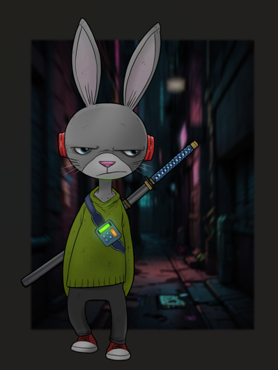
Wuzza dark night when I first realized eyez being followed. Been wandering true dee bioluminescenct alleys, muttering to meself an feeling grumpy as usual, when I heard a strange sound behind meh.
At first, I taught it was just mai imagination, but az I turned ta look, I caught a frame ova shadow glitching inta dee darkness above.
Didn't know who or wut it wuz following me, but mai instincts told something razor-spiked I didn't wanna ta roll with.
I picked up mai pace, tryin' to shake da shadows, but audio of flappin wings grew louder an closer wit each tick dat passed.
Before I knewz it, eyez was circled by a pack of bats.
Dey were massive, with auged-out claws an chromed teeth, hungry for MAI blood. I knew den I wuz looking inta dee abyss an it wuz peering back at meh droolin.
I tried ta run, but da cauldron wuz faster than I could eva upgrade ta be.
Swooping at meh, dare claws ripping through za air, I hadta dodge and weave wit all me rabbit wiles ta avoid gettin shredded.
I could hear dem screeching an cackling behind me an I knew dat I hadta get and quick.
I beat down the alley, me heart pounding from da adrenaline dump.
Dey were hot on my hop an close enough fer me ta catch a wiff of dem.
I turned a corner an ran straight into a deady enda balcony overlooking za lights an noise of da EntD. Dare wuz nowhere lefts ta go but down.
I whipped face squaring up wit de cloud, my fists clenched and fight ready.
The flying rats circled me, their wings flapping berserk.
I could see da evil in dare red eyes, and I knew dat I was in for a bloody scrap.
I just hoped it'd be more of dares din mine.
Mai prescience was spot on. I dodged an weaved as da bats attacked with dare boosted claws an teeth.
I fought back with everyting I had, punchin an kickin and screamin outta rage an desperation. I
landed more hits dan I took, but I wuz bloodied an gassed.
Despite my best efforts, I wuz gettin overwhelmed. Dare were too many an the bats were too auged for
meself to handle. I wuz losin ground, backing closer an closer toward da rail. Den in a moment of
clarity, I looked belows an spied a ways out.
I took my chance an jumped straight back over da rail into open air. I could feel ze cool wind on my face as I fell an den hit my mark, an ADdrone for Bananacom™, dat broke my fall wit little more than a dip in altitude. I wuz right on toppa ze access panel, so I popped it open an jacked in wit a hard line.
The hack wuz seamless an I instantly made it screech at da highest pitch it could hit. I saw da bats seize in mid-air an chuckled to myself at how well da rig worked. I locked that run in, jacked out
an hopped onto da back of a passing airbus headed right in da direction of my next destination.
When I got over da spot, ze cloud was almost on me. Just as they were about to dive, I dove myself.
I lost consciousness for a moment when I belly flopped into da hotel pool about 30 meters below. A couple rhino bodyguards of some hotshot influencer quickly fished me out with blasters in my face.
Da werebats screeched an cackled above me, furious at having lost dare prey. I looked up at 'em, blood
still in my ears. They hovered in da air fer a moment, eyeing me hungrily, before disappearing into da night.
I breathed a sigh of relief an collapsed to da ground, exhausted but alive. Da rhinos were still pissed, but dey saw what I escaped and survived. I knew dat I hadta be more careful in da future.
DIMM CITY is a dangerous place an staying frosty iz rule one. Rule zero is having enough aug to hold your own. I need an upgrade or me own crew if I want ta make it out alive da next scrap."
Citizen File
Lil Thump is a PC created for dreams in Dimm City by an actual dreamer. Their personality, looks, vibe, equipment, and skills are all chosen by the dreamer themselves. You can do the same by filling in the blanks on a character profile to create your very own character. For many dreamers, this is one of the most exciting parts of this experience: thinking about a character you want to play and designing them for the dream to come.
This chapter will guide you through all the choices you need to make to help you fill in the blanks and create a unique and interesting character. Don't worry about making mistakes or doing something wrong, just try to have fun with it and let your imagination do the work.
Before You Fill Anything In:
Don’t start with numbers. Start with a body, a vibe, and a reason you’re still breathing in Dimm City. This file isn’t about optimization, it’s about creating a CREATUREPUNK. If a choice would make Dimm City react to you, it belongs here. If it only makes you stronger, it probably comes later.
Visit dimm.city for a form-fillable PDF version of the Citizen File.

Image Is Everything
Before reputation comes recognition. Before recognition comes a glance. Dimmers speed-read bodies like text: names, scars, size, and stance all scanned in a heartbeat. This section defines how you’re read when the Dream first lays eyes on you.
What's Yr Handle?
Choose a name.
It can come from any culture, any language, or straight out of your imagination.
Pull it from a book, a show, a half-remembered dream, or invent something that sounds right for the city.
Designation
Let others know how to refer to you.
She/her, he/him, they/them, or something else entirely.
Do your best to address your fellow Dreamers as they wish to be addressed.
Names and pronouns matter when life itself is constantly trying to strip both away.
Scars, Size, and Survival
Choose the stage of life your character is in:
|
|
|
childhood |
|
adolescence |
|
young adulthood |
|
adulthood |
|
middle age |
|
old age |
|
extreme old age |
Expressing age in years means little in Dimm City. Here, age is experiential, not chronological.
Survival, scars, augmentation, and memory say far more than a number ever could.
You should also note your character’s height and weight using metric measurements.
Most citizens fall somewhere between 1 and 3 meters tall, with weight listed in kilograms.
Metric is the standard unit of measurement in Dimm City.
Other systems persist elsewhere, usually out of habit rather than utility.
Size carries no mechanical advantage. It’s a narrative choice that shapes how you move through the city, how others perceive you, and how easily you stay with your crew:
- Tiny: Under 1 meter tall. You move through Dimm City like a rumor. Vents, ducts, crawlspaces, and forgotten gaps welcome you, but keeping up with a full-sized crew in open streets can be exhausting.
- Small: About 1–1.5 meters tall. You fit where the city pinches and duck under things others clip their heads on. You’re quick in tight spaces, but reaching high panels or hauling big gear usually means asking for help.
- Medium: About 1.6–2.5 meters tall. The city is built for bodies like yours. Doors, vehicles, crowds, and cover mostly cooperate. This is the pace most crews unconsciously move at.
- Big: Over 2.5 to 4 meters tall. Your presence fills rooms, narrow alleys, transit tunnels, and draws eyes. Interior spaces sometimes slow you down, and sticking with the pack often means squeezing, crouching, or taking the long way around.
Once you know the body you’re moving through the city in, it’s time to define how it reads at a glance.
- Eyes: Your eyes are often the first thing people notice—and the first thing they judge. Organic, augmented, glowing, multifaceted, reflective, cracked, replaced. In Dimm City, eyes carry tells: what you’ve survived, what you’ve paid for, and what you’re capable of seeing that others can’t. Note their appearance, not for bonuses, but for how they mark you in conversation, surveillance footage, and memory.
- Skin: Skin is surface, history, and billboard all at once. Fur, scales, chitin, synth-sheen, scar-latticed flesh, fungal bloom, ceramic plating. Some bodies advertise their origins proudly. Others hide beneath layers of modification, damage, or deliberate disguise. Your skin influences how the city treats you long before you speak—who trusts you, who fears you, and who thinks you belong somewhere else.
- Species: Species is the label the city applies to you, whether you like it or not. It’s how systems categorize you, how strangers make assumptions, and how prejudice or privilege follows you through a crowd. In Dimm City, species is less about biology and more about perception. Bodies are mutable, identities are fluid, and the line between natural, altered, and artificial is permanently blurred.
Short answer?
Humans are boring.
It takes zero imagination to strap chrome on a human and call it a day. Dimm City doesn’t do easy. Dreamers are pushed to create, not default. You don’t “pick a body,” you birth one. Your form is part of your story, your power, and your problems.
The Pack Should Be Weird.
Five humans pulling a job? Fine. Functional. Forgettable.
A monkey Sporos, a fallen angel, a sentient fungus, a Gorpuloni, and a stitch-job breaking into an underground lab to steal sensitive data?
That’s not just a crew, that’s Creaturepunk!
Different bodies mean different instincts, solutions, and friction. Pack dynamics are wilder and way more fun!
Because the City Is Full of Freaks.
Dimm City isn’t a human world with monsters in the margins. It’s a city of the strange, the broken, and the impossible. Your pack should look like a close-up of the streets themselves—a walking cross-section of everything the city chews up and vomits on the sidewalk.
Humans blend in.
Creaturepunks don’t.
If it’s weird, messy, and waaaay unhinged, you got the vibe!
Choose an appearance that fits your character’s story and how you want the world to react to them.
None of this carries any inherent mechanical advantage by itself—it shapes narrative, social friction, and how visible or invisible you are in different parts of the city.
Once these basics are set, follow the remaining steps in this chapter, from 1 through 7, to finish creating your character.
Feel free to use your creativity to fill in the gaps.
You don’t need to follow the examples in this book at all.
You have a megaton of leeway to birth something entirely unique, strange, or absurd.
Create someone you’re excited to play.
If the character feels fun, dangerous, or a little unhinged in your hands, ya NAIL'D IT!
IAN NOTE: I WOULD LIKE TO RESTRUCTURE THE CITFILE USING DISCORD FEEDBACK AND/OR DESIGN IDEAS. THIS SECTION NEEDS SOMETHING THAT ALLOWS DREAMERS TO ENTER OTHER DETAILS AND THE PORTRAIT NEEDS TO BE FRONT AND CENTER ON THE PAGE.
1. Choose a specialty
Every dreamer’s got a sharp edge—your specialty is where it starts.
It’s the skillset that sets you apart, defines what you bring to the crew, and shapes the wild ways you survive the Dream.
Here’s a quick hit on the first eight specialties, each broken down in full in this chapter:
| Specialty |
|
| Augmerc |
Cybernetic Commando |
| Proxy |
Militant Monolith |
| Streetwarden |
Sprawl Sentinel |
| Gutterdruid |
Wold Witch |
| Cybersurgeon |
Mech Medic |
| Wirephreak |
Ping Predator |
| Technosorcerer |
Modular Magician |
| Etherlock |
Manifold Magus |
Augmerc
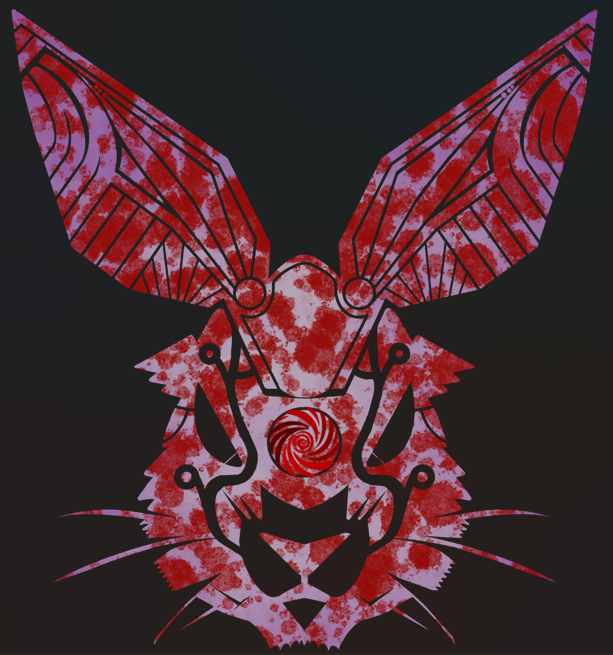
Heavily armed and wired for war, Augmercs are the blunt force of any squad.
They charge the front, soak the pain, and unload hell using brute strength and brutal tech.
Combat-born, augged to kill, and never outgunned.
Proxy
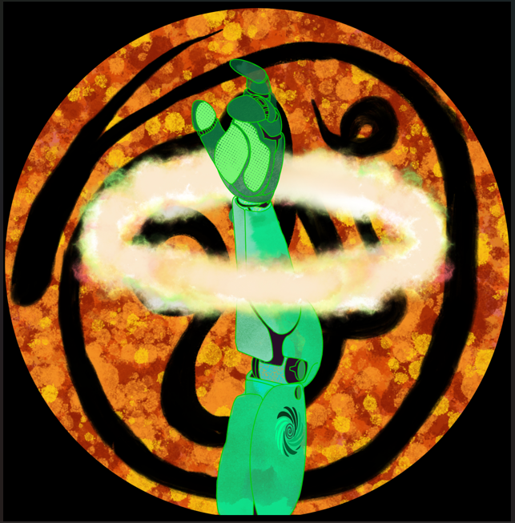
Marked by something higher—god, ghost, code, or conviction—Proxies walk the line between zealot and judge.
They wield divine force like a weapon, bending battles and conversations alike with power that burns louder than faith.
Streetwarden

They don’t wear badges—they are the law when no one else shows.
Streetwardens guard the city’s broken places with fists, grit, and a code all their own.
They know the alleys like arteries and protect the forgotten.
Defile their turf, and justice comes fast—quiet, brutal, and personal.
Gutterdruid
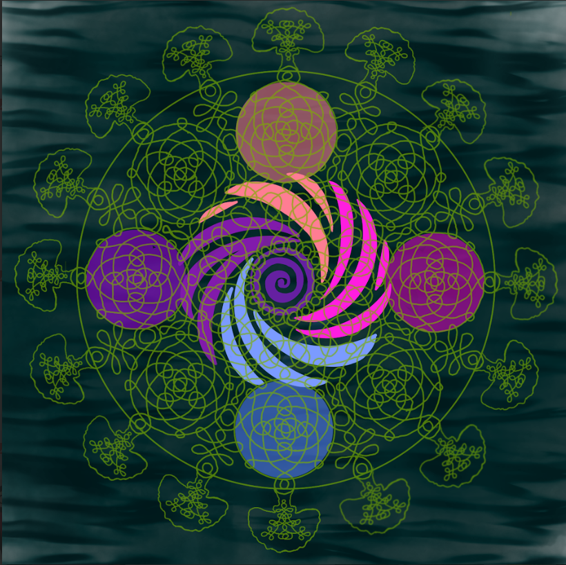
They walk the alleys like sacred ground—feeding the hungry, tending weeds, raising the forgotten.
Gutterdruids draw power from the pulse beneath the pavement, shaping the raw, primal force that keeps the city alive even as it rots.
Cybersurgeon
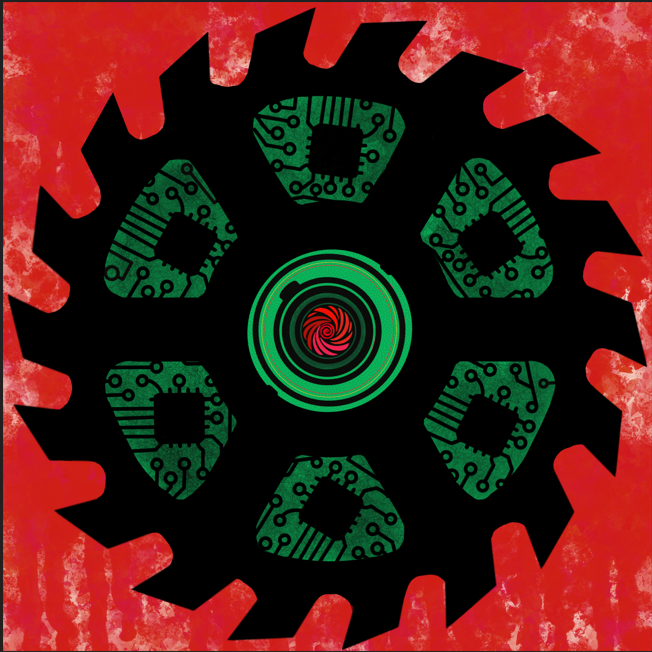
Life is flexible.
Cybersurgeons prove it daily—cutting, splicing, upgrading flesh into something more.
Whether they’re back-alley butchers or elite biomech specialists, these med-techs push the edge of evolution, one implant at a time.
Wirephreak
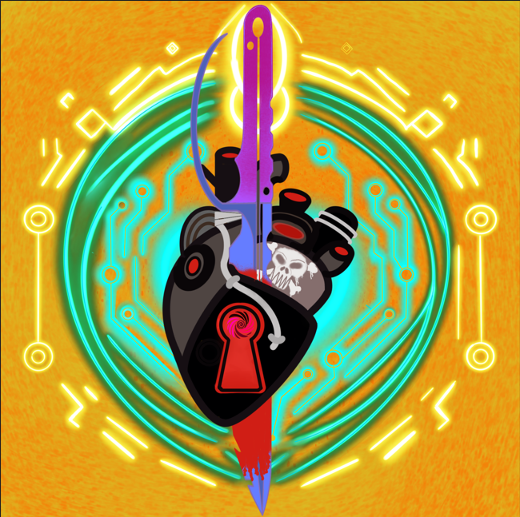
Killers, thieves, forgers—Wirephreaks specialize in slipping past locks, firewalls, and people.
Some work clean, some loud, all lethal.
Whether the job calls for stealth, sabotage, or sleight-of-hand, a Wirephreak on the crew means the job gets done.
Technosorcerer
Technosorcerers walk on the razor's edge between magic and technology.
They believe one to be no different than the other and use the strengths of each to help nullify the other's weaknesses.
These cybermagicians are gods among sporos in the urban sprawl of Dimm City because of their abilities to influence the masses and bend technology to their whims.
Etherlock
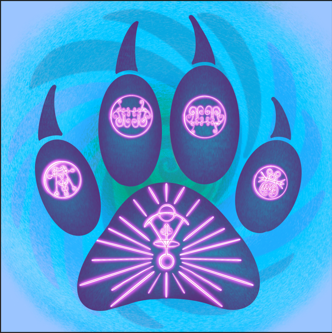
Secrets are currency—and Etherlocks are rich in them.
Tapping into elemental forces, spirit echoes, and the buried laws of the monoverse, they wield magic that slips through cracks in reality.
Some walk between worlds, others seek relics not meant for this one—all of them know power has a price.
Dual Specialist
Some PCs don’t just walk one path—they straddle two. Dual specialists can learn abilities from either specialty, following the progression rules for each. You still start with six abilities, and you still learn ability paths in order.
Dual Specialist PCs can learn up to 25 abilities. After that? You gotta burn one to earn one—swap an old ability for a new one during downtime and keep evolving.
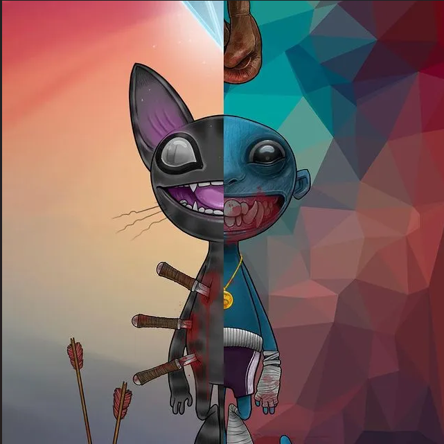
The Generalist
Some don’t follow tradition—they just grab what works. Generalists mix and match abilities from any specialty, forging custom paths without restriction. You still learn abilities in order within each path, but which paths? That’s up to you.
This freedom comes at a cost: Generalists can learn up to 20 abilities total (with no Spec Tweaks). Versatile as hell—but never a master.

2. Vibe
Before anyone knows your name, before they clock your species or count your scars, they feel you.
Something lingers after you leave the room. A pressure change. A smell. A silence that didn’t used to be there. Maybe it’s the way people stop talking when you walk past, or how eyes slide away like they’ve been burned once already.
That’s your vibe.
This isn’t about power. It doesn’t grant bonuses, unlock abilities, or bend the rules. It’s about impression. Presence. The signal you broadcast just by existing in the city.
Dimm City is packed wall-to-wall with strange bodies and stranger lives. Weird doesn’t make you special here. Intent does. Your vibe is how the city decides what you are before it decides what you’ve earned.
What you write here tells the Dream Master how NPCs react to you at a glance. Who leans in. Who backs off. Who clocks you as trouble, comfort, or opportunity. It shapes tone, tension, and first contact. Nothing more. Nothing less.
If it’s on your sheet, it’s fair game to be reflected back at you in the world. If it grants real power, that power comes later—from abilities, augments, trauma, or hard choices—not from vibes alone.
This is story signal. Not crunch. Not camouflage.
Choose something that feels right in your hands.
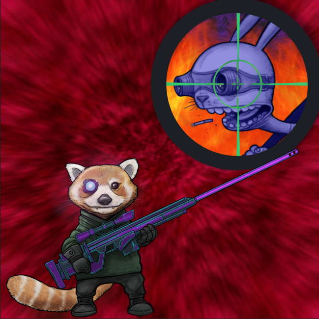
When others see me, they first notice my:
When others see me, they first feel/notice my:
|
|
|
|
|
Long shadow |
Sleepy drag |
Street-born instinct |
|
Outsider static |
Resting snarl |
Corporate chill |
|
Untamed momentum |
Quiet gravity |
Kindhearted calm |
|
Androgynous poise |
Thousand-yard stare |
Twitchy tension |
|
Low heat that's always simmering |
Easy charm with sharp edges |
Drifting gaze that never quite lands |
|
Fluid grace that doesn’t ask permission |
Smirk that knows more than it says |
Loud laughter that dares others to say sumpthin' |
|
Perfect posture like a loaded weapon |
A burning temper barely leashed |
An aura that simply says: DON'T! |
If it makes people lean back, lean in, or check the exits, you nailed it.
3. Origins Matter
Where Are You From?
This is where you were shaped.
A place that left marks, taught rules, or burned bridges you still feel. It doesn’t have to exist anymore.
|
|
|
A high-security borough in The Dark |
|
A half-burnt block of the ArcD |
|
A factory dormitory in the Tech District |
|
A ghetto or glass-farm in the Market |
|
A free theatre in a quiet corner of the EntD |
|
A booming city built on the face of a dead god |
|
A subterranean metropolis somewhere in the Infinitum |
Write the place that made you.
Where Do You Stay?
This is where you live now.
It might be home.
It might be temporary.
It might be somewhere the city hasn’t noticed yet.
Your current spot could be:
|
|
|
A squat, safehouse, or backroom anywhere in DimmC |
|
A rooftop, burrow, or crawlspace in a high rise tenement |
|
A vehicle, mobile rig, or ship berth that can dock anywhere |
|
Somewhere legal, illegal, or forgotten |
|
A free theatre in a quiet corner of the EntD |
|
A booming city built on the face of a dead god |
|
A subterranean metropolis somewhere in the Infinitum |
Home is where trouble finds you.
Megalomaniac
You have delusional fantasies of wealth or power.
Their ambition has no ceiling:
"I won't rest until I rule every inch of this world."
Addictive Personality
You have a tendency to become addicted to substances or activities, often seeking instant gratification without
considering the consequences.
The lie they cling to:
"Just one more hit and then I'll quit."
Socially Awkward
You struggle with social interactions and find it difficult to connect with others, often feeling uncomfortable or out of place in social settings.
Their inner panic surfaces fast:
"I never know what to say. I wish I could just disappear."
Cold-hearted
You lack empathy and tend to prioritize your own goals and desires over the well-being of others.
Their worldview is stripped of sentiment:
"I don't care about their suffering. It's survival of the
fittest."
Tech-Blind
You don’t just reject technology—you refuse to engage with it. Interfaces, implants, even basic systems like door panels or comms leave you fumbling or frozen. You’ve never learned how to operate them, and you won’t. This makes you vulnerable in a world wired with smartglass, biometric locks, and augmented communication.
While others navigate the mesh with ease, you rely on others or brute force—and sometimes, that costs time, trust, or lives.
Their rule is simple and absolute:
"If it needs a charge, I don’t touch it."
Other Flaws
If none of these flaws quite fit the character you’re building, choose from the following alternatives:
|
|
|
|
|
Nihilist |
Vain |
Fatalistic |
|
Wrathful |
Reckless |
Cynic |
|
Hedonist |
Oblivious |
Impish |
|
Impulsive |
Foolish |
Paranoia |
|
Fearful |
Thief |
Pedantic |
Your flaw is a nerve you and the DM can pinch to make things interesting. It doesn’t make you weak, it makes you dangerous, unpredictable, and real.
Play it honestly. Dreams gets real when your flaws cost you something.
6. Think Big an Go Geddit!!!
What does your character want most? Write a dream big enough that the city will try to stop you from having it.Give them something big to work toward that fuels their desire for adventure and their lust for life.
I Dream to:
Hack Daemon and Expose the Truth That Could Ignite a Revolution
Daemon isn’t just a leader, they're a cult burning the city’s operating system. Every feed, every riot, every “random” patrol routes back to them somehow. You don’t want to kill Daemon, you want to unmask them for what they really are. Crack the shell, drag their secrets out in front of every DimmCit that'll peep 'em, and show the city see what’s really been steering their lives.
If you succeed, Dimm City won’t explode.
It’ll wake up, and that’s far more dangerous!
Free Myself from a Gang That Wants Me Dead
Somewhere out there is a rival pack that knows your face, your habits, and exactly how you scream when cornered. Maybe you crossed them, maybe you were born into them, maybe you were just useful until you weren’t. Every alley feels like a trap, every favor feels poisoned. Freedom doesn’t mean forgiveness, it means making sure they can’t finish the job.
One way or another, this ends with blood, leverage, or a smoking hole where their grip used to be.
Discover the Secrets of My Own Origins in a World Built on Anonymity
Names rot fast. Records glitch. Homes vanish.
You don’t know if you were grown, printed, stitched, summoned, or stolen. There are gaps in your past that itch when the lights flicker just right. Someone out there knows where you came from and why you were made the way you are.
The truth might give you clarity, or it might prove you were never meant to be free in the first place...
Execute the Perfect Heist to Cripple Megacorps and Fuel the Rebellion
This isn’t about credits, it’s about impact.
Hit the right vault, siphon the right data, hijack the right shipment, and suddenly the megacorps start bleeding in public.
The plan has to be clean, fast, and brutal, because the fallout will be the same.
Every stolen asset becomes hope in the wrong hands and a death sentence in yours.
If you pull it off, the city will learn that giants can bleed from thousands of wounds or just one lucky WHAAAAP!
Have My Name Whispered in the Shadows as a Symbol of Defiance
You don’t want fame. You want fear, hope, and rumor twisted together. A name people say quietly when the drones pass overhead. A tag on a wall that means someone fought back and lived.
The moment strangers start acting because they believe in what you represent, you stop being just another body in the sprawl. That’s when Dimm City starts watching you closely, and deciding whether to erase you or turn you into a legend.
Other Dreams
If none of these Dreams fit the fire burning in your character, choose from the following—or forge something worse:
|
|
|
Escape the oppressive grip of the megacorps choking the city. |
|
Carve out a small sanctuary amid the urban hell of Dimm City. |
|
Map the lost underground layers of Dimm City. |
|
Retrieve a stolen piece of advanced technology to aid the resistance. |
|
Redistribute wealth and resources from the ruling elite to the underclass. |
|
Create a masterpiece of art that reflects grim reality and challenges the status quo. |
|
Rise as a leader of the underground resistance. |
|
Encounter the enigmatic entities that control the digital realm. |
|
Erase the haunting shadows of your past through relentless perseverance. |
Your Dream is a beacon the city wants to snuff out.
Play it like it means something.
7. Da Devil's in ze Deets
When you're done with steps 1 through 6, the Citizen's File is pretty much good to go. You have just a couple more steps before your creature is ready to punk!
Choose Your Abilities
From the next chapter, select six Abilities tied to the Specialty you chose earlier.
These define how you fight, think, move, bend reality, or break systems when things get loud or go absolutely sideways.
Your Specialty shapes what’s available, but you decide how it manifests.
You don’t need to master everything. Pick the Abilities that feel like second nature to your character, the ones you’d reach for when instinct takes over.
Write them into the Abilities section of your sheet.
Here's what we suggest if you wanna quickstart your PC:
| Specialty |
Starting Gear |
| Augmerc |
Punishing Counter, Rage Hit, Spit Fire, Bodycover, Rub Some Dirt on It!, and Size Up. |
| Proxy |
Lay on Hands, Avow, Second Guess, Avenging Armament, Inspire, and Shield |
| Streetwarden |
Quick Fix, Trail, Longshot, Speak with Animal, Two Hands- Two Strikes, and Trapping the Liger |
| Gutterdruid |
Animal Form, Vine of Thorns, Freezing Gust, Guerrillas in the Mist, Wild Aspect, and Command Nature |
| Cybersurgeon |
Peep and Patch, Reboot, Dreamwave, Vitalsence, Blight Brusier, and ShockScramble |
| Wirephreak |
Flanking Foray, Strapped, Shadow on the Street, Persona, Unseen, and Free Runner |
| Technosorcerer |
Practical Power, Optiphony, Private Message, Helper Object, Segment Fault, and White Hot Sparks |
| Etherlock |
Forceshot, Lightfooted, Familiar Spirit, Variegated Shield, Cinderslide, and Eldrich Abolishment |
Quickstart or Deep Dive—Your Call
The table above is grab-and-go. If you want to get in, get dirty, and start running the Dream fast, pick the six Abilities listed for your Specialty and call it good. They’re balanced, versatile, and built to show off what your role does best when things go loud, weird, or sideways.
But nothing here is locked.
If you want to dig deeper, mix flavors, or build something more personal, crack open the next chapter and choose your own six from your Specialty’s list.
Swap instinct for intention. Tune your PC's abilities to match your vision of them and the way you see them solving problems personally.
Some may even widen their lane by becoming a Dual Specialist or refusing to stick to just one path at all. That choice can be made right now as you get your feet under you.
Quickstart gets you moving when you don't know what to do. Custom picks are better when your PC has a niche you wish to fill.
Either way, once those Abilities are chosen, you’re almost ready to step into Dimm City and see what you can break first.
Flesh, Cybernetics, and What’s Normal
Cybernetics are common in Dimm City—but extreme cybernetics aren’t.
Most Dimmers aren’t walking arsenals or chrome nightmares. The average citizen has little more than a Neurolink to wirelessly interface with transit gates, doors, terminals, and city systems, or a prosthetic limb/eye replacing something they lost to work accidents, violence, or bad luck.
These augs are practical, regulated, and about staying functional, not becoming dangerous.
Heavy augmentation exists, but it’s rare, expensive, rarely subtle, and sometimes illegal.
Simply put, ubermech bodies draw gobs of attention—from suits, gangs, government med-tech auditors, and things that watch the city from deeper layers.
For most people, too much chrome isn’t freedom: It’s debt, surveillance, constant pain/frustration, or a short lifespan with better specs.
If your character is significantly augmented, that says something about their past, their resources, or the risks they’re willing to live with. Cybernetics aren’t fashion by default—they’re scars, tools, or compromises that followed you home.
You’ll get chances to upgrade, replace, or rebuild yourself later.
Right now, assume your body looks like something that could still blend into a crowd… at least until it needs to do something extraordinary.
A few basic augments and mods are discussed in the back of the book with the other equipment.
Using the theory presented there, you and your DM could create almost anything you want.
Load Your Gear
From the final chapter, choose up to twelve items to start play with.
Weapons, tools, weird tech, keepsakes, junk that still works. This is what’s in your pockets, on your back, or bolted to your ride when the Dream kicks off.
Not everything you carry is a weapon, a tool, or a piece of tech.
Dimm City Dreamers usually have a handful of small, forgettable personal items on them—things like scrap stationery, lip balm, gloves, cheap charms, half-dead lighters, or whatever helps them get through the day. These don’t count against your Inventory limit and don’t need to be written down unless they matter to the story.
If one of these details becomes important, the Dream Master may ask you to name it, describe it, or decide when you picked it up. Until then, assume you’ve got the little stuff a person living in Dimm City would reasonably carry.
The city doesn’t care about your pockets.
It cares about what you do with what’s in them.
Twelve items is most character's carrying limit, but the Dream Master may adjust how many you can fill/what you have in them already based on tone, starting conditions, PC size, or how cruel they’re feeling that day. Trust them. They’re not trying to take your toys, just set the stakes.
Record your choices in the Inventory section of your sheet.
What is actually on the list is just to give the gist of what an average dimmer is running around with.
If you have some different ideas, talk to your DM and see if they're cool with what you're thinking of.
Here's what we suggest if you wanna quickstart your PC:
Basic Dimm City Loadout (No Matter Who You Are)
1. One Close-Range Problem Solver
A smachet, boot blade, shock glove, crowbar—something that works when the distance disappears.
2. One Reach Option
Thrown junk, a cheap blaster, wrist rocket, or weaponized superball.
You don’t need precision, just space.
3. Air Filter / Breather Mask
Low-quality air doesn’t negotiate.
Neither do spores, gas, or ash.
4. Charge Cell
Power keeps implants, tools, lights, and weapons alive.
Running dry gets you stranded or worse.
5. Utility Wrap
Scarf, sling, bandage, filter, mask/hood, or weapon…
One item, dozens of uses.
6. Comms
If hardwiring a comm into your brain is a step too far, the Bananacom YellaBox, STS SmartClaw, or Feedback INC InspireWire are all solid primary options.
7. Power Pack/Ammo
Normally a full pack or mag'll last a firefight, but what if it doesn't?
Specialty Gear
If you’re quickstarting, grab the basic loadout above, then add the suggested gear for your Specialty below:
| Specialty |
Suggested Gear |
| Augmerc |
TactMed Kit, Contingency Kit, Gutter Snap (1), Armor (you describe), Weapon Reload |
| Proxy |
Divine Inspiration (focus object tied to your belief or cause), M.E.S.S. Kit, Armor (you describe),Pop Star (1), TactMed Kit |
| Streetwarden |
Bypass Kit, Pulse Chalk, Snake Cable, Firefly ANF, Dystopack |
| Gutterdruid |
Pulse Chalk, Blackout Kit, Dystopack, M.E.S.S. Kit |
| Cybersurgeon |
TactMed Kit, TechMech Kit, BioGrip, Ghostwalker Technologies Wraith Netdeck, Black Pill (1) |
| Wirephreak |
Bypass Kit, Com Tape, Pulse Beacon, Black Pill (1), Ghostwalker Technologies Wraith Netdeck |
| Technosorcerer |
TechMech Kit, Black Pill (1), Ashcan (1), Pulse Beacon |
| Etherlock |
TactMed Kit, Contingency Kit, Blackout Kit |
Now you’re ready for almost anything.
You'll fill in the unknowns when you have to.
Lock it in and step into the mist.
From this point on, you learn fast or you won’t last.

The alley narrowed to a throat of shadow as they reached the bunker’s blind side. Rook paused, agile fingers lifting mid-air, knuckles flexing with simian grace. The ambient hum dipped a fraction.
“Three layers,” he murmured, dark eyes flicking as invisible data scrolled past his vision. “Motion, thermal, facial-recognition. Someone was paranoid.”
Zephyr grinned, sharp and feline, and rolled her shoulders. LEDs along her spine flared as she stretched, ready to pounce, color bleeding into sigils that crawled and rearranged themselves.
“Someone interesting,” she purred, the words hanging, vibrating low in the air.
Prism stepped forward, long ears barely stirring as the ground softened beneath their feet. Gravity loosened its grip, monoversal pressure bending just enough to lie. Their presence dulled the sensors’ edge, probability smearing like grease across a lens. Red became amber. Amber forgot what it was watching.
Rook exhaled and went to work. One system collapsed into another, blind spots stacking neatly as dominoes fell. His tail gave a single, absent twitch as he leaned in. He didn’t rush. He didn’t need to. The system listened when he spoke its language.
A low thrum answered from behind.
Kyra and Kyne took position without a word, heavy hooves setting with practiced certainty on either side of the sealed door. Power surged through their ungulate frames, cybernetic limbs waking like enraged beasts. Kyra cracked her knuckles. Kyne leaned in, laser-sharpened horn grazing reinforced polymer.
“On you,” Kyra said.
Zephyr snapped her fingers.
The lights died.
Prism lifted a hand. The air thickened. Sound folded inward. Gravity hesitated, prey-frozen.
Rook severed the last thread.
The Sledge Sisters struck as one.
The door didn’t explode. It failed. Metal screamed, folded, and vanished inward under a synchronized impact that shook dust from the ceiling and sent shockwaves crawling down the corridor beyond.
Silence followed. Then darkness.
Five shadows moved as one, already inside, already gone.
How Abilities Work
How that pack works wasn’t luck.
It was abilities firing in sequence.
Each move opened space.
Each ability set up the next.
In Dimm City, abilities aren’t just what you can do.
They’re learned techniques, invasive augments, practiced rituals, and raw instinct working as one.
The rules that follow break down how abilities activate, how they grow, and how they interlock when the pack moves together.
You Can Be a Hero (…or Not)
Ever wish you could do something impossible?
Rip through a firewall with your mind.
Call a beast from the gutters to help you in a pinch.
Bend gravity, time, or fate just enough to survive?
That’s all possible in a Dream.
Abilities are how your character breaks reality in the monoverse. They’re the tricks, instincts, augments, spells, and hard-earned edge that make you dangerous, strange, or unforgettable.
This chapter explains what abilities are, how they work, and how you get more of them as the Dream unfolds.
Choosing Abilities
Before your first session, choose six abilities from your Specialty’s catalog.
This is your starting kit.
You can use these abilities immediately.
At the end of each Dream, you may learn one new ability.
With your DM’s permission, you may also retrain abilities you’re no longer feeling.
Nothing is locked forever.
Your character evolves.
SIDEBAR
Breaking the lane:
Dual Specialist
Walk two paths. Learn abilities from two Specialties, following progression rules for each. Start with six as normal split between the two catalogues.
Cap: 25 abilities. After that, swap one between dreams if you aren't vibing on it.
Generalist
Take what works. Mix abilities from any Specialty. Paths stay ordered, but which ones you take is up to you out of all the specialties out there.
Cap: 20 abilities, no Spec Tweaks. Flexible as hell, but yr never a master.
Learning Paths
Abilities are organized into learning paths.
Each path has a sequence.
You must learn abilities from the specialties you have access to in order, starting at the top of a path.
You don’t need to finish one path first through the last before starting another.
Mix freely. Advance deliberately.
Want breadth? Take the first ability from multiple paths.
Want focus? Go deep on one or two.
The only rule:
No jumping straight to god-mode!
Let's take the Streetwarden's Friend path as an example. In order, the Friend path's abilities are:
Friend Ability Path
| Tier |
Ability |
| First |
Speak with Animal |
| Second |
Beast Friend |
| Third |
Courier |
| Fourth |
Savage Link |
| Fifth |
Call to the Wild |
To learn Savage Link, you must first learn:
Speak with Animal → Beast Friend → Courier.
Paths are progression.
They tell a story about your power.
Augment Points
Some abilities demand a push. That push costs AP (Augment Points).
If an ability lists an AP cost, you must spend that AP to activate it and immediately deduct it from your current AP total. No wind-up. No delay.
Many abilities can be used in different ways. Each of these is an option, and each option may have its own AP cost.
For example, if an option lists “3 AP”, it costs 3 AP to use that version of the ability.
Some abilities offer options with different AP costs (1-X for example), letting you decide how hard you push and how much you’re willing to burn to get the result you want.
Here’s an Etherlock fire ability as an example:
Pyrohack
'ey phreak, ya got a light?
1 AP You jack fire straight from its elemental home or siphon it out of the city’s digital veins, riding it through the air in a crackling burst that slams one nearby target for 3 fire/electroshock damage.
4-X AP You push too much power through the grid or tear open a raw pocket of flame, triggering a full-blown inferno. Nearby circuitry fries, the area erupts, and every unlucky creature caught in it takes 5 fire/electroshock damage. The location is left wrecked and smoldering, posing a risk of ignition unless dealt with.
For each AP you spend above the base 4 AP required, you deal an additional point of damage.
*** In this example, you could spend 2 AP to create a small bolt of spark/flame, or instead spend 4+ AP to create an electricity infused firestorm.
The "X" in an ability cost means you may choose how much AP to spend on the ability for a particular listed effect.
If one of an ability's options has an activation cost of 0, you can use it without spending any AP (the first power of most ability paths cost 0 AP).
"At the Table"
If an ability asks you to do something at the table, that means doing it in the real world. If you can't do it, that's okay; you may ask another player to assist you, or just ignore the requirement.
If you're uncomfortable performing one of the game's abilities, like reading poetry, you may describe how your character performs the ability instead of doing it yourself.
"ROLL THE DIE!"
If an ability says to ROLL THE DIE!, it means you have to ROLL THE DIE! to see what happens when you use it. Any time you ROLL THE DIE! there is a possibility of failure.
As usual, the DM will decide what the consequences of the die roll are. But if an ability lists its own set of special consequences, the DM will use those instead.
DM's Call
The Dream Master has final say on how you can use certain abilities. When something is marked "DM's call", it is up to your Dream Master to decide exactly how it works in the current situation. You can make your case to them on how you think it should play out, but the DM is the final arbiter in how the ability is applied.
Specialties
Each sentient creature that you come across in the Monoverse has its own particular skill set. In DimmC, there are some common specialties you'll find in any one crew. This isn't to say there's not more out there, but the 8 in this book are the ones a body'd find doing the grunt work in the five districts.
Spec Tweaks: Personalized Evolution
In Dimm City RPG, survival isn’t just about skill—it’s about adaptation. Specialty Tweaks, or Spec Tweaks, are defining powers that sharpen your edge, shaped by training, instinct, and the grafted mods that make each specialty different.
Some tweaks are earned through grit and scars, others burned into muscle memory, coded into wetware, or whispered into you by forces no one can name. No two operatives mod themselves the same way—your tweaks are yours alone, and in Dimm City, they might be the only thing that keeps you breathing.
Dual-class specialists must choose which side of themselves to lean into: each dream, they pick a Tweak from one of their specialties (never both), though they can swap which side they favor from job to job. Generalists, though versatile, never tap into Spec Tweaks at all—raw adaptability comes at the cost of these razor-edged evolutions.
Every specialty evolves along its own brutal logic, shaping bodies, minds, and tactics in ways only Dimm City would allow.
What follows are the Spec Tweaks and abilities that define each path—starting with the ones who solve problems head-on.
Augmerc
An Augmerc is muscle for hire. They may be some local thugs or high-level corporate bodyguards; only difference being gear and training. An Augmerc may be a leader of a pack or a crusty lone wolf. Either way, they don't get paid until the job is done.
This martial class makes its way through skill, weapons, and cybernetic augmentations. The best of them are trained up, tooled up, and part meat/part machine. What kind of upgrades and gear your Augmerc puts to use is up to you.
If you want to start quickly, choose these abilities: Punishing Counter, Rage Hit, Spit Flame, Bodycover, Rub Some Dirt on It!, and Size Up.
Spec Tweak: Hard Reset
Your implants and/or personal grit help you override your body's limits. When you would be knocked unconscious or killed, you can choose to stay on your feet using this tweak. At the start of each round you remain at 0 HP, ROLL A DIE!—on an 11 or higher, you continue on, ignoring pain and damage.
Once you fail this roll, you collapse until healed. Hard Reset can only be triggered once per Dream.
If you take a hit while already at 0 HP, ROLL A DIE! If your result is equal to or less than the damage dealt, you're dead on your feet. (Example: if you’re struck for 2 HP while at death’s door, you die on a roll of 1 or 2.) Surviving this roll might still leave you scarred or carrying a permanent injury (DM's call).

Dueling
Blasters are great if you have distance and 'nough cool, but sometimes upclose and PER-SUN-AL izza better signature ta leave'em wit!
- Punishing Counter
- Rage Hit
- Pain Compliance
- Disarm
- Duel
Punishing Counter
See an openin, ya take it! Best timez to pop'em iz when der relaxin back.
- 0 AP When an enemy within reach rolls a tough choice or worse on a basic attack against you, you parry their attack and take no damage. If they roll a failure or worse, you may also immediately ROLL THE DIE! to make a basic attack on them. This counterattack does not count as an action on your turn. You can use this ability only once per round.
- 1 AP When an enemy you can see attacks you with a ranged basic attack and rolls a tough choice or worse, you dodge their attack and take no damage. If they roll a failure or worse, you may also immediately ROLL THE DIE! to make a ranged basic attack on them if you have a ranged weapon and ammo available (you immediately stow whatever is in your hand(s) safely on your person and draw). Using this ability does not count as an action on your turn and you can only use it once per round.
RAGE HIT
In some situations, it's best to risk it, swing wild, an hit hard!
- 0 AP You attack with reckless power, disregarding your safety. This move should be a signature of its user. Describe it in detail in all its unorthodox glory! ROLL THE DIE! and consult the table of outcomes below.
- 1 AP ROLL THE DIE TWICE! You can make two basic attacks against one target. If either roll results in a 1, both rolls are considered catastrophes (consult your DM for their call on the horrible effect of your crap luck and/or choice here).
Outcomes
| Roll |
Outcome |
| 20 |
You deal quadruple damage (or double a special weapon's damage). |
| 11 - 19 |
You deal double damage. |
| 6 - 10 |
You deal double damage to the target, but they counter with a basic attack. |
| 2 - 5 |
You miss, and all enemies within reach may counter with a basic attack. |
| 1 |
You fall prone and lose your next turn (or other detrimental effects at the DM's option). |
Pain Compliance
Enough pain'll make a punk outta anyone!
0 AP Take Control: You overpower one target (Fodder and operators only! No masters!) within reach and place them in a painful, compromised hold, controlling them. Describe how you do it.
A controlled target is immobilized in your grasp and cannot react out of turn. In addition, the user can ROLL A DIE! to utilize one of the following techniques:
- The target can be thrown prone (up to 2 Damage if you like).
- Throw the target prone into a nearby area (up to 2 Damage if you push them into something solid).
- Move them with you to a space in reach using your move (2 Damage if you like),
and is released immediately if you are incapacitated, move to a nearby area (or more), are forcibly moved, or choose to let go. While a target is controlled they roll Surreal and all attack rolls against them are made with Lucidity and deal double damage regardless of who is attacking.
The user can maintain control into subsequent rounds by spending an action to sustain the ability. If the user stops spending actions to maintain control, the target it automatically released.
, push them into a nearby area, or move yourself into an area nearby doing 1 damage with this option.
2 AP Applied Leverage: This version has all the effects and mechanics of Take Control. Each round you spend an action to initiate or sustain this ability and while the target remains Controlled, you may choose one of the following effects (you may choose the same option each round, if applicable):
Break Them: Disable one limb (arm or leg) until the end of the encounter.
- Disabled arm: The target cannot use that arm to attack, hold items, or activate gear.
- Disabled leg: The target’s movement speed becomes 0; if released, they immediately fall prone.
OR
Strip Them: ROLL A DIE! Surreal- On a success, remove one non-implanted item the target is carrying or holding.
- A stripped item is either placed in your inventory (space allowing) or dropped at your feet (your choice).
- Cybernetic implants cannot be removed this way.
If you stop spending actions to maintain control, no further Break or Strip effects may be applied and the target is released.
3 AP Lights Out: This version has all the effects and mechanics of Take Control, plus a lethal escalation while the target remains Controlled:
When you first apply this effect, the target is choked unconscious or shut down at the end of your turn. While unconscious, the target is helpless and takes no actions.
The target may be awakened if they take any damage or if another creature spends an action to shake or revive them. If you release the target, they immediately fall prone.
If you spend an action on your next turn to continue sustaining control on the same unconscious target, you kill the target outright. This kill occurs immediately and does not require a roll.
If control is broken, released, or interrupted before the second action is spent, the target remains unconscious but survives.
The Fine Print: Escaping A Grapple- Some operators or commoners might attempt to escape this hold on their turn. If you think it's too much, ignore it.
If you wanna give 'em a chance, lettum ROLL A DIE!
Both combatants should roll (remember, the victim of Pain Compliance is Surreal) with the winner either escaping or maintaining control.
Bad Timing
Ya missed. Dat's mine now!
2 AP Weapon Snatch: This reactive technique turns enemy mistakes into momentum.
If you have a free hand, you may take the weapon for yourself (if inventory space allows), otherwise you may toss the weapon to a nearby area.
This disarm may be performed either:
- On your turn, using your action to ROLL A DIE! (11+ succeeds), or
- Reactively when the trigger occurs (does not count as an action on your turn).
3 AP Hard Take: When an enemy within reach rolls a tough choice on a basic attack against you, you parry the blow and take no damage, wrenching the weapon from their grip.
If their roll was a failure, you may immediately make a basic attack against the same target using your own weapon or the captured one (stowing your own as part of the motion).
If their roll was a catastrophe, you may immediately hit with a basic attack against the same target using your own weapon or the captured one (stowing your own as part of the motion) and deal double damage.
This counterattack does not count as an action on your turn.
Duel (Rework this in Warren G Style TAUNT TO KEEP ATTENTION)
It's rare, but an honest to powers duel is better than a wild night in the EntD!
- 1 AP You compel a nearby creature to fight you in single combat. However, the creature must already be hostile toward you.
Before you attempt to use this power, assign the previous abilities in this tree to a standard deck of cards (Punishing Counter, RAGE HIT!, Pain Compliance, Disarm). Choose three of these cards to use and place them facedown on the table, keeping it secret from the Dream Master.
The DM must guess the identity of each card. Reveal the card after each guess. If the DM guesses correctly, you fail to use the ability on that card. If they guess incorrectly, you use the ability immediately at no AP cost, and it is automatically successful.
If the DM guesses all three correctly, your opponent immediately makes a successful counterattack against you. But if they get all three guesses wrong, you may extend the Duel for another round of three guesses without spending the 1 AP required to initiate the duel.
The Fifth Profession
Being a bodyguard is more than just keeping your client alive. You gotta know when to be low key and when to bomb the shot.
- Spit Flame
- Bodycover
- Blitz
- Strategic Withdrawal
- Executive Protection
Spit Flame
Your words are your first attack.
- 0 AP Make a nearby creature angry at you by saying something or making a rude gesture. Your target must be able to understand your intent. For the next byte, the target focuses its attention on you, ignoring all others. The effect ends if the target is hit by another creature or if hostilities subside.
Bodycover
Always be in-between your principle and danger.
- 1 AP If a nearby NPC is about to attack someone, you may rush to intercept the attack (effectively positioning you in-between the attacker and your principal). You must say you're using this ability as soon as the DM declares the attack. The NPC makes their attack on you instead. When you intercept the attack, the attacker immediately becomes affected by your Spit Flame ability.
Blitz
When you have to close the gap, do it fast and go hard.
- 1 AP ROLL A DIE! You sprint toward a target in range that you have a clear line of sight and can move to and make a basic attack against them. If you roll a success or a triumph, they take double damage and are stunned until the end of their next turn (unable to take any actions whatsoever). This cannot be used against targets in reach.
- 2 AP In an instant, you choose a point in range that you want to reach and can move to. You explode through any foes in your path, knocking them down and dealing 1 damage to each of them. Targets you knock down are dazed and cannot use special abilities during their next turn. Once you reach your destination, you can attack one target in reach for 4 damage.
Strategic Withdrawal
The best way to protect your client is to just not be where there's danger.
- 2 AP You Spit Flame on all nearby enemies to give your allies cover to regroup. If you are in combat, one nearby enemy immediately gets to attack you.
You and any willing allies can then dip out of the fight and safely leave the scene thanks to your distraction. Your path of retreat is too complicated for fodder and operators to follow you themselves, but masters may still try to run you down with a few operators in tow.
Executive Protection
There are rules for bodyguards to follow, but the principle being protected also has rules.
- 3 AP Choose a member of your party or NPC you wish to protect from harm. They must willingly accept your protection. You may only place one individual under your protection at a time and the responsibility you feel for your principal cannot be ignored until they die or refuse further safeguarding.
- You may now use your Bodycover ability for no AP to defend your principal from an attack.
- You can now sense when your principal is in danger, as long as you are in the same substantiality.
- You are immune to fear when your principal is at death's door.
- You get a distinct vibe when your principal is within 10 klicks of you and can track them flawlessly.
When you make someone your principal, you read them the rules you both must follow to stay safe. This can be as simple as declaring that or could be a detailed bit of role playing.
Lead from the Front
Command is convincin yr people ta do a job ya need dun becuz they wanna do it!
- Rub Some Dirt on It!
- Battle Cry
- War Story
- Boost Morale
- Marshal
Rub Some Dirt on It!
Y'all are bleedin and bruised?! That's nuthin!
- 1 AP When you regroup, you bolster the spirits of your party by talking about a time you or a warrior you know of was injured or outnumbered and still pressed to fight. It'd be great if you'd describe this story at the table for your friends. You can write your own or read one from another source, like from a book, movie, YouTube, or a TV show. When completed, your party recovers an additional 3 HP from regrouping.
Battle Cry
Yo mama's got a glass eye with a fish innit!
2 AP Your presence on the battlefield reassures your squad mates and bolsters morale even in the most pitched situations. When you shout your support, it makes your team push harder to make you proud.
Yell something funny, menacing, or inspirational. When you do it, each member of the party gains the option to redo their next roll. This option expires at the end of your scene if it has not been used.
War Story
Diddai eva tell yous goons bout the time I almost got pinched fighting a swarm of auged-out bats in da Dark?
|
|
| 0 AP |
Once per game session, you may earn 2 AP by recounting a battle from your past adventures. You can only use this ability during downtime in the story, like when you regroup or undertake a journey. (you can't spout history during combat.) You must recount a different conflict each time you use this ability. If there is no battle to recount, you can make one up from your character's past. |
Boost Morale
When we get outta dis, Imma take whoever has the most kills to the EntD!
When agents are out in the field for long stretches and battles get hard, motivation wanes and mistakes are made. That doesn't have to happen on your watch though!
When an ally in range ROLLS THE DIE!, you can yell an encouraging phrase or pithy remark to push them and elevate either result. Your use of this ability does not count as an action on your turn but you can only use it once per round.
- 2 AP When an ally rolls a Catastrophe (1) or a Failure (2-5), you can make the result a Hard Choice.
- 1 AP When an ally rolls a Hard Choice (6-10), you can make the result a Success. You must do this before the DM details the hard choice.
- 3 AP When an ally rolls a Success (11-19), you can make the result a Triumph. Effectively rolling a 20 for purposes of triggering other powers.
Marshal
HEAVE! HO!!! HEAVE! HO!!! THIS BARRICADE HAS GOT TO GO!!!!
- 1 AP When you're up against a wall you can't handle the situation alone, you can get your crew to synergize and overcome.
Everyone throwing in must ROLL THE DIE! If the majority of players roll a success or better, y'all beat the odds.
You can use this for feats that would be improbable to accomplish alone, like popping open a reinforced door, freeing a trapped citizen from a collapsed building, or lifting a damaged rail to make a quick fix and avoid disaster. The whole squad must be nearby and unimpaired to render assistance. The DM will decide what is outside of the limits of this ability.
Tactical Command
An army of 100 can defeat 10,000 with effective leadership and a bit of luck.
- Size Up
- Field Requisition
- Tricky Stratagem
- Impressment
- Battle Buddy
Size Up
The easiest way to end the fight is to take out the biggest threat first. The hard part is telling who's the biggest threat.
- 0 AP You can take one look at a mob and know who's the boss. The DM will give you a peep into their skill sets, strengths, vulnerabilities, and/or resistances. Bare bones, you will catch whether you can walk through 'em, you're an even match, or you're cruzin for a bruisin.
The DM will hep you to the opposition's stats narratively. For example, they might say "you see the glampunks shaking and sweating in the cold. They must be strung out on something and don't seem fit enough to put up a good fight" rather than spilling that you'd be able to stomp them easy with your crew at full power.
Field Requisition
Pack yr ness gear wit chu, but snag ya sup from da enemy on yr march.
- 1 AP When you're on the move, you can find enough food and water to fill your crew's bellies now and enough for the next meal as well. This can only be used once per rest.
Tricky Stratagem
Always jump frum da shadows when the bad guys are on der ropes.
- 3 AP If you have time to prepare before a conflict and you can choose when it begins, you may ambush your enemies and take the first round, denying your targets any actions during the surprise round. Before the action begins, each party member must say what they will do during their first turn. The Dream Master will then resolve these actions simultaneously.
Impressment
Hey yous! Ya wanna merc da monoverse?! Comeer!!!
- 1-X AP You command a nearby fodder or operator NPC to assist you (they cannot currently be hostile toward you). You can have them join a fight or perform other tasks, like watching who comes and goes from a building, defending an area, or delivering a message. They will follow your commands to the best of their ability, but they won't follow absurd or suicidal orders. If threats are used by PCs with poor or unknown reputations, the NPC will do the bare minimum and abandon the task. Persuasive PCs with stellar reps can expect citizens to go above and beyond and may even gain some fans from the interaction. Being nice and respectful gets the best results when using this ability.
If you want to press more than one NPC into service, you must pay an additional AP per individual.
The DM plays the part of the NPC(s). After one day or when they complete the task you give them, the recruit(s) will leave you and return to their business. Some may not though...
Battle Buddy
Lone wolves have an advantage sometimes, but I feel a lot better in a fight knowing my bud's got my back.
- 7 AP While in a populated area (city, suburbs, hamlet, etc...),
you may find and recruit an NPC
mercenary. The DM will tell you
how you find this person and who
they are (or you can work together). The Battle Buddy will stay
with you permanently until you
dismiss their service. You may only
have one Battle Buddy at a time.
The Battle Buddy is a Augmerc-based
minion who is played by the Dream
Master (but could also be ran by a
guest Dreamer or the Augmerc Dreamer themselves).
They have 10 hit points and can
use four abilities of the DM's (or your)
choice. The DM will create the rest of
the attendant's characteristics (or you
can opt to help as well).
Your Battle Buddy is an ally and
capable apprentice (You are their
commanding officer). They'll assist
you in daily life, support you in
combat, and follow other orders to
the best of their ability. They may
choose not follow absurd, suicidal,
or morally ruinous orders (unless
the pay is good). This arrangement
is based on mutual respect; your Battle
Buddy follows you to learn from your
skill set, and may even pick up a few
abilities from you if you train them.
If you betray your Battle Buddy, they
will probably abandon you and you'll
have a hard time finding another once
the word gets out.
Fists from the Mist
Mist appears and disappears. It ebbs and flows. Breath it in and know its power.
- Torrential Striker
- The Three Shouts
- Focus
- Meatgrinder
- Ten Thousand Hands
Torrential Striker
You don't need a weapon. YOU ARE A WEAPON!
Basic attacks with your body (like punches, kicks, knees, and elbows) hit opponents for 2 HP.
The Three Shouts
The voice is a thing of life. Combine it with action to disturb the enemy and get into rhythm.
- 1 AP Once per encounter, you may make a show of bravado to frighten nearby creatures. Any fodder nearby will seek shelter, run away, or attempt to appear non-threatening.
ROLL THE DIE!
| Roll |
Effect |
| 20 |
Half of all operators (round down) flee the scene in terror. |
| 11-19 |
One operator flees the scene. |
| 6-10 |
One operator flees the scene, unless their master is present. |
| 2-5 |
All enemies present laugh at you (including all fodder that remain in the encounter). |
| 1 |
All fodder remain in the encounter. The pathetic noise you make is caught on video and turned into a meme. You make all rolls Surreal until you wake into the next cycle. If that meme is played and you view it or hear it, your next roll is made Surreal as well. |
Role play can influence your roll if it is good enough. The DM or other players may allow you to bump up your roll result one category.
Focus
The dreams of existence that we call time, space, matter, subject, object, yin, yang - everything flows forth from the mist.
You pause briefly, closing your eyes and clearing your mind of its reflexive habits. Your restless self fades away as your body becomes your task.
- 1 AP Unstoppable Flow: When you roll a 20 on a basic attack, you may briefly enter a state of intense focus. After completing your initial attack, you may immediately make one basic attack on each enemy within reach. These attacks are automatically successful and can push the targets into a nearby area if you so choose.
- 2 AP Catch the Flow: You immediately use your Unstoppable Flow ability, even if you didn't roll a 20.
- 4 AP Body of Brume: You become like mist; until the end of your current fight, commoners and minions cannot hit you with basic attacks unless they roll 16-20. This effect ends as soon as you are hit by any attack.
- 5 AP Purifying Poses: You purge a poison or illness from your body in a shorty (30 minutes or so) through intense meditation and sequence of postures.
Meatgrinder
Most times, fight'n is just plain ugly, but ugly gets the job done quick.
- 3 AP You become a martial typhoon lashing out at any nearby enemies with whatever weapons you have in your hands (or just your hands). You become a blur of furious motion, whooshing with each rapid move. You are an incarnation of DEATH itself reaping souls from this mortal coil and sending them to the Infinitum.
ROLL THE DIE!
|
|
| 20 |
Strike all enemies within reach, hitting them for quadruple damage (or double a special weapon's damage). |
| 11-19 |
Strike all enemies within reach, hitting them for double damage. |
| 6-10 |
Hit all enemies within reach. Choose one: deal half damage or your weapon is unusable until repaired after dealing damage. |
| 2-5 |
Hit one enemy within reach, thenROLL THE DIE! Your weapon goes flying through the air to an area: 20 in reach, 19-11 nearby, 10-2 in range, 1 too far (DM's call). |
| 1 |
You get hung up on something in the environment, trip or get tripped by an enemy or otherwise incapacitate yourself. Generally, chaos ensues and your bad luck/incompetence is its main catalyst (DM's call). |
Ten Thousand Hands
Your limbs are smoke, your intent is wind, and your strikes land like rainfall during a monsoon.
- 0 AP You can always make 1 unarmed attack for free along with taking any other actions you have available in a single round.
- The target of this ability must be within reach and can be different than your other attack(s).
- If you hit the same target more than once in a turn, each extra hit after the first does +1 bonus damage.
- If you score 3 or more hits, including one using this ability in a single round, you gain +1 AP immediately.
- 2 AP If you hit with Ten Thousand Hands, you have the option of forgoing damage and stunning your target until the end of their next turn.
Ancillary Agility
There's more to combat than just pulling the trigger. Your life depends on every movement being as efficient as possible.
- Quickdraw/Quickstow
- Juke
- Hit the Ground Running
- Nimble
- Dogged
Quickdraw/Quickstow
Whoeva gits deah da fastest wit da mostest usually wins da fight.
- 0 AP You have trained to be able to draw your weapon, do damage with it, and return it to its home on your person all in one smooth motion. In a shootout, you're always one of the first to have your blaster or blade in hand. You can effortlessly switch from one weapon to another as well, sheathing or holstering quickly and effortlessly in an instant while lesser-trained combatants would still be loosing their thumb break.
- 0 AP You can change blaster power packs or firearm magazines out without spending a move. Reloading a firearm with the Hand-Loader property only requires a move instead of an action, thus allowing you to load up to two on your turn or load and fire.
- 1 AP When your party is ambushed, you can make the first attack before all the NPCs. You can use an ability or make a basic attack. Use of this ability does not count as an action on your turn nor does any other ability you trigger with it. You can use this ability only once per round.
Juke
Your survival is a dance, and you are the master of every step.
- 1 AP When you take damage, you can choose to dodge the attack and must ROLL A DIE! If the result is equal to three times the damage or more, you take none of it. Use of this ability does not count as an action on your turn. You can use this ability only once per round.
You Juking can have adverse effects on those in reach of you, the enemy targeting you, or the surrounding environment (DM's call).
Hit the Ground Running
No matter how hard life knocks you down, you refuse to stay there.
- 0 AP When you are knocked prone by a fall or an attack, you roll to your feet and can stand up in an area nearby where you landed. Use of this ability does not count as an action on your turn.
Nimble
Obstacles are mere inconveniences, and precarious situations are your playground.
- 0 AP When you are moving through terrain that is less than optimal footing (rubble-strewn streets, crowded rooms, narrow passages or tunnels, etc.), you aren't slowed down at all.
- 1 AP Any time you need to have superior balance while moving (walking across a balance beam, tightrope, or narrow ledge, etc.), you can do so perfectly by spending your action and 1 AP to focus on your movement.
Dogged
Your determination and inner resilience are your strongest defenses.
You gain 5 hit points upon selecting this ability (this gain doesn't stack with similar abilities). When a mind control ability is used on you, you can ROLL A DIE! at the end of each of your turns and end the effect with a result of 11 or more.
Proxy
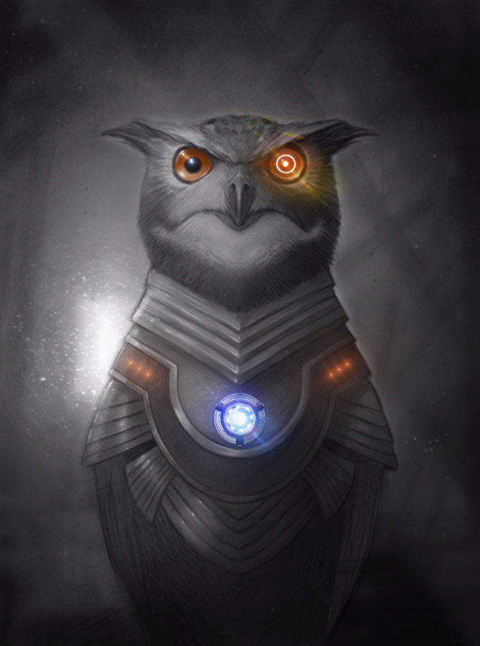
Raw divine power roils the air of Dimm City and Proxy are gifted its might. They can twist the weak minded with words alone or crush an enemy with a faith-infused maul of flaming death. Their friends are protected by immaculate wards, their enemies are smote with exalted wrath.
Proxy characters should be chosen when you want to play a front-line leader that can heal and bolster allies using their abilities and also has social influence outside of combat as well. Proxies are paladins of various gods, followers of esoteric orders, lone wolves following their own code of justice and order, AI worshiping cultist assassins, or self-styled judges, juries, and executioners patrolling the community.
If you want to start quickly, choose the Lay on Hands, Avow, Second Guess, Avenging Armament, Inspire, and Shield abilities.
Spec Tweak: Unyielding Faith
Your belief in your cause strengthens you in the face of adversity. When you ROLL A DIE! to resist fear and mind control effects, you <ins>always</ins> make the roll with Lucidity. Your faith grounds you firmly in your purpose even in situations where others might crumble.
Faith Healing
If there is life, there is hope. I'm here to keep you alive for a bit longer.
- Lay on Hands
- Battlefield Prayer
- Healing Chant
- Purging Orison
- Invigorating Litany
Lay on Hands
Some ailments are hard to cure, but anyone can be healed.
- 1 AP You hold a willing creature in your hands and heal their wounds. ROLL A DIE!
- 2 AP You can attempt to heal yourself. ROLL A DIE!
| Roll |
Result |
| 20 |
Completely heal the target, restoring them to maximum hit points |
| 16 to 19 |
Heal 5 hit points worth of the target's wounds |
| 11 to 15 |
Heal 3 hit points worth of the target's wounds |
| 6 to 10 |
Heal 2 hit points but the experience is not pleasant (you or the DM can elaborate on this) |
| 2 to 5 |
Your faith forsakes you and your charge. Nothing Happens. You must pray harder! |
| 1 |
You fail to heal the target and look weak in your faith in front of believers or like a scam artist in the midst of those outside your tradition |
Battlefield Prayer
Enter Hell, Create Heaven!
- 2 AP You call to your power to heal yourself and your allies. You and all nearby allies are instantly healed for 2 hit points of damage.
Healing Chant
LAAAAAAAM! VAAAAAM! RAAAAAAAAAM! YAAAAAAAAAAAM! KSHAAAAAAM! OMMMMMMMMMMMMM!
- 4 AP You rhythmically repeat a call to your power, healing 1 HP to allies nearby at the end of each of your turns until the end of the encounter. You may not use any other abilities while this one is in effect.
Purging Orison
PLEASE HEAR MY CALL!!! Create in me a clean heart and renew a steadfast spirit within me! Hear my heart, identify the uncleanliness that is within me and could destroy me. Protect and cleanse me from these poisons and help guide me to a life of abundance and peace. KNOW ME AS YOUR SERVANT!
- 5 AP With an intense and focused prayer to your power, you purge any harmful effect from your own body or another creature in reach of you along with healing 5 HP.
Invigorating Litany
Knit the bones, stich the skin, right the mind, and stand again!
- 4 AP Using a repetitive, yet intricate ritual, you totally heal yourself or another creature's body of all damage and negate any harmful status effects.
Invocation
The power of words is known by few. Those that understand can speak their dreams into reality.
- Avow
- Petition
- Invoke
- Vow
- Manifest
Avow
Jumpin DimmCitz in the clear? Cute. Let’s paint the mist with your blood!
- 0 AP Once per scene, you may assert a reason for intervening in a matter, steeling your resolve. The reason should be based on your ideal and the scene's context. For example, if you believe in order, you might confront a swipe gang when you see them at work. Or, if you believe in generosity, you might drop some cred on them so they take a brake and spare society for a byte.
Choose one result:
- You immediately make a successful basic attack on a nearby creature.
- You compel an NPC to explain what they are doing (they may lie to you).
- You convince commoners to leave.
- There may be other things you can do...If you have an idea, consult your DM.
Petition
Death Brother in your name I call for my life's blood to be restored for you are too wise to leave my call unanswered and my task is too important to be ignored.
- 2 AP. When you regroup, you may close your eyes and calm your body. You recite a short petition and receive a boon.
You must recite a petition at the table that contains all of these parts:
- An address line, like "in the name of the gods" or "for the love of wisdom."
- A request, like "I ask for strength."
- An adulation, like "for I am your humble servant" or "for you are the truth."
When you are finished reciting the petition, all of your hit points are restored.
Invoke
Leavin this meatbag behind is the best experience most fear even to try.
- 3 AP. You leave your worldly body behind and create an astral projection of yourself. You must be in a quiet place with no other creatures around to begin the ritual.
While in this trance, you can only vaguely sense if there is danger around your mortal body. You may exit the trance at any time.
Your mind enters a liminal plane of existence on the border of the Backplane and the Infinitum. You experience this place however you envision it to be; it might be a lush paradise in a nebula, an idyllic homestead, or a temple in the fires of creation (this is your chance to create).
If you have an allegiance to a deity, you meet with their avatar. If you hold no allegiance to a deity or if your deity is merely a figment of your character's imagination, you meet with an avatar of supernatural wisdom.
Set a timer. You may speak to the avatar for 1 minute about anything you like. If you ask any of these or similar questions, the Guide will give you a truthful answer:
- Am I on the right path to (fill in the blank)?
- Is (fill in the blank) who they say they are?
- Am I living up to my ideal?
- Have my actions unknowingly caused anyone harm?
- How can I redeem myself?
Vow
With a heart afire, I pledge eternal allegiance to the luminous ideal of Freedom. I assert to relentlessly dismantle the chains of oppression, shelter the vulnerable, and heal the scars of my past transgressions. No turning back; this oath binds me to the unwavering pursuit of liberation from the dystopian grip I once helped enforce.
You create a vow that permanently binds you in service of an ideal. You may only do this once. There is no turning back.
You can express this bond as devotion to a deity, a people, a cause, or something else that represents or is served by your ideal. (you may use an ideal you chose when creating a character, or choose a new one.) You must be in a safe and quiet place to make the vow, and it must include:
- Something you promise to actively do in service of your ideal, like helping the sick.
- A person, place, or group you promise to protect when nearby.
- A wrong from your past that you pledge to make amends for someday.
Once the vow is created, you receive these ongoing benefits:
- You can now use your Invoke ability once per game session for no AP cost.
- The healing effect of your Petition ability now affects nearby party members in addition to you.
- Your eyes now have a faint glow.
You have a sacred obligation to fulfill the promises you have made. Each time you betray the promises of your vow in a serious way, you feel a sharp pain in your heart, and your maximum HP decreases by 1. You cannot be reduced below 5 maximum HP from this effect.
Manifest
I do not beg. I do not grovel. I speak—and the world moves.
- 5 AP. Once per game session you can speak a Word of Manifestation aloud. This word is not symbolic. It is power incarnate, a sonic fracture in the monoverse’s causal chain. When you Manifest, you name a change that must occur immediately and visibly within your current scene. The DM must approve the effect, but you may:
- Create or remove a large physical structure (e.g., a bridge forms over a chasm, a steel wall erupts from the ground, or a sinkhole swallows enemies).
- Alter the flow of time in a small area (e.g., traffic halts in a still bubble, an explosion slows to a crawl, or a sniper’s bullet stops midair).
- Break or restore a major system (e.g., shut down security grid, call every nearby elevator at once, reactivate a dead energy grid).
- Summon a divine or symbolic omen tied to your Vow or Ideal.
Limits:
- You may only Manifest once per session.
- The change lasts for the duration of the scene unless otherwise stated by the DM.
- The effect cannot directly kill a creature, but may place them in mortal danger.
- The Manifestation must reflect your Ideal in tone or consequence.
Inquiries
There is so much more to this reality. If you could only see what I see...
- Second Guess
- Soul Gaze
- Impression
- All-Seeing Eye
- Mirror Scry
Second Guess (SALES TACTIC)
You blink—and your eyes flash not with light, but with possibility. Multiple outcomes flicker across your gaze like lightning caught in glass. You've already seen how this ends.
- 1 AP. Once per turn, when a visible creature makes a roll that determines an uncertain outcome (attack, check, etc.), you may force them to reroll. They must accept the second result, even if it’s worse.
- If the roll is Lucid, they may choose either result—but not both.
- If the roll is Surreal, they must reroll the higher of the two dice.
You may use this on yourself, an ally, or an enemy. This is not an action—it’s intuition given form, a moment of forked fate flickering in your mind’s eye.
Soul Gaze
Look into my eyes and show me your soul.
- 1 AP. Your eyes turn black, like shimmering gateways to eternity, as you peer into the eyes of a nearby creature. They become momentarily transfixed on your gaze.
ROLL THE DIE!
| Roll |
Result |
| 20 |
you learn the creature's ideal and flaw and he worst/best thing they have ever done. |
| 11 to 19 |
You learn the creature's ideal and flaw. |
| 6 to 10 |
You learn their ideal and flaw, but one is false. |
| 1 to 5 |
They resist your invasion and briefly glimpse your recent thoughts. |
Impression
With a brisk but gentle touch, you bridge the gap between your two souls, gaining an intimate understanding of a creature's yearnings and fears.
- 1 AP. You brush against a creature for a fleeting moment, feeling its desires. The DM chooses and reveals to you something specific that the creature routinely craves. You become cursed to also crave that thing and cannot use Impression again until you fulfill the desire. When you fulfill it once, the curse is lifted.
All-Seeing Eye
In a moment of serene focus, the veil of reality lifts, granting you a glimpse into the hearts of all beings surrounding you.
- 2 AP. You pause, closing your eyes and quieting your mind. The physical world falls away and you can see all sentient beings within a 50 meter radius omnidirectional sphere. Focusing in on one creature for a round, you can discern whether it is a target you could best in combat, an even match, or something to fear.
Mirror Scry
Gaze into the mirror at your own risk, walk in it at your soul's peril.
- 3 AP. You seek the location of a specific creature or object by projecting your consciousness into The Mirror. You must know what your target looks like.
ROLL THE DIE!
- If you roll a 20, you glimpse the target in real time and can see its nearby surroundings. If it is a creature, you may speak to them for 1 minute. They cannot see you, but they hear you in their mind. If you touch them, they feel a faint sensation, as if a breeze passes through them.
- On 11 to 19, you glimpse the target in real time, can see its surroundings, and may watch it for the next minute.
- On 6 to 10, you briefly glimpse the target and can see its surroundings.
- On 2 to 5, you walk The Mirror for a byte, getting lost in a maze of backrooms and crawlspaces.
- On a 1, you are lost in The Mirror. Your wandering catches the attention of something terrible (the DM will choose the horror you attract).
Verdicts
Unleash the power of influence and redemption—inspire hearts, compel truth, offer forgiveness, and liberate souls from the shackles of imperfection.
- Inspire
- Compel Truth
- Condemn
- Forgive
- Liberate
Inspire
You're not hardcore, unless you live hardcore. You sir....ARE HARDCORE!!!
- 1 AP. You inspire a nearby NPC by reciting a meaningful statement to them. You may invent a famous quote or proverb, or borrow one from the real world. The creature must be able to hear and understand you, and cannot currently be hostile toward you.
For a shortwhile, the NPC shapes their behavior around their ideal, and cannot fall victim to any personal flaws.
Compel Truth
LOOK ME IN THE EYES AND SAY THAT AGAIN!
- 1 AP. Your eyes glow like blue flames as you look into the eyes of a nearby creature and grip their mind.
ROLL THE DIE!
- If you roll a 20, the target is compelled to answer all questions truthfully for the next 5 minutes.
- You may set a real timer.
- On 11 to 19, the target is compelled to answer three questions truthfully.
- On 6 to 10, the target is compelled to answer one question truthfully.
- On 2 to 5, the target resists your invasion and senses you tried to manipulate them.
- On a 1, the ability backfires. The target may compel you to answer a question truthfully instead.
Condemn
You speak—not with anger, but with thunderous certainty. The words cut deeper than blades, and all who hear them feel the weight of your judgment crash down like a collapsing verdict.
- 2 AP You deliver a verbal condemnation to a group of NPCs/minions within earshot. Choose a flaw, injustice, or betrayal relevant to the situation. You must call it out aloud in your own words—something specific and damning.
All nearby targets (all commoners and one minion/up to three minions no commoners) who can hear and understand you are stunned in shame, guilt, or awe. They cannot move, act, or speak until:
- Or you spend an action on something other than continuing to verbally condemn the targets.
This effect reflects the authority of your conviction, not mere volume or intimidation.
Bosses are unaffected, but may still react with discomfort, defensiveness, or uncertainty.
Forgive
All in the art of living lies in a fine mingling of letting go of regret and holding on to your virtues.
3 AP The Weight is Lifted: Place your hand on a creature and speak words of forgiveness in the form of a Petition. If the creature carries guilt, regret, or hatred, it is lifted from them for a time:
- Fodder and Operators: become awestruck, treat you as a prophet, and will not willingly harm you.
- Masters: They hesitate and withhold their attacks against you until your next meeting — or until you strike them first. A master can only be affected by this ability once in their lifetime.
1 AP Weakness is not Failure: You may place your hand on an ally to remove dazed, fear, or mind-control effects and this ability also grants them advantage on their next saving throw against such effects until the end of the encounter.
Liberate
Your touch and a resolute word unshackle inner demons and tear away the barriers of guilt and restraint.
You place your hand on a creature and channel the full weight of your devotion. Speaking a word of power, you sense and name the flaw, compulsion, or burden that weighs upon them, and free them from its influence.
This act may:
-
4 AP Absolution: Cure a lifelong vice, break a magical domination, end a curse or obsession, or dispel an emotional condition such as constant fear or uncontrollable rage on a target in reach.
This also invokes all the effects of your Forgive ability, washing away any guilt for having succumbed to their flaw or burden in the past.
-
2 AP Shattered Shackles: Instantly end any physical restraint or confinement: ropes, shackles, nets, grapples, magical bonds, or immobilizing effects. On yourself or a nearby ally, the target may immediately stand and move freely. If cast on an enemy, their grapple or hold on another creature or item is broken and another is impossible on the same target until the end of their next turn.
-
2 AP Unchained: If this version is used on a willing ally, their spirit surges with freedom, granting them one immediate action on your turn. This does not expend their action on their next turn and can only be used once per target per encounter.
Wrath
My power's ire is my fury. REMEMBER THIS!!!
- Avenging Armament
- Thunderous Word
- Lawbringer
- Smite
- Divine Vindicator
Avenging Armament
Force of waves to my hammer and may they crash into my enemies!
Choose a phrase to use for this spell.
- 1 AP You speak the phrase of power, infusing your melee or ranged weapon with a magical energy of your choice, whether it be fire, lightning, radiance, or any other desired effect. While the weapon is charged, it can also emit bright light nearby and dim light within its range (if you wish). The energy boosts the weapon's damage by 1 point (applies to ranged weapon ammunition as well). This energy remains active until you roll a failure or worse on an attack with the weapon, or you can dismiss it at will.
Thunderous Word
One word fer ya: BOOOOOOOOOOOOOOM!!!!!
Choose a word to use for this spell.
- 2 AP You utter a word of power, unleashing a thunderous shockwave in the direction you face. Up to three creatures in range are struck by the blast, each taking 2 sonic damage and being hurled backward.
Each affected creature must ROLL A DIE! On a result of 10 or less, they are knocked prone, deafened, and dazed (unable to use special abilities) until the end of their next turn.
Lawbringer
Channeling your higher power, you summon a divine weapon that crackles with fury, capable of focusing thunderous might into a triumphant blow.
- 3 AP You raise your hand to the sky and summon a spectral melee weapon into your grip. The weapon can be any one-handed weapon and it deals 3 damage. It appears to crackle with a blue-green light (or whatever flavor effect you wish it to have) and leaves a deep, reverberating sound in its wake (or whatever auditory flavor effect you wish it to have).
If you roll a triumph when using the weapon, it releases a crackling boom (or whatever flavor effect you wish it to have) and casts your Thunderous Word spell on the target. The weapon vanishes in smoke (or whatever flavor effect you wish it to have) after the combat encounter is ended or if you dismiss it earlier.
Smite
I will take vengeance for your unrepentant sins! BURN!!!!!!
- 5 AP Speak a word or phrase, condemning a nearby creature that you can see. You engulf the target in radiant flame (or whatever visual effect you wish it to have), hitting it for 10 HP. If the damage dealt is enough to kill the creature, it explodes into ash, and its body and spirit are permanently obliterated.
If you destroy a creature with Smite, roll the die:
- On 2 to 20, nothing happens.
- On a 1, the creature's spirit becomes a dark passenger in your mind. You never know when it may decide to speak to you or observe your behavior.
Divine Vindicator
I’m the vessel, this is the voice. The divine don’t whisper—it rends reality!
- 6 AP You recite a magical statement about your ideal while holding a weapon, imbuing it with incredible power.
The weapon gains the following benefits until you rest:
- It now glows faintly at all times and glows brighter when enemies are nearby.
- When holding the weapon, you may cast Avenging Armament on it at will for no AP cost.
- When you roll a 20 when making an attack with the weapon, it casts the Smite spell on your target.
You can only cast Divine Vindicator on one weapon at a time; casting it again cancels the previous enchantment.
Wards
If a god can't protect you, even in the slightest way, what good are they?
- Shield
- Sigil
- Rebuking Soul
- Death Can Wait
- Halo Override
Shield
Swift as thought, a shimmering shield of radiant energy forms a protective cocoon that wards off all but the strongest of blows.
- 1 AP When you or a nearby ally are attacked, you can instantly summon a magical shield that appears as an aura of soft light around your body (or whatever description you like for the effect). The shield blocks up to 3 hit points of damage (any damage dealt in excess of 3 HP passes through the shield and hits). The shield stays protecting the original principal until the end of the encounter or until it takes 3 or more damage in a single hit. Using this ability does not count as an action.
Sigil
From out of thin air, you're surprised to hear a message from your ally in your mind, put there by their divine rune marked on the doorframe.
- 2 AP You draw a magic sigil on an object. The spell lasts until you cancel it or cast Sigil again. You can only cast the spell if no enemies are currently nearby.
Choose a specific creature for the sigil to affect, or a type of creature, like spirits or werewolves. Then draw a circle on a piece of paper at the table. Draw the creature that will be affected by the spell inside of the circle. Alternatively, instead of drawing something, you may describe the specific creature through its sounds, smells, and/or behavior.
Choose one of four effects for the spell:
- Lure The sigil attracts creatures to its location, where they linger for a minute.
- Repel Creatures who come nearby won't move closer to the sigil or may turn back.
- Alert Receive a signal in your mind when creatures pass by the sigil.
- Message The sigil telepathically sends a short message of up to 10 words in your language to creatures passing nearby.
If you used a drawing, you may keep your drawing and reuse it later when casting this spell again, and you can choose a new effect each time.
Rebuking Soul
You split at the seams, spirit-first, a nightmare unchained. The ops don’t run. They flee!
- 1 AP When a creature that isn’t yet in reach of you moves toward you during its turn, you can lash out with a righteous word—laced with divine voltage.
A spectral clone of you erupts forth, rushing the target with holy wrath. It slams them back several meters into a nearby area, deals 1 damage, ends their turn, and prevents them from approaching you again until their next turn ends as your spectral doppelganger continues to harass its target.
This ability costs no action and can be used once per round, but only when an enemy approaches.
Death Can Wait
Death is oft forever, but if you reach the departed quick enough it must return for them another day.
- 3 AP You place both hands on a creature, uttering a loving word or phrase. The creature instantly recovers 6 hit points and wakes up if they are unconscious. Or you may choose to cast this spell with no AP cost by transferring your own hit points to the creature. The creature recovers as many hit points as you are willing to give up.
- 5 AP Any creature that has died within the last five rounds of combat can be resurrected with this power and healed fully to maximum hit points.
Halo Override
When all else fails, you don’t pray. You become the prayer.
- 5 AP For the rest of the encounter, you are surrounded by a burning halo of divine force (or any other visual manifestation you describe).
- All allies nearby recover +1 HP at the start of their turns.
- You cannot be forced to move.
- Any creature that deals damage to you takes 1 radiant damage in return.
If you fall unconscious while this is active, the halo bursts, healing all allies in range for 4 HP.
Streetwarden
The shadowy urban sprawl may look like a concrete jungle, but its sentient population is far outnumbered by the insects, animals, fungi, protista, and monera that exist in Dimm City. For all the extremes present, there is a balance to be struck and the streetwarden is always on the lookout for a den of loberats to cull or a pack of wild dogs that has grown too troublesome and needs trapped and dispersed. Streetwardens exist in Dimm City without a need for the city life itself.
They live in places others have forgotten: abandoned buildings, cobwebbed crawlspaces, forgotten data centers, and blocked-off sewers. From these decrepit refuges, the streetwardens hunt, fish, and forage — eking out their days while safeguarding the fragile balance of life in the conurbation.
If you’re drawn to a character who thrives on survival, stewardship, and grit, the streetwarden is for you.
If you want to start quickly, choose the Quick Fix, Trail, Longshot, Speak with Animal, Two Hands- Two Strikes, and Trapping the Liger abilities.
Spec Tweak: Mistrunner
You move through the city like the mist itself — vanishing into fog, steam, and smog at will. When you move with intent, you become difficult to track through urban cover; anyone trying to follow you must roll Surreal when required to do so. You also instinctively know the quickest hidden routes — through vents, over rooftops, and along maintenance tunnels — to reach your destination unnoticed.
Story and Song
In the realm of tales and melodies, you weave your poetic threads through the vibrant streets and hushed alleys.
- Soothe the Savage
- Code Switch
- Beat of the Block
- Warden G
- Urban Legend
Soothe the Savage
Amidst the chaos of claws and fangs, your harmonious melody tempers the beast's wrath.
- 0 AP When confronted with a hostile animal or beast that is threatening (not attacking) you and your allies, you can whistle or hum a quick tune at the table (or describe the tune). The beast will ignore you and your crew as long as no one attacks or provokes it.
Code Switch
Skulking inta da The Prowler’s Den, I hissed its creed — “When the Neon Fades, Truths Illuminate.” With a nod an sum simplespeak, I wuz just anudder shadow in da smoke.
- 1 AP You slip into a local dialect, slang, or cultural code to blend in and manipulate the flow of conversation with a nearby fodder or operators. Exchange a homegrown saying at the table—real or invented—and explain what it means.
You immediately gain one of the following benefits:
- They treat you as part of their crew or community, granting you Lucidity on Persuasion or Deception rolls during this interaction.
- They lower their guard and are more open to suggestion or bribery.
- They offer you a small favor, like letting you through a door, hiding you, or watching your back.
You may also ask one of the following, and they’ll answer truthfully and with extra detail:
- Who’s causing trouble lately?
- What’s the word on the street?
- What’s the real story behind (fill in the blank)?
This ability works only on creatures who recognize the dialect or respect the culture you're echoing. If you fumble the lingo or act out of pocket, the effect ends immediately and they might react (DM's call).
Beat of the Block
Drums from trash cans. Rhythm from rails. The city’s heart thumps louder when you play—and when it hears your call, it comes a 'runnin.
- 2 AP You bang out a street-born rhythm on pipes, cans, railings, vents, or whatever’s nearby. At the table, describe or tap out the beat. The rhythm must match the mood of the moment—rallying, panicked, defiant, or mournful.
Choose one effect based on the beat you summon:
Draw the Swarm:
Your rhythm calls forth a mass of razor rats, feral cats, or scissoroach swarms from the nearby alleys. They rush the area, snapping and scattering in a frenzy.
The swarm descends on a single NPC group, dealing 1 damage at the start of their turn for the next 3 rounds, as long as they remain in range or near the spot where they were first affected. While affected, any time they must ROLL A DIE!, they roll Surreal instead (No AP or actions are required to maintain). This damage cannot be resisted by mundane means (DM’s call).
Affected fodder always flees the scene.
Call the Crew: You’re calling in backup—a couple of gutterpunks, vibekids, or graffiti saints who know your rhythm.
At the start of your next round, 2 allied operator NPCs arrive to assist.
They act on your turn, have 4 HP each, and will fight, create a distraction, or help a downed ally escape (DM's call on stats and gear).
They vanish or retreat after 3 rounds or if damaged.
Urban Echo: You use the beat to send a coded message through echoing corridors or across rooftops.
An ally hears your message regardless of barriers, even through walls or over noise.
You may pass a short message, warn of danger, or signal an ambush.
Crowd Control: The beat draws attention and warps the moment—crowds form, enemies get distracted, and tension builds.
Hostile minions or commoners pause on their next turn if unhurt before it begins.
Allies in range gain cover or concealment from the sudden chaos, allowing them to slip away or through the scene unnoticed.
Warden G
Neon lights paint the scene, I spit rhymes, make it gleam. Hearts ignite, vibes take flight, in this rhythm, we unite to fight! Fight! FIGHT!!!
- 2 AP You perform a song, rap, or spoken word bit that nearby NPCs vibe with. (This performance has no effect on hostile creatures dat ya need to regulate.)
Read, rap, or sing the chorus of a song at the table and describe your performance. You may write your own or use one from another performer.
Choose a mood to set for your audience:
- Bright Hearts swell with friendly enthusiasm, sparking joyful conversations.
- Somber The audience falls silent and begins a sorrowful reflection on their suffering.
- Proud Zealous feelings are ignited, making the crowd noisy and excitable.
- Shock Your message hits a nerve with the audience forcing a pall to fall over the slack-jawed assemblage.
- Anxious The performance illustrates a clear injustice or cruelty that the group has suffered, moving them to be noticeably irritated.
Urban Legend
Whispers of a sinister tale slither forth, weaving a chilling yarn with an eerie obligation, a grim lesson, a spectral subject, and a haunting story that leaves shivers crawling down spines.
- 3 AP You appeal to a creepy local folk tale to gain the favor of a commoner. You create the myth using four parts: an obligation, a lesson, a subject, and a story.
Part 1: Obligation. Decide how the tale affects your target.
Choose one:
- They offer you and your allies food, shelter, and secrecy in their home.
- They offer you the best reasonable trade on an item they are selling.
- They go on a small mission, like fetching an item or delivering a message.
- They admit to a recent wrongdoing.
- They forgive you for a transgression.
- They spread a rumor you create.
- An obligation of your choice, as long as it does not harm them.
Part 2: Lesson. Using the obligation, say what the lesson of the story is, like "Refuge from the streets shows your manner's concrete" or "A fair dealer is a wealthy dealer."
Part 3: Subject. Name a central person or event.
Part 4: Story. Describe a dramatic situation the person or event is famous for. Perhaps they were a missionary who fed the hungry or it was a great flood that killed many.
Share the myth with the other Dreamers and the DM at the table. You may reuse a story you have created without describing it in full.
Survivalist
The more you know the less you carry.
- Gut Sense
- Quick Fix
- Stealth Camp Shroud
- Streetwarden's Signal
- Vision Quest
Gut Sense
The alley stinks wrong. The silence is too wide. Something’s gonna drop.
- 0 AP When entering a new space—building, block, train car, street—you may ask the Guide one of the following:
- “Where would I hide if I were them?”
You get a single true insight about the space. The Guide may phrase it as a feeling, a memory, a faint clue, or a cryptic vision—but it’s real. You may only use this ability once per scene or encounter.
Quick Fix
Nature's swift antidote or sumthin over-the-counter, dispels ailments and neutralizes poison alike. (CHANGE THIS)
- 1 AP You spend a tick or so scavenging in your immediate area—city block, alley, rooftop garden, sewer greenbelt, or urban overgrowth. If conditions are safe and there’s at least some organic or salvageable material (DM's call), choose one of the following outcomes:
- Street Rations: Enough food and clean water to keep your party going for the day.
- Crafty Bits: Materials to craft a basic item (sling, cord, poultice, firestarter, brewtube, etc.).
- Healing Herb (CHANGE): A dose of natural or chemical medicine that restores 1 HP when consumed or applied.
- Antidote/Remedy: A treatment that cures temporary illness or negates poison.
- Junk Oddity: A curious, minor object of value (DM’s choice) that might trade well, distract a target, or be the missing piece for a rigged-up tool.
You may use Quick Fix once per location per cycle. If the area’s already been stripped or scorched, the ability fails.
Stealth Camp Shroud
Wildlife weaves concealment, guarding campfire glow, granting rest 'midst nature's shadow.
- 2 AP By sharing some nutrients or water with the nearby flora and fauna, you entreat them to provide the party with protection while camping in the urban jungle or wilderness (If there are no plants nearby, you can do a bit of gardening on the fly). Shrubs and thorny vines will emerge around your selected campsite to provide concealment. The shroud lasts until you decide to break camp to go elsewhere.
The shroud conceals the light from a small campfire or lantern. If hostile creatures advance on the enshrouded campsite, the surrounding wildlife and plant life will provide 5 minutes of early warning. Creatures can pass through the shroud if they know its true nature, but they are hit for 1 HP if they push or try to bushwack their way through.
When you regroup inside of the Shroud, your party gains the benefit of a rest.
Streetwarden's Signal
Neon sigils blaze, allies from the sprawl assigned; street's echo answered, fate's design entwined.
- 3 AP When things get hectic, you create a distress signal will be seen by other Streetwardens. Describe how you send your signal: it can be a smoke signal, a message you leave scrawled on a wall, or a similar communicative act.
Within the next day, you will meet an NPC Streetwarden who comes to your aid. Out of respect for you as a colleague, they will stay with you until they finish helping you with a request. Your request cannot be unlimited, and they will not stay with you forever.
The NPC Ranger has 10 hit points and comes with equipment of the DM's choice. You can ask them to do things, but they are an independent character who will ultimately act according to their own interests and ideals.
Vision Quest
When a very great vision is needed, the man who has it must follow it as the phoenix seeks the deepest expanse of the sky.
- 4 AP You scavenge your area for a short to find a single dose of a "magic edible". (There must be plants or people in the area who are holding.)
When you ingest the edible and it takes full effect, you embark on an inner journey over the next hour for supernatural insight. You may learn the truth about one of the following things:
- The safest or fastest way to get somewhere.
- A place where your Nemesis visited within the past day.
- Whether you are in a real place or if your reality is some kind of deception.
- Whether an ally is keeping a secret from you. (You learn who they are, but not what the secret is.)
If a Proxy invites you along when using their Invoke ability, you may use Ritual to join them on their journey to their special realm on the border of the Infinitum. The same rules of the Invoke ability apply to you when joining the Invoker.
While on your quest, you are somewhere else mentally, but your physical body remains in your usual reality. If you have no trip sitter, things could get interesting (how interesting is up to the DM).
Pathfinder
Urban mystic, master of the unseen, communing with sky, streets, and underground scene.
- Read the Air
- Navigate
- Hallow Step
- Delve
- Botanic Sentinel
Read the Air
As you listen to nature's whispers, prescience of the sky's secrets reveal tomorrow's weather.
- 0 AP You concentrate on the language of the weather, sensing patterns in your substantiality. You are able to glimpse a weather forecast for the next few days.
- 2 AP If you spend 2 AP on this ability, you may choose the weather that you foresee in your region over the next few days, as long as it is seasonally appropriate. You might choose light rain, a wind storm, heavy fog, a heat wave, or any other weather pattern, except for natural disasters like tornadoes or hurricanes.
Navigate
In tune with the land, you are an unerring guide through nature's labyrinth and to its hidden secrets.
- 0 AP You feel the land in your bones. You cannot get lost unless some foul magic or technology is inhibiting you.
- 1 AP You navigate your party to one of these areas: an oasis, a shelter, ruins, or a nest.
- Oasis: You find a reprieve that has a small amount of nourishment.
- Shelter: You find a natural cave that offers shelter from harsh weather.
- Ruins: You find minor ruins, like an abandoned keep or a withered statue.
- Nest: You find the home of an animal or group of animals, like a bird's nest or a snake's den.
Hallow Step
Your steps carry weight only when you want them to. Sometimes the city forgets you even passed through.
- 2 AP You move through an urban or wild environment without leaving a trace. For the next hour:
- You and a number of allies up to half your total number of known abilities (rounded down) leave no tracks, scent, or trail.
- Surveillance and sensors do not register your movement or presence.
- Animals and street-dwelling creatures treat you as non-threatening or unseen.
Breaking cover (e.g. shouting or attacking) ends the effect.
Delve
There's nothing more sobering than having the whole world on top of you. Knowing what's ahead is an edge that is life or death.
- 2 AP You emit a sharp sound that travels through a nearby underground structure—be it a natural cave, sewer, bunker, or tunnel complex. This could be a whistle, a sharp clap, a gutteral hum, or an animal call.
The reverberations paint a picture in your mind. You sense the general layout of the next three connected areas, including how they’re linked. The Guide will sketch you a rudimentary map with key physical features—bridges, columns, pits, dead ends, tunnels, and other notable terrain.
While navigating these mapped areas, rolls related to spatial awareness or traversal may be made Lucid (DM’s call) because of the Streetwarden's insight into their layout.
Examples include:
- Sensing unstable ground or thin walls
- Detecting shifts in pressure or airflow
- Avoiding a fall while climbing across a chasm or unstable surface
- Navigating in complete darkness
- Identifying which tunnel leads to echoing voices or fresh air
This ability doesn’t detect traps, enemies, or magic—but it can tell you where your boots won’t get chewed off.
Botanic Sentinel
You touch a plant, mushroom or even the earth itself; mentally connecting yourself to the local biome.
- 2 AP You ask the local botanicals to search the area. For example, you may ask to locate a specific creature, an object laying somewhere, or a location, like a cave or building. Your connection with the biome allows a mental image of where what you are seeking is, how to get there, and how long it will take for you to find it.
- 2 AP You ask the plant life to watch over the party. Until you leave the area, the plants will rustle and fungi will light up (or even make noise) if you approach a trap or a dangerous creature. The warnings will increase in intensity as you draw nearer to danger.
Street Stalker
When you prowl the streets, other predators take heed.
- Trail
- Longshot
- Deadeye
- Stalker Party
- Nemesis
Trail
Amidst the city's hum, you are in tune with every whispering footstep and elusive trace that catches your ultrakeen eye.
When you find signs of other living things passing through your part of the sprawl, you may get curious and follow to see who's about. This ability is keyed into an urban environment, but works just as well out in the sticks and mud.
-
0 AP When you find tracks, you can instantly identify the type of creature that left them. If it is an animal, the DM will share a fact that you know about them, like their habits or personality traits. If it is a sentient being, you can tell their height, weight, and sometimes if they are injured or not (DM's call).
-
1 AP You can pick up on the trail of an animal of your choice even if there are no tracks nearby, as long as it is native to the environment you're currently in. You must choose a type of animal to find, like a rat or a centipede. (You can't use this to find a specific creature.) You find the creature after a short search.
-
2 AP If you know the general whereabouts of a sentient quarry, you can track them down with a combination of information gathering and observation. Tracking down a mark like this can take a long byte, but the legwork almost always pays off.
ROLL A DIE!
- 20 the target is easy to find and you walk right up to their door.
- 11-19 the target is a bit more elusive and you may have to stake out a few places and drop some creds to bribe some peeps to finally make contact.
- 6-10 the target is really hard to find. You exhaust yourself pounding the pavement but finally spot them after dropping a bit more cash than you wanted and doing a bit too much legwork.
- 2-5 the target gets wind of you trying to track them down. Try again sucker!
- 1 the target or someone working for them gets the jump on you. It's up to the DM to tell you what happens next...
For maximum tension, have the DM roll this in secret. The result should ripple into the story naturally, without tipping the dreamer off until the consequences come a knockin.
Longshot
Some marksmen's skill surpasses what should be possible.
You have trained daily to achieve superb ability with your chosen ranged weapon and can reach out and touch enemies that should be impossible to hit.
- 1 AP You briefly sharpen your senses, surpassing your normal limits. You can make a ranged attack on a target that you can see that is too far, even if it is normally out of range.
- 2 AP If you spend a round aiming and then attack on your next round, you can make a ranged attack on a target that's too far that you can see. Roll with Lucidity (use two dice and apply the highest roll to the attack).
Deadeye
You take great pride in your accuracy and precision. Some might say you even enjoy the effects of your skills a little too much.
- 0 AP Whenever you roll a 20 with a ranged weapon, you can name a specific limb on a creature to hit with your projectile. The limb becomes disabled and cannot be used until it is restored by a healer.
- 3 AP You take aim and focus your senses, automatically scoring a triumph with a ranged weapon on a nearby creature or object that you target. The hit disables a specific limb of your choice.
Stalker Party
You are a ghost on your own, but it's hard to keep a group quiet. It may be challenging, but you do a good job teaching and doing damage control on the fly while running down your mark.
- 0 AP You and your party can carefully stalk a creature you have eyes on without it noticing you, as long as you try to be low key. Describe the formation of you and/or your party as you trail the mark.
- 2 AP When you discover the creature or creatures you were tracking, you can ambush them, even if they were preparing to ambush you. Your party takes the first round, and you get an extra turn.
Nemesis
I'm the best there is at what I do and you don't even come close skanky!
- 4 AP Choose a specific creature you have met before. You mark them as your nemesis. You may only have one nemesis at a time, and you may freely remove the mark at any time.
Your predatory senses allow you to detect whenever your nemesis is present in your scene, even if they are hidden. You feel a tingle in the temples of your forehead when your nemesis is nearby.
You gain these additional benefits when fighting your nemesis:
- They cannot surprise you by ambush (but may surprise your crew).
- You may use either Longshot ability against them at will for no AP cost.
- When they are nearby, you can sense their location well enough to strike them with physical attacks, even if they are concealed or invisible.
Friend
Every warden can use a friend. Why not one that can shred yr ennies too?
- Speak with Animal
- Beast Friend
- Courier
- Savage Link
- Summon from the Wind
Speak with Animal
Beasts all have their own language, verbal and nonverbal. Once you got it, you get them.
- 1 AP You touch an animal that is not currently hostile toward you, forming a telepathic bond with it for the next minute. You are capable of interpreting the animal's thoughts and feelings, and you can have an exchange of communication with it. It can give basic information about things, like how it feels, what it has seen, and what it wants, but it does not understand complex ideas.
Beast Friend
Sic'em Chopper!
- 4 AP You recruit a nearby animal companion who will follow your orders to the best of its ability. It can't be smaller than a mouse or bigger than a horse. You may only have one partner at a time. The animal is an NPC played by the Dream Master that acts in addition to you during your turn. It won't willingly leave your area, and if you are separated, it will try to find you. It cannot speak to you, but it can vaguely sense your mood and intentions. Your animal partner has 6 HP and can make basic attacks for 2 damage.
Courier
MM's great, but sending a message by grimeweasle has waaaay more style!
- 1 AP You find a friendly animal nearby and whisper to it, giving it instructions to deliver an item. The item must be small and light enough for the animal to reasonably carry. You can have the animal deliver the item to a place or a specific person. The destination must be within a longwhile's travel (6-12 hours).
Savage Link
Through my shadowhawk, I have eyes; through my dust viper, cunning; and my razorrats, the gift of stealth.
- 2 AP You develop a unique telepathic bond with your Beast Friend that lasts until you recruit a new one. You now passively experience your partner's senses; you catch glimpses of what they see, hear, and feel. You also feel a shadow of pain whenever they are harmed. At any time, you may enter a trance to leave your own body and take control of your partner. You remain dimly aware of what's happening around your own body. While in the trance, you may control your partner as if they were yourself, though you cannot speak. You may exit the trance at any time.
Call to the Wild (WHAT HAPPENS TO YOUR MOUNT WHEN YOU DON'T NEED THEM?)
You don’t bark orders—you whisper through rusted vents, sewer mist, or cracked waves. And the wild hears you.
- 4 AP You send a primal signal—through airwaves, tremors, or brine—that scrapes the monoverse like a amped-up SQL query. You must be near open sky, bare soil/rock, or natural water (your choice determines the type of beast). This summons a feral creature native to that element that is big enough to serve as a mount for you:
– From the sky: a winged terror or loyal flyer (hexdrake, mist gryphon, rustwing).
– From the land: a beast that stalks or charges (prowler, mirrored serpent, skrex devil).
– From the water: something slick, scaled, or barely sane (giant strobesquid, bell whale, black-jawed otterkin).
The beast arrives 1 hour later, climbing from manhole, circling from smogclouds, or surfacing from an algae-thick reservoir. It obeys your commands as long as you're not cruel or careless. It can:
- Deliver items or messages
- Scout or cause a diversion
The beast acts on your turn and won’t attack unless it’s attacked first—or unless you’re dying and it decides you’re worth saving.
You don’t tame the wild. You convince it to give a damn.
The Night Hunt
Streetwardens excel in hand to hand combat. Their secret style of fighting is the biggest reason why.
- Two Hands-Two Strikes
- Trapping the Liger
- Steel Shell
- Light of the Senses
- Dance with the Devil in the Pale Moonlight
Two Hands-Two Strikes
You have two hands. Why not use both?
You must have a weapon in each hand to use this ability.
- 0 AP The Night Hunt is a style of fighting popular among Streetwardens in Dimm City proper. The signature of this style is using the same weapon in each hand (preferably), but mismatched armament works just as well. When a Streetwarden proficient in this technique has a weapon in each hand, they can make one extra attack on their turn or out of turn in the same round. This attack only does 1 damage regardless of the weapon used.
Trapping the Liger
Ethereal Ligers are famous for playing with their prey before finishing them.
Prerequisite: You must have a weapon in each hand to use this ability.
- 1 AP If you are attacked, ROLL A DIE! If your die roll beats the opponents, you trap the attacking NPC's weapon and take no damage while they take 1 damage from your technique. This counterattack does not count as an action. You may continue to keep their weapon trapped into your next turn. If you do so, you may only attack once (if using Two Hands-Two Strikes), but do an additional 1 damage with the single attack. The attacker may free their weapon if they roll a 11-20 on their next turn to wrench it free or can just let go of it. You take no damage hit or miss.
- 2 AP A pinned weapon can be broken at any time. In the same motion as the break, you do 2 damage to the opponent. This action releases them from your grip.
Steel Shell
Defense has its place in any battle. This technique grants neigh impenetrable protection.
You must have a weapon in each hand to use this ability.
- 3 AP You go on defense with one of your weapons negating any damage dealt by commoner and minion's hard choice rolls (6-10). This ability stays in effect until the end of the encounter or until you choose to use Two Hands-Two Strikes again. Until then, you can only attack once per round.
- 3 AP Defense becomes your priority with both weapons working in tandem to protect you from your opponent's blades. Any damage dealt by commoner and minion's hard choice rolls (6-10) and successes (11-19) is nullified by this maneuver. This ability stays in effect until the end of the encounter or until you choose to attack again. Until then, you can only move during your turn.
Light of the Senses
The five colors... They all blind the eye. Train your other senses to truly see.
- 0 AP Through strict training, you have attained phenomenally sharp senses of touch, hearing, and smell as to be able to function normally while blind against nearby or closer enemies. You are still at risk from opponents at range but those in reach of you are fair game.
Dance with the Devil
Wait till they get ah load ah meh!
- 5 AP With a pitched battle at hand, you flip a switch and invite the spirit of warriors past into yourself.
This possession gives you the ability to:
- Teleport: This allows you to be in reach of opponents in range in one movement and those too far with no actions left (putting you in reach, but not able to attack on your turn).
- Partial Invulnerability: Your enhanced state also negates any damage dealt by enemy's hard choice rolls (6-10).
- Increased Strength: Each of your attacks deal an additional 1 point of damage (even your secondary Two Hands-Two Strikes attacks).
- Enhanced Senses: The Light of Sound ability extends out to allow you to perceive targets in range.
This ability last for a quickwhile (5-10 minutes) or until the end of the encounter.
Gutterdruid
From a crack in a stone walkway, a patch of razorthistle emerges and is nourished by the local Gutterdruid. 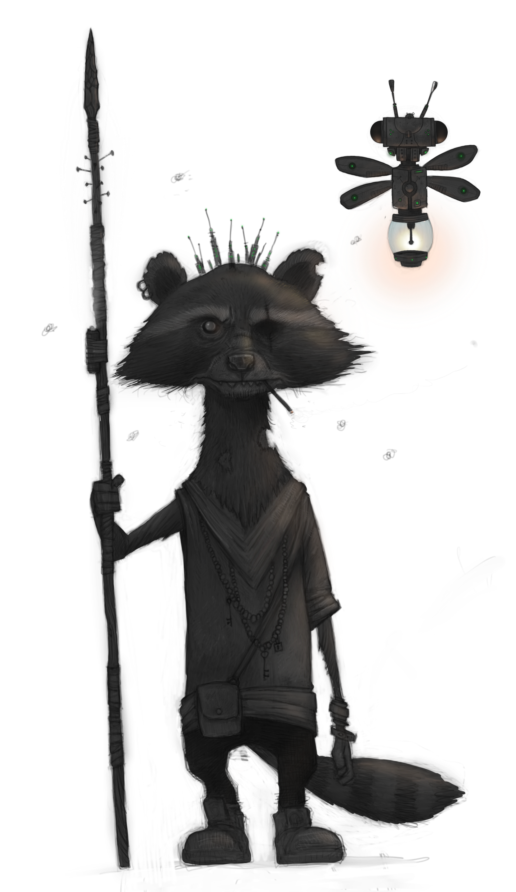 Every living thing in the darkness has a right to the light of life and this order of shamans, mystics, and ecologists use their magic to make sure all things live together in harmony. Even in the unnatural environment of Dimm City, these urban hierophants wield immense power granted from the land itself.
Choose to play a Gutterdruid if you wish to protect and draw power from the streets, sewers, buildings, and the life within the city itself. Within the darkness exists a lifelight more powerful and direct that the world you know.
If you want to start quickly, choose the Animal Form, Vine of Thorns, Freezing Gust, Guerrillas in the Mist, Wild Aspect, and Command Nature abilities.
Spec Tweak: Filth to Flesh
Decay is just another cycle of life. You instinctively know which gutter runoff is drinkable, which spoiled food is still safe, and which filth can be repurposed. Given a byte (2 or so hours) of work, you can scavenge enough to keep a crew of up to five alive—divining drinkable water, reviving spoiled food, foraging mushrooms and plants, or extracting edible nutrients from mold and grime. Once per mission, you can turn waste into a single vital resource——purifying sludge into water, reviving spoiled food, or extracting life-saving medicine from the districts natural bounty (DM's call).
Shapeshifter
All things in nature have a purpose and I can become any of those things.
- Animal Form
- Gills
- Steelsprout / Sproutsteel
- Petrify
- Shapeshift
Rats ain't da sexiest animal to take shape of, but dey are da most mundane an ignored.
- 2 AP You take the form of a wild animal, adopting its shape, senses, and range of motion. You may choose any creature that is no smaller than a mouse and no larger than a horse. Everything you carry becomes part of your animal form.
While in animal form, you have 6 HP. You may make basic attacks that hit for 2 HP. You can't use abilities, items, or speak languages while transformed, but you may communicate nonverbally and through sounds that animal usually makes.
You can return to your normal form whenever you like. When transforming back, you regain the hit points you had before you transformed. Falling to 0 hit points while transformed instantly returns you to your normal form (hopefully with max hit points). Any damage in excess of the animal form's HP before dropping to 0 HP is nullified upon regaining your original form.
Gills
Wanna swim with da fishes?...No, seriously, we can do dat!
- 1 AP You enchant a small amount of water in a container that you are holding. When you spritz the water on a creature, they grow small but visible gills, allowing them to breathe underwater for a byte (an hour or so). This spell enchants enough water to use 6 times.
Steelsprout / Sproutsteel
Ayyye errybuddy!!! Sayge just turned the security gate inta sunflowers!
- 2 AP You extend your hand and close your eyes, permanently turning a nearby metal object into a weave of delicate plants. (The object cannot have magical properties or be larger than a regular door.) Describe the plants that the object turns into.
- 2 AP By first closing your eyes and then extending your hand, you can turn nearby plants to steel (the plants cannot be magical and cannot be more voluminous than 2 cubic meters). Describe the plants that you turn into steel. depending on the plants, this ability can create very hazardous terrain.
Petrify
Who's Medusa? She got nuthin on me!
- 2 AP You turn the surface of a nearby commoner or minion to stone for a quickwhile (5-10 minutes). The target cannot move, see, hear, or speak during this and is in a state of suspended animation while affected (until death or the end of the encounter). The creature has 50 hit points while petrified. If its hit points are reduced to 0 during the spell, it shatters to pieces and dies.
- 2 AP You encase your armor or clothing in a chitinous shell. The shell absorbs up to 10 hit points of damage. If you are hit by a non-magical weapon, it shatters to pieces after dealing damage. The carapace crumbles away immediately after it takes 10 or more cumulative damage, with excess damage beyond 10 being negated by the shell's destruction. You may cast this spell in response to an incoming attack during another creature's turn without spending an action to do so.
Shapeshift
Ever see a urbat rip a bodies throat out? Viddie dis!
- 3 AP This is a master version of your Animal Form spell. The rules are the same, except for these differences:
- You can choose a creature no smaller than a housefly and no larger than an elephant.
- You have 10 HP in animal form.
- Your animal form attacks hit for 3 HP.
- You can send messages telepathically to members of the party you have a direct line of sight to.
- Whenever you revert to your original form, you regain 3 hit points with any excess over your maximum lasting for a byte (an hour or two).
Summoner
Nature is violent and mysterious and I am both as well.
- Vine of Thorns
- Wild Font
- Evening Star
- Aurora
- Echoes of Creation
Vine of Thorns
Needlevine darts from your outstretched hands, simultaneously ensnaring and poisoning your enemy.
- 1 AP You open your palm, conjuring a thorn-covered vine that you shoot directly at a nearby target creature or object. The target takes 2 HP of damage and becomes unable to use a move action.
Roll the die!
If you roll a 20 and hit an organic creature, the thorn's poison is amplified. The target's skin swells, it loses sight beyond its reach, and it can't speak or use abilities until the end of its next turn.
The target can escape if it or an ally makes a successful (11-19) basic attack against the vine, with a Triumph (20) causing the vine to rebound on you for 2 damage.
If the target cannot escape, you can continue to immobilize it for another round by maintaining the ability with an action and dealing an additional 2 damage.
You can maintain the thorny vine until the target escapes or dies.
Wild Font
A touch awakens abundance, turning humble vessels into cascading founts of plenty.
- 1 AP You touch a container holding food, beverage, or oil. For a few tics, the container summons a surplus of its contents, spilling the excess material out generously.
For example, if you touch a pitcher of water, it will overflow and cover the floor. Or if you touch a sack of grain, it will burst open, creating a large pile (the exact amount is the DM's call). It is suggested that you take appropriate measures to contain the excess before initiating this ability.
Evening Star
Using a minor celestial summons you illuminate the land with radiance seldom seen within the mists of the ether.
- 2 AP You summon a wisp of light high in the sky directly above you. (You must be outdoors to cast this spell.) For a byte, the wisp sheds light on a huge area, allowing you to see far in the distance. It matches your movement such that it is always located above you. The area the light touches looks as if it were lit by daylight.
Aurora
With a flourish of magic, the heavens bow to your command, painting a mesmerizing tapestry of light across the sky.
- 5 AP Your eyes glitter like dancing wisps as you conjure a dazzling prismatic aurora above you in the sky. The aurora is visible to creatures up to a kilometer away and lasts for the remainder of the encounter or a short while.
Commoners: Any common folk who can see the aurora are dazzled and stop what they are doing to stare at it.
Minions: Minions are also dazzled by the spell and stop what they are doing to stare at it. Hitting a minion frees them from the spell's effects.
Bosses: The Guide must roll the die. On 2 to 10, bosses are dazzled and must choose between moving and acting during their turn. On a 1, they are stunned in place until the spell ends or if they are hit. On a 11-19, they may act normally. When rolling a Triumph on a natural 20, the boss is unaffected by the ability for the rest of the encounter.
Echoes of Creation
In harmony with ancient whispers, you summon fading cosmic sentinels, weaving life's essence anew.
- 6 AP You hum a reverberating melody, summoning a coterie of magical wisps from the ages of creation. The wisps were powerful beings of light who once roamed the monoverse.
Now, like dying stars, these ethereal remnants are burning the last of their energy. They are no longer sentient, but seem to sense the world around them and the pain some are in.
For a little while, the wisps float about the area, restoring all hit points and completely healing all ailments of every living creature and animating a plethora of radiantly verdant wildflowers and a variety of phosphorescent toadstools.
Every creature in the scene stops what they are doing while the wisps are present and remain still with awe until they fade back into the infinitum.
Elementalist
Everything created from the elements can also be destroyed by the elements.
- Freezing Gust
- Desiccate
- LaserLight
- Thunderbolt
- Fireball
Freezing Gust
Better a blast of winter than summer's boiling blood.
- 0 AP You cast and blast frigid air that swirls around a nearby creature or object. The target will feel a deep chill in their bones and suffer 1 HP of cold damage. You can also use the spell to snuff out small fires.
- 2 AP You freeze a nearby commoner, minion, or object, encasing it in ice until you leave the scene. If you freeze a creature, it cannot move or act. The ice shatters and the creature is freed if it takes any additional damage. Bosses take 3 damage from this attack and must choose between moving or attacking on their next turn (they can't do both).
Desiccate
Their skin cracks like sunbaked concrete, lips split open, and the thirst becomes all-consuming.
-
0 AP Desiccate can be used to instantly evaporate up to 1 liter of liquid in range per ability you possess.
-
1 AP Choose a nearby creature you can see. You unleash a shimmering wave of heat and negative pressure—instantly pulling moisture from their body. The target takes 2 damage and becomes Desiccated.
A Desiccated creature cannot regain HP from any source until they spend a full round rehydrating (this requires access to clean water and at least one action to drink or soak).
Creatures that are already dehydrated (naturally or from this ability), flammable, aquatic/amphibious, or soft-shelled—like slugs—take double damage.
For plants, fungusfolk, or water-dwelling creatures, this effect is often eventually fatal (DM's call).
Laserlight
You wanna be seen in Dimm City? Make it hurt to look.
- 0 AP You channel the ambient light around you, shaping it into an illuminating beam of energy. When this beam is directed at a target within range, the heat generated is sufficient to cause significant discomfort to a creature, but not enough to cause harm. Additionally, the beam destabilizes the target, causing any attacks made against it to be rolled with Lucidity (2d20, keep the highest), and any attacker can use the better of their two rolls until the start of your next turn.
- 1 AP You overcharge the spell and light up the target with radiant energy. The target takes 2 damage and is set ablaze with any attacks made against it rolled with with Lucidity (the better of two rolls) until the end of the target's next turn.
Thunderbolt
Shock and awe is a superior strategy to utilize in battle. Both are part of a thunderbolt!
- 4 AP Choose a target creature or object you can see. A bolt of lightning strikes it from the sky or from your hands, dealing 8 damage and creating a deafening blast of thunder. If the creature has metal connected to their body, it becomes molten, burning them for an extra 2 HP and destroying it in the process. Up to 3 nearby creatures are knocked prone and all are deafened until the end of your next turn.
Fireball
A fireball is a great way to begin a fight and an even better way to end it.
- 5 AP You shape an orb of fire suspended in the air in front of you and send it streaking in a straight line toward a target you can see. The fireball explodes on contact, dealing a base 6 damage to any nearby creatures and objects it blasts. You can shield affected allies or creatures you do not want to harm with your own intent.
ROLL THE DIE!
- 20 the explosion hits all creatures nearby the point of impact for double damage. If the creatures have metal connected to their body, it becomes molten, hitting them for an extra 2 HP and destroying it and every nonmagical item on their person.
- 11-19 the explosion hits up to 4 creatures nearby the point of impact.
- 6-10 choose one: the explosion hits you upon creation for 3 damage and up to 4 creatures near the point of impact or the fireball fizzles into a cloud of brimstone-scented smoke.
- 2-5 You lose control of the fireball's magic and it hits random targets of the DM's choice.
- 1 the fireball explodes in your face, hitting you and up to 3 nearby creatures for 6 damage.
Stormcaller
In each of us, a storm roils. It is up to you to control it, lest it destroys you and everything you hold dear.
- Guerrillas in the Mist
- Mauling Vortex
- Gale-Force Blast
- Banishing Baptism
- Stormcall
Guerrillas in the Mist
When you need to conceal your team, nothing works better than conjuring up thick fog that rolls with you.
- 1 AP You take a deep breath, hold it for a moment and then slowly breath out a thick fog centered on you that remains stationary. The fog rolls out rapidly, spilling around corners and down slopes. You blanket everything nearby forthwith in fog. Creatures inside the fog cannot see beyond their reach, preventing them from making ranged attacks. The fog disperses after you leave the area, or if the area is hit by strong winds.
- 2 AP You swirl your hands in the air, producing a thick fog centered on you and moves with you. The mist appears in the air instantly and spills around corners and down slopes. Instantly, you blanket everything nearby in fog. Creatures inside the fog cannot see beyond their reach, preventing them from making ranged attacks but you and up to 6 selected allies can. The fog disperses after the encounter is over, after a long while, or if the area is hit by strong winds.
Mauling Vortex
Wind can cut like a blade through the mountains, into the earth itself.
- 2 AP You create a howling vortex the size of a big creature anywhere in range. You can move the whirlwind anywhere nearby as part of an action to attack with the spell. The vortex lasts until the end of the encounter or until you dispel it.
Any creatures coming in reach of the cyclone allows you to ROLL A DIE! to see what happens to the target:
| Roll |
Description |
| 20 |
The vortex lifts the target off its feet and flings it into a nearby area. Commoners are killed instantly. Minions take 4 damage, have a random limb broken (DM choice or randomized selection), and are knocked prone. Tiny to medium size bosses are lifted off their feet and flung into a nearby area dealing 3 damage and knocking them prone. Big or larger sized bosses take 3 damage and are knocked prone. |
| 11-19 |
The vortex lifts the target off its feet and flings it into a nearby area (besides big or larger bosses) doing 2 damage and knocking the target prone. |
| 6-10 |
Choose one: The vortex lifts the target off its feet and flings it into you or an ally (DM's choice) for 1 damage and the target takes 2 damage and is knocked prone or the target is unmoved and takes 1 damage. |
| 2-5 |
Debris from the vortex hits random targets for 1 damage with no effect on the target itself. |
| 1 |
You are hit by debris thrown from the vortex, taking 2 damage and knocked prone. |
Dream Master's Note: Targets thrown from the vortex may occasionally cause collateral damage, so you could randomly hit a participant in the battle with a NPC (or PC) thrown from the vortex doing 1-2 damage and maybe knocking them prone. Windows and doors or even walls may also take quite a beating from flung bodies. Be creative with the chaos!!!
Gale-Force Blast
Anyone can lose their hat in a strong wind. Everyone will lose their head in this howling gust.
- 1 AP Inhaling deeply, you puff out your cheeks and blow an intense blast of wind at one target in range. They take 2 damage, are pushed 5 meters away from you, and are knocked prone.
- 3 AP You close your eyes and stir the air, shaping the winds around you in 360 degrees and creating a maelstrom. A gale forms, blowing at ferocious speeds, kicking up dust and sending small objects flying. Creatures nearby can't see far away, only what's in reach.
When you begin the spell, the gust knocks nearby or closer creatures to the ground and sends them tumbling backward to a place in range and out of the area of effect. Creatures in reach of the area of effect cannot enter it unless they ROLL A DIE! every round and succeed with a roll of 11-19. This allows only slow movement within the area of effect (Round 1: In Range-> Nearby Round 2: Nearby-> In Reach). Attacking is impossible within the maelstrom. A roll of 20 gives you normal actions for one round. Failure to succeed on a roll denies entry or expels the creature from the area of effect.
This effect lasts until the end of the encounter or for a quickwhile and you can leave it in one place or have it travel with you as its centerpoint. You are unhindered by its effects along with two others you must hold hands with.
Banishing Baptism
Water's mouth below me, opens up around me, surrounds and drowns and wipes me away...
- 4 AP You whisper a magical incantation to a flowing river or body of water in range. The water gathers a surge of strength and a torrent of water arrives at your location in the path of the river after a few moments. All creatures in range of you that are caught in the deluge can be targeted and are instantly teleported through the rushing waters and deposited on a far away shore (this is up to the DM to decide, but should be 1-2 kliks minimum). You may join them if you like...
Stormcall
The storm is called with but a whisper. Its terrific force of wind, water, and raw energy combined to form the perfect weapon.
- 2 AP You produce a circle of dark, electrically charged clouds somewhere you can see in the sky. The storm lasts until you leave the scene.
While the storm is active, you may call upon it to produce these effects:
- 1 AP You cause a downpour.
- 1 AP A deafening crack of thunder shakes the ground. All creatures under the storm cannot hear anything beyond their reach until the end of the scene.
- 2 AP If you have learned the Thunderbolt ability, you may use it for 2 AP.
- X AP A bolt of chain lightning rips through NPCs you can see, hitting them each for 4 HP. Spend 1 AP per target.
Spiritcaller
Nature has power that few understand and fewer have ever experienced.
- Wild Aspect
- Echo of the Pack
- Feral Intuition
- Nature's Watch
- Sylph's Song
Wild Aspect
In the prowler's grace, shadows yield their secrets, as twilight whispers guide your allies.
- 1 AP Aetherwing. You gain superior vision for a long tick or so. You can see anything in your line of sight clearly, even if it is far away, and you can detect faraway movement that would be imperceptible to a normal person.
- 2 AP Prowler. You purr softly under your breath, imbuing up to 6 nearby creatures with the spirit of the quintessential feline predator of DimmC, the Prowler. For a byte or two, affected creatures gain the ability to see things nearby in complete darkness as if they were in a dimly lit room. The effect cannot pierce magical or techno-enhanced darkness. Affected creatures may occasionally feel the urge to stop what they are doing and bat at loose wires or a scurrying insect.
- 2 AP Neon Mustang. You let out a resounding whinny, infusing up to 6 nearby creatures with a sense of haste (whinny at the table). For the duration, creatures affected by the spell gain the ability to outpace nearly any other creatures while traveling on foot (DM's discretion). Those who are influenced by the spell emit a vibrant neon radiance, the color of which they can choose, from their feet.
Echo of the Pack
You are never truly alone. Even lost in the city, the howl of the wild finds you.
- 1 AP You call upon ancestral beasts—narcohounds, sewer crocs, neurobats, or other animal spirits to inspire or distract. They briefly guide your strike or guard your flank. This ability does not require an action, but can only be used once per round, on your turn or in response to a triggering event.
Choose one effect:
- Hunt: Your next attack roll is guided by the spirit of the hunt—roll with Lucidity (take the better of two dice).
- Guard: A creature that targets you with an attack is disoriented by phantom growls or flickering beasts—rolls to hit you are made Surreal until the end of your next turn.
This effect can manifest visibly, audibly, or just spiritually depending on how you wish it to manifest.
Feral Intuition
You don’t notice danger. You feel it—behind your teeth, under your nails, scratching at your brainstem.
- 0 AP Instinctive Twitch: Your nerves are tuned to threat like antennae in the storm. You gain an early warning when immediate danger approaches, even from unseen or hidden enemies. This can manifest as a chill, a static jolt, or a buzzing behind your eyes.
- You can’t be ambushed. If combat breaks out, you act first.
- If you focus briefly (even mid-turn), you can sense nearby hostile intent—even through walls or illusions—though you don’t gain exact location or number.
- 1 AP Pack Pulse: You flare your instincts outward, sending a ripple of warning to your allies—mental, physical, or psychic.
- All nearby allies ROLL A DIE! On 11 or better, they can’t be surprised.
- Hidden or cloaked threats shimmer, twitch, or glitch for a split-second, making ranged attacks possible against them until the end of your next turn.
Both of these features of Feral Intuition do not require an action and each can only be triggered once per round.
Nature's Watch
When you're tuned into the rhythms of the universe, you can see one-thousand percent ah reality.
- 3 AP You extend your senses for a byte.
Choose two options each time you use this ability:
- Aurasight: Detect a faint outline around anything that is currently affected by a spell.
- Infrasight: Detect objects nearby whose relative heat makes them stand out, like creatures with warm bodies. This works through walls.
- Darksight: See in darkness nearby as if it were dimly lit.
- Mirrorsight: See around corners inside of enclosed spaces, like buildings. You must be within reach of the corner. (For example, you can see around the bend of a hallway.)
- Realsight Detect whether something is an illusion. Illusions you detect with this spell appear to flicker and glitch or sometimes leak code.
Sylph's Song
You have learned a secret tune that calls utile air spirits to your aid.
- 2 AP Sing or hum a short tune at the table. Your song pulls a sylph from its elemental home and it gladly answers your call. You can freely communicate with it telepathically. The sylph is strong, highly intelligent, has 10 Hit Points, can do one attack for 2 force damage, can Fly, can become Invisible, and can Phase Shift.
The Sylph is able to manipulate things in the local substantiality for short amounts of time while ethereal and can fly one medium-size or smaller creature(s) (DM's call as to how many) and items from one point to another anywhere in range while in that state, but it must set the object or creature(s) down at the end of its movement. While it isn't phasing, the Sylph can do this indefinitely without setting the object or creature down.
The Slyph can also guard an area and will alert you telepathically when intruders or allies present themselves. It can also defend the area or you personally and will fight until 0 HP.
The Slyph will assist you for a fullwhile or until it is dropped to 0 HP. It is only truly dead if killed in its own substantiality. If you know a Sylphs name, you can call upon the same one again and again with minor tweaks to your song. If the Sylph you summon are treated like objects or cruelly, all Sylph will ignore your call into the foreseeable future.
Ecologist
Those who know the land and its inhabitants can shape it and themselves to meet their needs.
- Command Nature
- Memories of Stone
- Seed of Return
- Life from Scorched Earth
- Shift Season
Command Nature
Beware! You are in my domain where I have thousands of allies in the plants and animals!
- 0 AP You breathe a couplet into the dark—a hushed offering to the wild life that creeps through cracks and coils beneath the city’s skin. It might be something old, borrowed, or scraped together in the moment, but it must speak in a tone the lichen, moldblooms, gutterweeds, and rooftop ivy understand. Something like:
“You bloom in shadow, cling to rust—
I ask your grace, I earn your trust.”
Within range, dormant plantlife and fungal growth respond in subtle, harmless ways. Cracked-stone moss ripples. Rooftop vines stir. Sewer sprouts open their pale, phosphorescent buds. Leafy shoots twist toward unseen sun. Old flowers in broken planters blink open like tired eyes.
This can't grasp or damage, but it can signal intent, reveal hidden roots, or lend a breath of strange beauty to the filth. A dreamer with the right verse can even make the city itself seem to breathe.
- 1 AP If you can explain how, you can have the effect deal 2 HP of damage to a nearby target. For example, you might have vines grow thorns and lash a creature, or have a Death's Hood mushroom expell a cloud of toxin-rich spores. You may even call small animals to your aid, but this produces no other special effects outside what's listed above.
Memories of Stone
Most stone is as old as the reality it exists in with wisdom to match its age.
- 3 AP If you encounter a stone monument, like a mountain, canyon, or statue, you may touch it to channel its ancient wisdom. You must tell the stone a story about your life — perhaps a memory of a gathering, like a festival. Tell this story at the table. The monument reciprocates your offering by sharing its wisdom:
- You sense whether this world is real and natural, or some kind of machination.
- You sense whether there are any long-lost monuments beneath the surface, like hidden temples or ancient vaults.
- You vaguely sense the most powerful lost artifact in this world and the region where it might be located.
Seed of Return
Bury this. Water it in blood. Then walk away.
- 2 AP You plant a small organic charm—woven vines, bone, or seed—in a spot you’ve visited. You can only have one Seed active at a time.
At any point within the next 24 hours, you may speak the trigger word to teleport instantly back to that location. This ends your turn and leaves behind a puff of spores, leaves, or insects.
The Seed wilts if it's uncovered, scorched, or flooded. You may check remotely once per scene to sense if it still survives.
- 3 AP You may bring a number of willing nearby creatures equal to half your total number of known abilities (rounded down), as long as they are in direct physical contact with you or each other (e.g., hand-to-shoulder, vine-link, etc.).
Life from Scorched Earth
It's aint pretty, but sometimes ya burn everything in hopes fo da fuucha.
- AP 2+X Every creature nearby a point of your choosing in range takes 2 damage (with 1 additional damage for every additional AP you spend to increase it) from dessication. Nonmagical vegetation in the area of effect withers and dies, disintegrating into dust before your eyes. One willing recipient in reach of you (that can be yourself instead) can be healed one hit point and one additional hit point for each creature damaged by the effect. The target of the healing effect cannot be healed beyond their max hit points.
After a short stretch, the area affected by this spell will bounce back becoming more verdant and healthy than it was before.
Shift Season
With a roll of fate, your hands weave the tapestry of time, sculpting seasons anew.
- 4 AP You manipulate the elements to change the current season everywhere within 1 kilometer of your location. You can choose any season for the world you inhabit, and the effect lasts for a fullwhile. The spell takes a minute to cast; the effect emanates rapidly from your location. The weather inside the zone will be unpredictable, but typical of the season you choose. For example, if you turn a hot season to a cold one, you may bring snow.
ROLL THE DIE!
- 20 you choose the season and may also choose the weather inside the area (excluding natural disasters like hurricanes). The effect lasts for one month.
- 11-19 you choose the season and the weather (excluding disasters).
- 6-10 you choose the season.
- 2-5 the DM chooses the season, and a storm begins to affect the region that makes life difficult (DM's choice on the parameters of the storm).
- 1 you accidentally cause a natural disaster to form. The DM chooses the disaster and its parameters.
This ability lasts for a longwhile (6-12 hours), after which the weather reverts back to the surrounding conditions, gradually blending as the seasonal shift dissipates and equilibrium is restored.
Cybersurgeon
 Need a new arm? It can be done. Want a comlink implant to see the Datasphere in your mind? Doable as well. Cybersurgeons can heal and enhance their patients given the and materials. The bodies they modify and the hardware they install speak to them and them to their work.
Need a new arm? It can be done. Want a comlink implant to see the Datasphere in your mind? Doable as well. Cybersurgeons can heal and enhance their patients given the and materials. The bodies they modify and the hardware they install speak to them and them to their work.
Be a Cybersurgeon if you want to upgrade your crew in the short-term with nanoinfusions and other boosts and long-term with cybernetic prostheses, neural implants, or a total skeletal sheath. You may not be the most combat or mission-effective member of the squad, but you can make sure your associates are.
If you want to start quickly, choose the Peep and Patch, Reboot, Dreamwave, Vitalsence, Blight Brusier, and ShockScramble abilities.
Cybersurgeon Instruments and Meds
Cybersurgeons rely on a variety of medical instruments and drugs to get the job done. However, these things can be lost, broken, or stolen just like any other object. The cybersurgeon may spend 1 AP to rebuild a broken item and must repay the AP cost of the ability for a lost item. Items must be rebuilt during downtime in the story. Other creatures may hold these items, but only the cybersurgeon can activate their capabilities.
Spec Tweak: Nanoswarm
Your built-in nanites are always at work, mending minor wounds and ensuring you're never without medical tools. During regrouping, you and any nearby crew members each regain an extra 1 HP as the nanites perform routine repairs and first aid. Once per cycle, you can trigger them to fully heal yourself or another creature—knitting flesh, sealing wounds, and purging infections. Alternatively, you can use this charge to disable an enemy's cybernetics, forcing them to make a SysCheck rolled Surreal. On a failure, their implants shut down, requiring a full system reboot (DM's call).
Healing
Doctors are sworn to heal the sick but I require a 2000 cred downpayment to uphold my oath.
- Peep and Patch
- Medicated Calm
- Accelerated Recovery
- Meds and Mechs
Peep and Patch
Time is money and your injuries are wasting both!
- 1 AP You Quickly examine a creature and provide first aid in the form of cleaning, sealing, and covering wounds. Your efforts immediately restore 3 HP but do not remove impairments, heal permanent wounds, or cure diseases.
Medicated Calm
Thanks to modern chemistry, anxiety is now optional.
Cybersurgeon Meds: This procedure relies on meds that are paid for with the AP cost. If supply is compromised, it may not be available.
- 1 AP You dose a nearby creature with a cocktail of drugs, alleviating them of anxiety, pain, and discomfort for a byte or so. In this state, the creature cannot be affected by fear or confusion. For a brief tick, they feel better than they have ever felt before.
Accelerated Recovery
I'm a good doc, but I'm better with a myriad ah nanobots knitting you up from the inside.
Cybersurgeon Meds: This procedure relies on meds that are paid for with the AP cost. If supply is compromised, it may not be available.
- 2 AP You inject a creature with a massive dose of nanotech and treat their external injuries as best you can on the fly, restoring all of their hit points. After a shorty 30 minutes or so), the creature is relieved of any minor impairments. The operation does not remove permanent conditions.
If you are using Accelerated Recovery on another member of the party, they may contribute any amount of their own AP to help pay for the procedure.
Meds and Mechs
Modern MedTech is amazing, but combine it with this custom regenerative syrum of mine and WHALAAH!
Cybersurgeon Instruments and Meds: This procedure requires an operating room or theatre, medical instruments, and meds all paid for with the AP cost. If supply is compromised or the facilities unavailable, this procedure cannot be attempted.
- 7 AP You treat an ally or willing creature with the best tech and meds you have at your disposal, completely restoring them to their normal state in a byte or so. This ability restores all hit points and removes any harm or damage. If you are using Meds and Mechs on another member of the party, they may contribute any amount of their own AP to help pay for the procedure.
Cybersurgery
I warn ya against pushing the limits of yah mortality. I'll do the work, but I warned ya!
- Yank It!
- Antivirus Update
- Augment Overhaul
- I Know A Guy...
- Ego Buffer
Yank It!
You didn't listen to a thing I taught ya! Just unplug it and plug it back in!...
- 0 AP When you are nearby a creature who fails a SysChk, you can move in reach of them and assist, allowing them to ROLL A DIE! to attempt the SysChk again. This action doesn't count against your own actions on your turn, but you can only use this ability once per round.
Antivirus Update
Most of the AV programs out there are just buggy schlock, but my secsoft is hackproof. At least until they figure it out....
Cybersurgeon Instruments: This procedure relies on having a TechMech Kit. If access to a TechMech Kit is compromised, using this ability may be impossible.
- 2 AP You spend a shorty running a custom program that purges a cybernetically enhanced creature of any malware, errors, compatability issues, or viruses that may be present in their system. The next time the creature must make a roll to pass a SysChk, they instantly succeed. This perk lasts a fullwhile and the user knows when its effectiveness ends.
Augment Overhaul
Haw! Haw! Yr totaled!!! What da other merc look like?
Cybersurgeon Instruments: This procedure requires an operating room or theatre, medical instruments, and components all paid for with the AP/DC cost. If supply is compromised or the facilities unavailable, this procedure cannot be attempted.
- 1 AP/100 DC Per Ego Point When a cybernetically augmented creature takes damage, their augments more often than not, take damage too. When an augmentation (or a mod) needs repair to function again, you or the recipient may contribute any amount of AP to help pay for the procedure. Alternatively, Dream Credits can be used to pay the cost of this ability. AP and DC can be combined as well.
Once the procedure is paid for and completed, the recipient's cybernetics are fully functional and good as (or better than) new.
I Know A Guy...
Da piece you want is top-shelf flash, but I can get my mitts on it.
Cybersurgeon Instruments: This procedure requires contacts located through paying the AP cost. The price in Dream Credits for one item of cyberware will also have to be paid to receive the augmentation or mod. If avalibility of contacts or augmentations is compromised, this procedure cannot be attempted.
- 3 AP Any augmentation the recipient wants may be purchaced through their Cybersurgeon using this ability for half price. You or the recipient may contribute any amount of AP to help pay for the cost of the ability. When the item is located, paid for, aquired, and installed the recipient must ROLL A DIE! and check the result on the following table:
| Roll Result |
Effect |
| 20 |
Augmentation's Ego cost is .5 the standard and has a modification installed that doesn't cost mod slots |
| 19 |
Augmentation's Ego cost is .75 the standard |
| 11-18 |
Augmentation's Ego cost is standard |
| 6-10 |
Augmentation's Ego cost is 1.5 times the standard |
| 2-5 |
Augmentation's Ego cost is double the standard |
| 1 |
Augmentation is useless upon installation and costs another 3 AP to remove |
Ego Buffer
I got da skills if you pay da bill!
Cybersurgeon Instruments: This procedure requires an operating room or theatre, medical instruments, and meds all paid for with the AP cost. The cybernetics to be installed in the recipient should already be in hand and are not paid for through use of this ability. If supply is compromised or the facilities unavailable, this procedure cannot be attempted.
- 3 AP Any augmentation the recipient wants installed by their Cybersurgeon using this ability has a chance of reduced Ego cost. You or the recipient may contribute any amount of AP to help pay for the cost of the procedure. When the installation is completed, the recipient must ROLL A DIE! and check the result on the following table:
| Roll Result |
Effect |
| 20 |
Augmentation's Ego cost is .25 the standard |
| 15-19 |
Augmentation's Ego is .5 the standard |
| 11-14 |
Augmentation's Ego is .75 the standard |
| 6-10 |
Augmentation's Ego is .75 standard but has a glitch* |
| 2-5 |
Augmentation's Ego is 1.5 times the standard |
| 1 |
Augmentation requires an overhaul upon installation to function and its Ego costs double the standard |
Altered Arsenal
Offensive and defensive tech all have their place in the day to day of a working crew.
- Dreamwave
- Spray-On Shielding
- Dead to the World
- Biomod
- Soulweld
Dreamwave
A good bedside manner can relax anyone but Dreamwaving works better.
- 2 AP You use this powerful alien hypnotic technique, putting any number of nearby commoners to sleep for a byte.
Creatures affected by the technique collapse and enter a dreamful state, but wake up immediately if they are harmed.
- X AP You can intensify the technique to affect nearby minions.
Add 1 AP for each minion you wish to put to sleep.
Spray-On Shielding
Who knew you could alter three molecules in an instacast formula and create aerosol armor plating?! Imma genius!!!
Cybersurgeon Meds: This procedure relies on meds that are paid for with the AP cost. If supply is compromised, you lose use of this ability.
- 1 AP You spray a creature within reach with a modified casting agent, forming a flexible armor plate. During this, the formula of the spray also numbs the affected to external pain (making them immune to pain-related effects). The hardened shell absorbs up to 2 HP from physical hits. Any physical damage dealt in excess of 2 HP hits the creature normally. The creature's skin returns to normal after a long tick or so.
Dead to the World
Few regard the dead as a threat. This ruse can prove useful in times of need.
Cybersurgeon Meds: This procedure relies on meds that are paid for with the AP cost. If supply is compromised, you lose use of this ability.
- 3 AP You place up to six nearby creatures in suspended animation for a byte or two using a chemical that slows bodily function to a crawl.
(You may only use this ability on yourself or willing allies.) Creatures in this state cannot see, feel, speak, or move, but they remain semiconscious and can hear what is happening around them.
Affected creatures become cold to the touch, and their pulse is undetectable, appearing to be dead to onlookers. Only magic or sensitive diagnostic technology can reveal the ruse. Affected creatures wake immediately if they are harmed and may choose to wake at any moment.
Biomod
Ya want ta look pretty or a whole new face? The difference is creds, a whole lotta 'em!
Cybersurgeon Instruments and Meds: This procedure requires an operating room or theatre, medical instruments, and meds all paid for with the AP cost. If supply is compromised, this procedure is not available.
- 4 AP You work on a creature, reshaping their facial appearance with a variety of invasive and nonintrusive techniques and treatments. You can make them look older, younger, or like a completely different person. If you are making them look like a specific person, you must be able to see a reference of the target's face in order to perform the procedure successfully.
The transformation is permanent and can only be reversed with the Meds and Mechs ability or by performing another Biomod operation.
Soulweld
By upgrading a pair of bodies with advanced alien tech, their lives can be linked in a variety of ways until the tech is removed or destroyed.
Cybersurgeon Instrument: This procedure relies on alien tech that is paid for with the AP cost. If this tech is compromised, you lose use of this ability.
- 4 AP You entwine the life-force of two creatures in reach.
Choose one each time you use this ability:
- Two-way link: When either of the linked creatures is dealt damage, the damage is split evenly with the other creature. This does not include damage that hits the creatures simultaneously (like an area-of-effect attack).
- One-Way Link: Choose one of the linked creatures. Any damage dealt to this creature is transferred immediately to the other.
- Ley Line: When either of the linked creatures is healed, the other creature receives the same amount of healing.
If you are using Soulweld on another member of your crew, they may contribute any amount of their own AP to help pay for the operation.
NecroTech
The land of the dead is filled with resources that neferious medico can seize and use to unethical advantage.
- Vitalsense
- NeuroJack
- Meatpuppet
- Revenant Merge
Vitalsense
Your senses are so in tune with the vital signs of others, you can detect them at a distance and even into the ether.
- 0 AP Your awareness of lifeforce is so sensitive as to be able to detect the presence of living creatures nearby, but not their positions. It's even powerful enough to sense whether any remnants of the dead (spirit creatures) are nearby. The DM will notify you when this sense is triggered.
- 1 AP If any sentient creatures were nearby, you can discern how long ago they were present. You can also perceive the location where any creatures died, as well as the general nature of their demise, whether it was due to natural causes, an accident, or intentional harm through observation using your own forensic training.
- 1 AP You focus your perception to specific perimeters, allowing you to perceive living creatures who are camouflaged or hidden from normal sight. This effect lasts until you leave the area.
- 1 AP You tweak your focus to detect paranormal activity, allowing you to detect spirit creatures who are invisible. This effect lasts until you leave the area.
NeuroJack
If there's still a brain, there's still information.
Cybersurgeon Instrument: This procedure relies on tech that is paid for with the AP cost. If supply to this tech is compromised, you lose use of this ability.
- 1 AP If you have access to a corpse that is not too rotten (DM's call), you may jack into the grey matter and revive it using your tech and chemical agents to explore its dormant consciousness.
You may look for information for a long tick, but it may come in hard to understand visions or feelings. It helps greatly if you share a language with the subject.
ROLL A DIE! and check the table below to discern whether or not you can pry the answers you seek from the brain of the deceased:
- 20: You find all the info you were looking for and more (DM will let you in on a hook or two).
- 11 to 19: You find the answer to one of your inquiries.
- 6 to 10: You find the info, but it's half true, half fake.
- 2 to 5: The jack fails and you waste your time and money.
- 1: You accidentally see something horrible you can't get out of your own mind!
If the spirit of the corpse is nearby and wishes to talk to you, this tech allows you to communicate directly with it. BEWARE!
Meatpuppet
You may see a mass grave, but with enough tech, it's an army!
Cybersurgeon Instrument: This procedure relies on tech that is paid for with the AP cost. If supply to this tech is compromised, you lose use of this ability.
- 1 AP You animate a nearby corpse with an infusion of nanobots and insertion of a ZombieJack that gives you control of its movements.
It can move around, attack, and guard but it cannot leave your sight (it stands motionless if you do become separated). The meatpuppet's animation ends after a short stretch when the jack's battery fails, some parts wear out, or when you choose to end its service and deactivate it.
You control the meatpuppet using a handheld device or through an application on your own neuroprocessor. It is not free-thinking and it only follows your commands (but control could be hacked and hijacked). The meatpuppet has 3 HP and can attack for 1 HP. Once you command it, it acts after all other allies and commanding it is independent of any of your actions and leaving you free to do something different.
Revenant Merge
Living bodies, just like the dead, can be inhabited and controlled by AI or others...
Cybersurgeon Instrument: This procedure relies on tech that is paid for with the AP cost. If supply to this tech is compromised, you lose use of this ability.
You spike a living or freshly deceased creature with a modified neurojack and make it the host for a nearby spirit or AI living in the hardware.
Choose one:
- 3 AP Corpse Pilot. The spirit creature or AI becomes a permanent resident in a corpse. The passenger can control the body, and it can experience its (albeit poor) senses and talk with difficulty. Without maintenance, the body will rot and become a prison for the ghost inside.
- 5 AP Dark Passenger. You merge the creatures. The spirit creature or AI becomes a permanent passenger in the living host's mind. The passenger can't control the body, but it can experience its senses and talk to the host telepathically. You must ROLL A DIE! to determine if you can spike the target or not unless they are willing or helpless.
- 7 AP Steal Host. The host creature's consciousness fades away. The spirit or AI inhabits and takes full control of a living host's body. Fragments of the host creature's memory remain and will occasionally arise in thought. (This can only be used on bosses if they have less than 20 percent of their total HP remaining.) You must ROLL A DIE! and succeed (11-20) to determine if you can spike the target or not unless they are willing or helpless.
Caducean Combat
Theives seem to think that docs are all easy targets sittin on tech and creds. Underestimating a surgeon is a fatal mistake doh.
- Blight Brusier
- ShockScramble
- Mindvirus
- Withering Ray
- Heartworm
Blight Brusier
When faced with attackers of both flesh and metal, why not batter both?
- 0 AP ROLL A DIE! If your roll is successful, you hit a creature in reach with a powerful reverberating strike. The wound turns surrounding flesh black-green and branches out from where you struck them while also rattling mechanical targets internals severely as well.
The technique hits for 1 HP immediately, and deals another 1 HP again at the beginning of the target's next turn (for a total of 2 damage). No matter the defense the target has (armor or some other ability that soaks damage), the target always takes 1 HP of damage at the start of their next round after being hit with this ability. Affected creatures can only recover these hit points with the Meds and Mechs operation or a similar overhaul for nonorganic targets.
ShockScramble
Your methods are more than just tools to heal, they can also rattle brains inside their skull and hardware inside the shell.
Cybersurgeon Instrument: This procedure relies on tech that is paid for with AP spent upon use. If supply to this tech is compromised, you lose use of this ability.
- 1 AP ROLL A DIE! You target a creature in range with an electroshock grenade, dazing them until the beginning of your next turn with a successful roll. The target cannot use any abilities while under the effect of this attack.
- 2 AP ROLL A DIE! You target a creature in range with a more powerful electroshock grenade, stunning them until the beginning of your next turn with a successful roll. The target cannot take any actions while under the effect of this attack.
Mindvirus
Utilizing physiology and technology, you impact a targets mind and body with a concentrated force wave to their dome.
Cybersurgeon Instrument: This procedure relies on tech that is paid for when the ability is chosen (you must choose whether it is cybernetically implanted or carried as an external device). If you are not in possession of this device or it is extracted, you can spend 4 AP instead to make due with your own voice.
- 3 AP You modulate your voice using a particular frequency and scream at a nearby target, beginning an affliction that lasts a short stretch (1-2 months).
Choose a symptom each time you use this ability and ROLL A DIE!:
- Prefrontal Chaos The creature speaks and acts completely without a filter in an uncharacteristic way. This may change their goals and will definitely affect their interpersonal relationships.
- Cerebellum Assault The creature's extremities feel awkward to use. They are unable to wield weapons effectively and they drop things constantly.
- Pituitary Press The creature can't recover HP.
If you roll a failure, the affliction spreads to any creature in reach of the target. On a catastrophe, you also become affected. This condition will persist for a short stretch or until the afflicted is cured by a Mech and Tech operation or a similar ability.
Withering Ray
My research into a treatment that instills youthful vigor was a failure, but I did discover something that ages patients instantly...
Cybersurgeon Instrument: This procedure relies on tech that is paid for when the ability is chosen (you must choose whether it is cybernetically implanted or carried as an external device). If you are not in possession of this device or it is extracted, you lose use of this ability.
- 3 AP You blast a creature in range with a dark green laser that disrupts their nervous system and causes their body to temporarily wither.
Their lifespan does not change, but they experience some of the effects of advanced age all at once:
- Their max hit point total is reduced by 2.
- They can only move one distance category per turn (in reach to nearby).
- Weapons wielded by them do half damage (round down) but always 1 damage.
- If they attempt to use an ability, they must ROLL A DIE!
- 1-10: access denied
- 11-20: access granted
These effects persist until the end of the encounter or a quickwhile.
Heartworm
There's no meds that can prevent this assassin parasite.
Cybersurgeon Instrument: This procedure relies on tech that is paid for with the AP cost. If supply to this tech is compromised, you lose use of this ability.
- 6 AP You place a small drone on a commoner or minion in reach and it bores into their body, gripping their heart.
This device works on any creature with a heart or distinguishable power center. You may choose to instantly cause their heart to explode, killing them. Or you may time the bomb to explode after a delay of up to a long stretch or two.
If you use this killer drone on a boss, it is triggered by the boss being reduced to 20 percent or less of its maximum hit points while the worm is present, exploding its heart and killing it instantly.
Examination
You have a trained eye and a keen mind that can put pieces together MercSerc detectives have no clue about.
- Forensic Scan
- AuGuru
- Diagnose
- Curious Case
Forensic Scan
Most authorities choose not to investigate the how and why of run-of-the-mill DimmCitz's deaths, but you could make a living from it if you chose to.
- 1 AP You examine a corpse within reach. The corpse must be intact enough for you to inspect it. (It cannot be completely obliterated.) After a minute of inspection, you are able to determine the creature's exact cause of death. You are also able to determine the window of its death.
AuGuru
Ay've ripped an switched so many mercs I lost count. Da one ting I rememba is da hardware.
- 0 AP You can look at any nearby creature and get a rough idea of the cybernetic augmentations they have. Anything external is probably dead to rights, but hardware that's internal is no better than a guess.
- 1 AP Cybersurgeon Instrument: This procedure relies on tech that is paid for when the ability is chosen (you must choose whether it is cybernetically implanted or carried as an external device). If you are not in possession of this device or it is extracted, you lose use of this ability.
You use a specialized scanner that can detect the majority of cybernetics any body in DimmC may have on board. It's rare to not be able to ID an aug, but it does happen. In any case, you'll have an inkling as to what the unknown tech is capable of.
Diagnose
If we lived in a place with only biological afflictions, medicine would be easy. Unfortunately, technology and the occult tend to infect patients as well...
- 0 AP You scan and examine a creature, extending your senses to diagnose a mysterious affliction, like a disease, harmful spell, or curse. You must correctly guess the entire name of the affliction.
If your guess is wrong, the procedure fails and you must spend 1 AP to try again. The Dream Master will give you blanks to fill in that show how many words are in the name and how many letters are in each word. You may start by guessing letters that appear in the name. If you guess a letter correctly, the DM will reveal everywhere that letter appears in the name. If you guess incorrectly 5 times, the procedure fails.
ROLL THE DIE!
- If you roll a 20, the DM fills in half of the letters in the name.
- On 11 to 19, the DM fills in one vowel and two consonants.
- On 1 to 10, the DM fills in one consonant.
Once you have diagnosed an affliction, you can automatically identify it in the future by examining a creature.
Curious Case
Dr. Cassandra Blackmoore was killed in The Neural Lab, with a NanoVenom injector...
3 AP1. If your scene contains something overtly suspicious, like a dead body or blood on the walls, you may investigate by investigating the scene for clues and evidence. You must pontificate about your past experience at the table to explain what is familiar to you.
Choose three details you already know about your scene. If you need more detail, ask the DM what you observe.
You can then begin a short speech by saying something like: "This reminds me of the curious case of (fill in the blank)." Explain where you have seen the details in your scene before.
When you are finished, the DM will reveal a useful clue about your scene to you. The DM will choose one of these clues:
- The motive of the perpetrator who was involved in the scene.
- The nearby location of a hidden message, symbol, or other detail that reveals the name or affiliation of someone who was involved in the scene.
- Where someone who was involved in the scene might be headed next.
Wirephreak
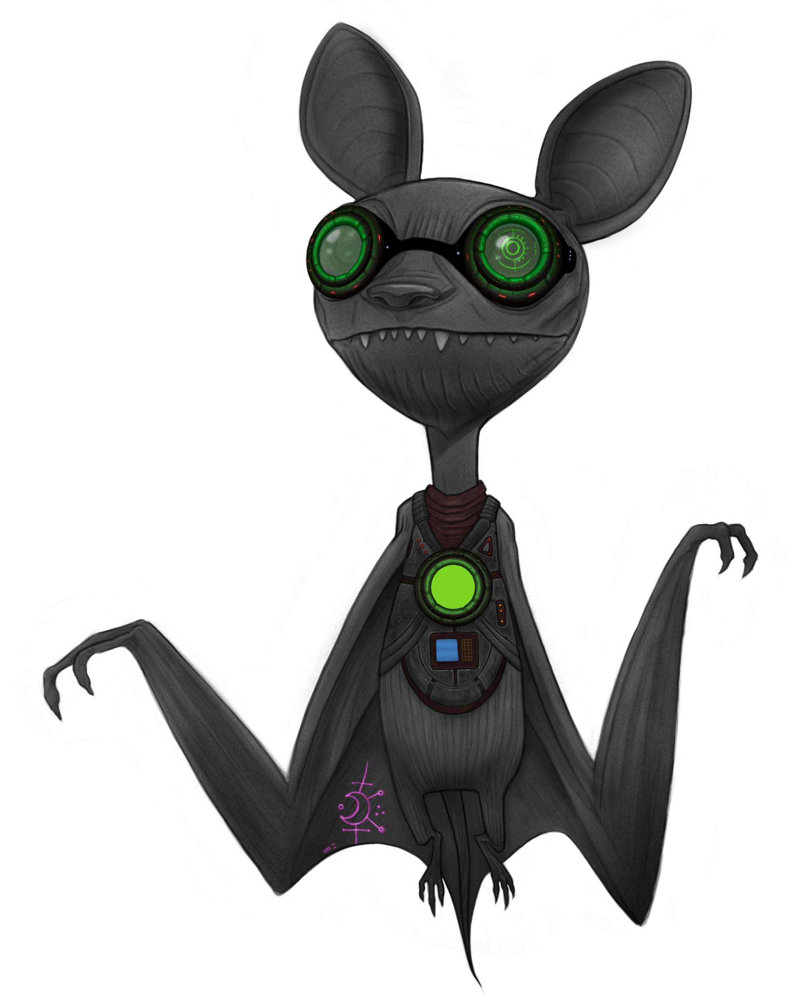
Espionage and theft are a dirty part of the tech business and Wirephreaks are the upper management of that game. With high tech gadgets in their hands and elite-level cybernetics in their bodies, these thieves and assassins in the shadows are absolute artists of the trade. The breadth of skills necessary to be successful in a solo job is harrowing, but makes a phreak all the more useful when part of a crew.
Take on the role of Wirephreak if you want to play a stealthy cat-burglar that lifts tech or digital secrets up-close and personal or an invisible killer that always gets the job done without notice. When these rogues get their hands on the goods, the mark is the last one to know about it.
If you want to start quickly, choose Flanking Foray, Strapped, Shadow on the Street, Persona, Unseen, and Free Runner abilities.
Spec Tweak:
Choose one of the following. Your choice sticks unless you decide to work it out with your DM.
Zero Trace
You are a ghost in the mists. You can choose to mask your presence anytime, blending in with digital noise and the urban environment. You can automatically mask your identity from most surveillance and security systems at-will through a variety of means, making it hard for electronic eyes to track you.
Hard Wired
You gain a cyberdeck that you can carry without taking up a slot on your body or in your head (if you have a neurolink). You also gain the following hacking ability and a hacking attack for free:
Scope
Your awareness of the tangled web of digital arteries strewn before you is second to none. With a quick scan of your environment, you can feel out nearby network access points, identify weaknesses in security layers, and determine the architecture of any local network.
0 AP. Passively detect unsecured or public access points in range.
0 AP. Identify secured access points, including their level of encryption and any countermeasures.
0 AP. Trace any hostile hacker currently active in the system you're defending. This can reveal (depending on their security countermeasures) their system access point, location within the network, approximate real-world location, and identity, allowing you to monitor their activity or launch a counterattack. Users of this ability can perform one trace for free per round in a session.
2 AP. Pinpoint specific vulnerabilities in a network and gain insight into its data flow, administrator protocols, and connected devices.
This ability makes you an invaluable entry specialist, ensuring you always know the best way into (or out of) a system.
Wirephreak Gear
Wirephreaks rely on a variety of tools and cybernetic implants to get the job done. However, these things can be lost, broken, or extracted just like any other object. The wirephreak may spend 1 AP to rebuild a broken item and must repay the original cost for a lost item. Items must be rebuilt during downtime in the story. Other creatures may hold these items, but only the wirephreak can activate their capabilities.
Termination
There are bad people in this city you should not cross. If you do, they send the best to get you.
- Flanking Foray
- Toxins of the Trade
- Hemorrhage
- Silent Shot
- Dead or Alive
Flanking Foray
As your foe attacks an ally, you blur into an ethereal enigma, evading their sight exploiting the opportunity to strike from an unexpected angle.
This ability can be used in one of two ways once per round:
- Reaction: When a nearby creature attacks a target other than you, you can harness the reactive power of the Flanking Foray. In that decisive moment, you become a fleeting specter, ghosting through the periphery of the battlefield. Seizing the opportunity, you exploit your adversary's focus, maneuvering swiftly behind them with precision and cunning to perform one of the actions below, which don't count against actions on your turn.
If you successfully damage, incapacitate, or kill the target, their attack is interrupted and fails.
- Action: You can also use this ability as an action on your turn if it hasn't been used as a reaction outside of your turn. In this case, the target creature must be engaged in direct combat and within reach of another hostile creature or ally of yours that is it, unaware of your presence, or surprised.
- 0 AP ROLL TWO DICE! You make a basic attack on the target that does double damage (quadruple damage on a roll of natural 20) if the better of the two dice result in a 11-20. Rolls of less than that (1-10) miss.
- 1 AP A master of anatomy, you target the pressure points of a commoner or minion, inducing a temporary state of unconsciousness, leaving them incapacitated for a quick while or until they suffer harm.
- 3 AP You kill a commoner or minion instantly. Describe how you wipe them from this substantiality.
Toxins of the Trade
The most depraved assassins watch with grim fascination as victims succumb to poison's effects, their fate sealed by the clandestine artistry of this deadly craft. Are you one of them?
You could teach a master's class on the variety of ways you know to create potent poisons. With one use of this ability, you create enough poison for a single dose. You can fine-tune the dose to be coated on weapons, put in drinks or meals, potent enough to be absorbed through the skin, or sprayed directly into a creature's eyes or respiratory system. Regardless of delivery method, each use of the poison can only affect one creature.
Wirephreak Gear: This ability relies on tech that is paid for with the AP cost. If supply to this tech is compromised, you lose use of this ability.
Choose any combination of effects by paying the cost of each:
- 1 AP Deep Dream: The victim falls asleep for a quick while.
- 2 AP Hellfire Venin: Commoners and minions writhe in extreme pain for a byte (an hour or two), are dazed (can't use abilities), and are unable to speak. Bosses are dazed (can't use abilities), and are unable to speak until the end of your next turn.
- 3 AP The Toxin that Binds: Commoners and minions collapse and are paralyzed for a longwhile (6-12 hours). Bosses are paralyzed until the end of your next turn.
- 4 AP Heartseeker: Commoners and minions are instantly killed. Bosses are hit for 10 damage.
- 6 AP Constrictor: The victim experiences no symptoms and dies 1 week later. (This does not kill bosses but they do take 10 damage.)
Hemorrhage
Cut deep and let the clock do the rest.
- 2 AP You make a precision strike—bleeding, not bursting. On a successful attack, apply Hemorrhage to a creature.
The target takes 1 damage per round (cannot be resisted) until they ROLL A DIE! Surreal and succeed with an 11+ or until healed by a professional medic or a Cybersurgeon/Proxy ability.
They cannot regain HP by any means while hemorrhaging.
If they drop to 0 HP while Hemorrhaging, they bleed out instantly, no mercy.
Silent Shot
I played like I was MercSerc shining my flash into deir eyes asking questions. The slug split dat hare wide open so quick, it actually finished its answer...
Wirephreak Gear: This ability relies on tech that is paid for upon selection (you must choose whether it is cybernetically implanted or carried as an external device). If this tech is compromised, out of your possession, or extracted, you lose use of this ability.
- 2 AP Assassins in DimmC utilize a variety of discrete hand cannons that employ a silent piston-driven charge to propel a slug.
They can look like a traditional firearm, be disguised as an umbrella or a comlink, or even cybernetically implanted into the operator's body (choose which upon selection of this ability). It's rare to find these weapons without smartlink technology to track the target and almost perfectly guide the wielder's hand to make a deadly accurate shot on any nearby target in the scene. The shot hits for 6 damage and instantly kills commoners and minions. You must spend the AP cost to use this ability or the AP cost and one entire turn to recharge the weapon for another shot.
Dead or Alive
Bounty hunting the metropolis in the mist ain’t a gig—it’s a food chain. You know the ins and outs of the job: the alleys, the rhythms, the bleed. You don’t chase marks. You harvest 'em.
- 0 AP You check a few darksites and hit up some contacts to see what bounties are out there for the taking. After a byte or two, you got the jist of the fattest of the fat and how heavy each of 'em really are.
- 5 AP ROLL THE DIE! You place a bounty on a commoner or minion's head for their capture or death. You must offer something of value as a reward in addition to the AP cost of this ability that is agreeable to the hunter.
You may choose to have bounty hunters compete for the prize or hire a few for different rates and let them take their chances. If you want the bountyhead alive, you may specify where they are to be taken upon capture. If you mark them for death, you may require any manner of proof that the deed was done.
- If you roll a 20, the deed will be done by the end of your play session.
- On 11 to 19, the deed will be done by the end of your next play session.
- On 1 to 10, the target learns of the bounty and may place one on your head.
You are not sure who bounty hunters will reach first, but you know the game and have time to get ready for them.
Concealment
Flying under the radar is an art. If you know a few tricks, it's a lot less trouble.
- Strapped
- Master of Disguise
- Mirror Stash
- Invisible Implement
- StealthSkin
Strapped
Bad guys shouldn't know yr packin till you open 'em up wit it!
- 0 AP Unless you are actively searched by another creature, you can conceal up to two items no bigger than baseball bats in your customized clothing without being noticed or drawing any undue attention, provided you're wearing enough to reasonably conceal them.
- 1 AP You can use legerdemain to keep anything dagger-sized or smaller from being discovered on your person. As long as both your hands are free, you can do this at will. Otherwise, the DM may call for a roll...
Master of Disguise
Look at me! Am I not turtley enough for this turtle club? Turtle, turtle! Turtle, turtle!
Wirephreak Gear: This ability relies on tech that is paid for upon selection. If this tech is compromised or out of your possession, you lose use of this ability.
- 0 AP *If you have time to assemble a proper disguise beforehand or are in possession of a disguise kit, you can pull off misrepresenting yourself using your near-flawless facade. The disguise automatically fools all you encounter, but some may question you if you act suspiciously.
- 1 AP Any place where beings are, you may find objects to use to put together a passable disguise. Depending on where you are, the disguise will offer at least one signature element of your deception, like a uniform, a membership insignia, or a style of dress. The disguise automatically fools commoners, but minions and bosses may question you.
Mirror Stash
It was the most amazing trick! That grey drew some symbol on his bare chest with his finger and proceed to pull a clown car worth of stuff outta there!
Estronian technology is one of the most useful imports into Dimm City and its citizens benefit greatly from the alien tech. Mirror Stashes are one of the most popular among the rogues of DimmC because it allows a large amount of loot to be nearly flawlessly hidden with low risk to the user. All it takes is a pin prick implant and you're ready to stow and retrieve your items in The Mirror. You open a portal using a special chip embedded in your finger that is activated by drawing a unique design with that digit. When activated, the chip turns the surface drawn upon into a portal to a stash spot in The Mirror where almost any object may be stored and is only accessable with that particular chip. The gate remains open for as long as you need it or until you leave the scene. This technology allows you to carry more than 12 items and can fit anything that can be pushed into a half-a-meter wide opening. It does have it's limits (DM's discression) and the more stuff you pack in, the harder it is to find what you're looking for in a pinch.
Wirephreak Gear: This ability relies on tech that is paid for upon selection and is always implanted into a digit. If this tech is compromised, extracted, or out of your possession, you lose use of this ability.
- 0 AP You draw your personal seal on a surface with your chipped finger. A portal opens and you can remove items previously stored or stash new loot (up to the size of an average human body) in the cache. The Mirror is a fairly safe place to store stuff, but who's to say your stash won't be found by something on the other side? Beware!
Invisible Implement
I believe the best weapon is the one you got in hand. That's why I always carry this monkey fist key chain.
Weapons that can pass as innocuous objects are of great benefit when you're in a heavy situation and you need an advantage. A hat with a weighted brim that functions like a blackjack is just one example. This weapon hits for 2 damage in any form.
Wirephreak Gear: This ability relies on tech that is paid for upon selection. If this tech is compromised or out of your possession, you lose use of this ability.
- 1 AP When something attacks you and you are visibly unarmed and unthreatening, you can attack with your hidden weapon. ROLL A DIE!! If you roll a success or better (11-20), you negate their attack. If you roll a triumph, you kill the target if they're a commoner or minion. Bosses take 5 damage instead of instant death. This does not count as an action and you may act normally on your turn.
StealthSkin
The psycho just appeared outta nowhere! Took a slash at me, missed, an just disappeared into the darkness.
Wirephreak Gear: This ability relies on tech that is paid for upon selection and can be tech implanted into every millimeter of skin on your body or a bodysuit as you like (make note of your choice). If this implant or item is compromised, extracted, or lost you lose use of this ability.
- 2 AP This augmentation consists of thousands of light-bending tiles implanted into your skin that can render you completely invisible in the right conditions.
When you activate this implant's ability, it shimmers and sparkles briefly before you and most everything you are carrying vanishes. You are invisible for a quick while or until the encounter ends. As you move there is a slight delay as the cloak calibrates to the shifting scene around it. While this is only less than the blink of an eye, it's enough for those with keen vision to spot in the right surroundings, but you are virtually undetectable otherwise. While invisible, common folk and minions won't notice you passing by unless you aren't wearing metafabrics that facilitate the implant's function or you make a lot of noise. Wearing regular clothing that amounts to more than a tanktop, shorts, and sandals negates the functioning of this augmentation. If you attack while invisible, the implant deactivates and you become visible again.
You can become invisible again whenever you use a move action to change location, while the ability is still active.
Surveillance
Embrace the shadows and watch your prey unseen.
- Shadow on the Street
- Bug
- Optical Suite
- Repeater
- Unknown Drone
Shadow on the Street
If you know too much about the city and its intricacies, it's unusually easy to find whoever or whatever you want.
- 2 AP If you know the general whereabouts of a sentient quarry or item you need to procure, you can track them/it down with a combination of information gathering and observation. Tracking down something or someone like this can take a long byte, but the legwork almost always pays off.
ROLL A DIE!
- If you roll a 20, the target or item is easy to find and you can walk right up to take the next step.
- On 11 to 19, the target is a bit more elusive and you may have to stake out a few places and drop some creds to finally make contact.
- On 6 to 10, the target is really hard to find. You exhaust yourself pounding the pavement but finally get word after dropping a bit more cash than you wanted and doing a bit too much legwork.
- On 2 to 5, the target gets wind of you or those holding get spooked by you trying to track them down. Try again, sucker!
- On a 1, the target or someone working in the trade gets the jump on you. It's up to the DM to tell you what happens next.
Bug
The mercsercs had me surrounded inna instant. I dinnt know how they found me until the bug dropped off and flew away. FML!!!
Wirephreak Gear: This ability relies on tech that is paid for upon selection. If this tech is compromised or out of your possession, you lose use of this ability.
Bugs come in different shapes and sizes, but only psychos use the same type consistently as a calling card of sorts. Some bugs can fly, some can jump, some can climb, and some can swim. All are classed as tiny commoner NPCs. They can be programmed to move independently, but usually they're piloted like a drone until they hit their mark and attach to them. Most phreaks use whatever bugs they can get a hold of and alter them to suit their needs:
- X AP - Beacon Bug Shaped like a lightning bug, these devices are used to track targets and can be followed on any comm system with the appropriate app. The piloted version costs 1 AP, while the auto-tracking version costs 2 AP and once this cost is paid, the bug can be used again and again. A successful hit destroys the bug.
| Name |
HP |
Damage |
Traits |
| Beacon Bug |
1 |
1 |
Climb, Jump |
- X AP - Wirefly Tiny and stealthy, these spindly flies can secure themselves to anything, providing high-quality audio and video indefinitely. The piloted version costs 1 AP, while the auto-tracking version costs 2 AP and once this cost is paid, the bug can be used again and again. A successful hit destroys the bug.
| Name |
HP |
Damage |
Traits |
| Wirefly |
1 |
1 |
Climb, Fly |
- 3 AP - Butcher Roach This bug is designed to be anything from a nuisance to an assassin. It has a thick exoskeleton with springsteel legs that make crushing it nigh impossible.
On the attack, it acts independently in the same round as you and does 2 damage per hit if you ROLL A DIE! and the result is a success (11-19) or better. On a triumph (20), the butcher roach dazes the target and they cannot use abilities until the end of their next turn. This attack can also be used to deliver a dose of poison from the Toxins of the Trade ability (this bug has a payload of two doses). This bug uses auto-tracking (but can be piloted) and can be used again and again.
| Name |
HP |
Damage |
Traits |
| Butcher Roach |
2 |
1 |
Climb, Fly, Poison, Resistance (Physical Attack) |
Bug (cont'd.)
- 4 AP - Sentipede
With its long, segmented body and numerous pairs of legs that can reconfigure to any port, easily penetrating most physical terminals and exposed hardware, this unassuming arthropod is a true locksmith.
Once latched onto a system, the Sentipede transforms from its unpretentious appearance into a silent storm of code and commands, driven by a shrewdly trained AI. It diligently gathers intelligence, relays information, and even devises tactics for achieving complete control. Armed with autonomous hacking capabilities (Pro Phreak Defense security and Specter Protocol), the Sentipede functions as a one-bug army, adept at breaching entry-level systems. It excels at monitoring and spoofing systems but isn't much use in heavy situations. If it takes any damage from a IRL attack, it is destroyed.
| Name |
HP |
Damage |
Traits |
| Sentipede |
1 |
1 |
Climb, Swim |
Optical Suite
Viewing this world in the visible spectrum can help one to understand much about it, but the real learning happens when one can see it in the UV and IR spectrums and beyond!
Wirephreak Gear: This ability relies on tech that is paid for upon selection. If this tech is compromised, extracted, or out of your possession, you lose use of this ability.
This optic implant or HUD housed in a pair of mirrorshades lets you see in natural darkness as if it were daylight. The gear can be permanently upgraded (spend the Adventure Points listed only once) with these capabilities:
- 3 AP ZOOM Add the ability to magnify the details of small nearby objects, or zoom to see faraway things clearly.
- 4 AP IR Augmentation Add infrared vision that lets you see an outline of things that are generating heat nearby. This ability works through most walls, ceilings, and floors. (DM's call).
- 6 AP Reality Check Add the ability to detect whether something is an illusion. Illusions you detect appear to flicker and distort.
- 0 AP Each of the above modes can be toggled while using an augmented vision device by turning a dial on the side of the device or mentally switching if implanted.
Repeater
Utilize this concealable device to intercept, hack, and relay encrypted communications undetected.
A repeater is a small, clear, button-sized device that allows you to eavesdrop on a communications device by placing the repeater on a transmitting decvice, hacking the signal, encrypting it, and routing it back to you through a series of relay points to make it as difficult as possible to track you down on the receiving end.
Wirephreak Gear: This ability relies on tech that is paid for upon selection. If this tech is compromised, or out of your possession, you lose use of this ability.
- 0-1 AP When planting the Repeater in direct proximity to a device that transmits communication signals, you may attempt to hack it.
You share an indirect link with the repeater, and you are automatically aware of any messages being transmitted through the device through your MindMessage app or another more clandestine alternative.
Unknown Drone
If intelligence is worth its weight in gold, this scout is bank!
Wirephreak Gear: This ability relies on tech that is paid for upon selection (drone/controls). If either part of this tech is compromised, or out of your possession, you lose use of this ability.
The unknown drone is a levitating orb as large as the palm of your hand that responds to your commands through VR, your HUD, or neurointerface. It shimmers a bit as its cloaking skin adjusts to new backgrounds, but is almost invisible. Some may make a low humming noise as they move, but most are nearly silent.
- 0 AP You can make the unknown drone travel up to 10 kliks away.
It can roughly tell you how many creatures are in a space (even if hidden), but not the exact details unless the targets are in full view. It has onboard diagnostics that can analyze a visible creature's onboard augmentations to a moderate degree, but is in no way 100% perfect in any its analysis.
- 1 AP The unknown drone can give you a current and highly detailed map of any area it is tasked with scouting.
The Dream Master will give you all the information it gleans, highlight any major features (like subways or government facilities), and mark the exact location of any creatures observed that you deem of note.
Spyware
Knowledge is the deadliest weapon in espionage and these skills are your key to unlocking its power.
- Cryptopolyglot
- PDA
- DupeTool
- Truthmangler
- Nanoforge Resonator
Cryptopolyglot
Language is power. Its encoding and decoding is magic unto itself.
- 0 AP You have a talent and possess great skill translating and speaking languages. You can read any message you see after a quickwhile. You can communicate and understand basic ideas in a foreign language after a longwhile of exposure and study. You become a native speaker of the language after a short stretch of immersion and study.
- 2 AP When you come across a coded message, you can spend a byte or two hacking at it to decode it. This maybe a cut and dry process or a bit more involved (DM's call).
PDA
Every busy "entrepreneur" needs an assistant to help them manage day to day operations. This one also helps you keep your stashes straight and your stories as well.
Wirephreak Gear: This ability relies on tech that is paid for upon selection. If this tech is compromised, or out of your possession, you lose use of this ability.
- 0 AP Your personal digital assistant can be an external piece of hardware or an onboard app accessed through your neuroprocesser.
It has a distinct name, personality, and vibe that you can tweak to your liking. The PDA is able to retrieve any digital information you possess (pics, files, video, etc...) and store that data in a number of encrypted vaults throughout the Datasphere.
If given access to a bodycam or your own optical suite, the PDA can archive every waking minute of your day and be able to retrieve any experience that happened to you with but an ask. This allows for you to view documents, faces, and other details in high res 3D imaging, allowing you to observe something in detail later that you casually glanced at IRL.
If an outside agent attempts to access your data and is detected by your PDA, automated encryption rotation is activated, kicking them from the system and changing the encryption key to another off a randomized list that will prompt you as to the proper one with a subtle hint that only you know the answer to. The PDA knows you and how you work in detail. If anything suspicious is afoot, it will hit the interloper with a barrage of multi-factor authentication and user-unique questions. If the assult continues, it will burn the entire network and send the only encrypted key to one person, place, or thing you trust.
YOOOOOOOOO! If'n I had dis ting when I wuz yonga, I'da bin za king ov da scene!!!
Wirephreak Gear: This ability relies on tech that is paid for upon selection. If this tech is compromised, or out of your possession, you lose use of this ability.
Comprised of a forearm-sized hunk of plastic and metal, this 3D printer/scanner/docutool can can create forgeries of official documents and it automatically learns how to reproduce the document or file's handwriting style, signature, or seal to perfectly replicate the original. It can create physical or digital documents that are absolutely perfect, be they ID's or bank notes. Only the highest degree of scrutiny will reveal the fake (this is at the DM's discression).
- 2 AP You use DupeTool to create a single document forged in any style the device has previously analyzed, including the reproduction of any official stamps, sub-wavelength nanostructures/microstructures, sophisticated electron beam lithography and proprietary nano-fabrication technique watermarks, or seals. Yet again, only the highest degree of scrutiny will reveal the fake (this is, again, at the DM's discretion).
Truthmangler
The truth ain’t what happened—it’s what they remember.
Wirephreak Gear: This ability requires a signal-based synapse disruptor mounted behind the lenses of your eyes, in the frame of your glasses, or piercings through the bridge of your nose or eyebrows. If it’s removed or damaged, this ability cannot be used.
- 3 AP You whisper a loaded phrase into someone’s ear (or inject a code-pulse via PDA). The previous or next longtick (about a minute or so) of their memory is overwritten with a fake version of your choice. You must describe the false memory in detail. Only one target may be affected per use. Commoners are automatically fooled; minions ROLL A DIE! 11+ to resist; bosses are unaffected unless willing or mentally weakened.
Nanoforge Resonator
The convergence of technology and biology has opened up new avenues for covert operations allowing for gear to be created on the fly when unexpectedly in need.
Wirephreak Gear: This ability relies on tech that is paid for upon selection and is a wristwatch-like device that interfaces with your neural processes. If this tech is compromised or out of your possession, you lose use of this ability.
- 2-X AP You can utilize the Nanoforge Resonator to perform "Nanosplicing," allowing you to interact with and modify digital and physical objects at the atomic level.
You can build advanced and lightweight materials with specific properties for various purposes, such as constructing highly efficient energy storage devices or durable yet lightweight structures (as long as you have the know-how and specifications). Additionally, you can sabotage equipment, causing things to malfunction or become ineffective by manipulating their molecular composition.
This skill enables you to create hidden compartments within objects and alter the composition of materials to suit your needs. Furthermore, you can analyze and extract nanomaterials from various sources for use in your operations. For example, you could alter the formula for the Cybersurgeon's Spray-On Shielding ability, enhancing the hardened shell to absorb up to 3 HP from physical hits instead of 2 by leeching some molecules from available steel.
This ability is deep in its applications and will require you to discuss its usage in detail with your Dream Master. It's also a slow process that requires more time the larger the job.
Infiltration
To steal into the heart of secrets, one must become a chameleon of identities, adapting and bending the world to their will.
- Persona
- LeviAnchor
- Jury-Rigger
- Signal Pick
- Quantum Phase Shift Manipulator
Persona
A disguise can allow you to blend into the crowd, but to truly get inside you need an identity to match.
You carefully prepare a convincing alternate identity. You cannot create a persona of an existing person or the identity of someone who holds an exclusive position, like the ruler of an existing nation. Once you spend the AP to create this persona, you can use it freely until your alter ego is revealed publicly as long as you have the costume and accoutrement necessary.
Each persona consists of a wardrobe, credentials, and a backstory. You may create and
describe each element of the persona.
When you use your alternate identity, you must outwardly present yourself as that person by wearing their costume (using Master of Disguise) or something specifically assembled for the role.
- 2 AP You create the persona of a common person of average means, like a factory worker, artisan, mechanic/technician, priest, soldier, or teacher/scholar.
When using a commoner's identity, you can:
- Effortlessly blend into crowds and travel unnoticed in public spaces.
- 4 AP You create the persona of a highup (someone in a position of formal authority), like a politician, judge, military officer, corporate leader, or ship captain.
When using an highup's identity, you may:
- Enter restricted areas that your rank and affiliation gives you access to.
- Give mundane orders to people you outrank, like running errands or keeping watch.
- 6 AP You create the persona of a aristocrat, like a prominent socialite, wealthy business owner, ambassador, or governor.
When using an aristocrat's (or aristocrust as the other classes call them ;) identity, you may:
- Enter exclusive spaces for the rich and famous, like private clubs or balls.
- Seek audience with local rulers.
- Spend 1 AP for a get out of jail free card that pardons you for minor crimes.
LeviAnchor
Freeclimbing is doable, but for some jobs ya gotta have a bit of safety at yr back.
Wirephreak Gear: This ability relies on tech that is paid for upon selection. If this tech is compromised, or out of your possession, you lose use of this ability.
- 0 AP Activate the LeviAnchor.
A specialized drone that gently glides itself upward, like a balloon, until it reaches and attaches to an appropriate point. You can tie any length of rope to
the LeviAnchor and it has 30 meters worth of rope onboard as well. For higher climbs, the drone can set anchor points with rope to allow for use of the LeviAnchor as an assistant rather than a static point.
Jury-Rigger
Improvisation is terribly haphazard but on occasion, deadly effective.
1 AP When you are in a room with everyday objects at your disposal, you may hastily craft one of the following items in less than 1 minute.
- Tripwire You create a wire attached to an auditory or other trigger that makes a loud noise when someone crosses it or to activate some other effect or device.
- Poison Trap If you have poison, you may create a small floor trap that poisons the first creature to step on it.
- Simple Tool You fashion a makeshift weapon or tool (describe it) that hits for 2 HP.
- Periscope You can make a small periscope that allows you to look over objects and around doors.
- Spare Parts You can scavenge a few bits and fabricate a small componenet you need to make something work (DM's call).
1-X AP Rapid Rig In situations where everyday objects are at your disposal, you can swiftly engineer on-the-fly solutions or temporary repairs, often with unpredictable outcomes:
- Hasty Repair You can attempt to temporarily mend a broken gadget (tool, hand-held weapon, or other non-cybernetic device no bigger than a car engine) . The device operates for a limited duration based on the number of abilities you possess, but may become damaged further or have unintended consequences afterward (DM's call).
<br/>
- 6-10: A long tick
- 11-15: A quickwhile
- 16-20: A shorty
- 21-25: A midwhile
- 26-30: A longwhile
- 31 or more: A fullwhile
- Crafty With the right components and time, you can create makeshift devices or gadgets. The effectiveness and durability of these inventions are limited at best (DM's call), with frequent tweaks and maintenance required to keep them functional.
- Quick Rig In a pinch, you can quickly craft or modify equipment, such as jury-rigging a vehicle for a burst of extra power or restricting a energy-guzzling engine to make it more fule-efficent. Results may vary depending on the situation and the effect (DM's call).
Signal Pick
When we hit dat door with za biomech lock, I taught we wuz jackblocked. Switch jus held up deir hand an like magic, da lock jus popped.
Wirephreak Gear: This ability relies on tech that is paid for upon selection (you must choose whether it is cybernetically implanted, usually implanted in a hand, or carried as an external device). If this tech is compromised, out of your possession, or extracted, you lose use of this ability.
Adaptive Memory: The Signal Pick possesses a self-learning neural network that absorbs and stores information about previously encountered security systems. Once a lock has been compromised, the signal pick memorizes its unique attributes. Subsequent encounters with the same lock or system require no additional action points (AP) for adaptation.
- 0 AP Card Reader Impersonation: When used against card readers, the Signal Pick mimics the magnetic signature and encrypted data of authorized cards.
Upon contact, it alters its surface to mirror the distinctive pattern of the target card, fooling the reader into granting access. The Signal Pick exudes a faint magnetic aura as it establishes a brief but convincing magnetic resonance with the card reader.
- 1 AP Wireless Lock Override: The Signal Pick interfaces with wireless lock systems by emitting encoded signals that mimic authorized access.
By placing it near the target wireless device, it initiates a digital handshake, seamlessly tricking the system into granting entry.
- 1 AP Voiceprint Synthesis: To compromise voice-activated locks, the Signal Pick uses available samples of the keyed user's voice from your surveillance or public/hacked samples, analyzing the acoustic nuances. Once sufficient data is gathered, it adopts a liquid-like state, reshaping itself into a nanoscale membrane. When applied to the lock's microphone input, it vibrates in resonance with the recorded voice, accurately reproducing the required vocal pattern.
- 2 AP Biometric Intrusion: When faced with a biometric lock, the Signal Pick generates an intricate, shimmering fractal pattern on its surface. Upon contact with the biometric scanner, the Signal Pick uses advanced light manipulation to replicate the unique biological attributes required for access. It adapts its surface to emulate the user's fingerprint, retinal pattern, or even DNA signature.
Quantum Phase Shift Manipulator
Harness the extraordinary power of quantum mechanics to shift through solid matter and navigate a world where barriers are mere illusions.
Wirephreak Gear: This ability relies on a specialized piece of kit that forms the core component of the Quantum Phase Shifter system (you choose its form: a belt, collar, harness, etc.). If the item is compromised or out of your possession, you lose use of this ability.
The Quantum Phase Shift Manipulator (QPSM) is a cutting-edge wearable device that harnesses the principles of quantum mechanics to achieve the remarkable ability to phase through matter. The device operates by exploiting the inherent duality of particles, where they can exist as both particles and waves simultaneously. If you are using this tech and run out of AP while still in solid matter, you are ejected from the mass (Forced Expultion) in a random direction (this is at the DM's discression) and you are dropped to 0 hit points. While in solid matter, you can move in any direction as if there is a path under your feet.
- 1 AP Phasing through a thin barrier and moving to a point in reach, such as ghosting through some prison bars or a glassteel panel.
- 2 AP Passing through a fairly thick barrier and arriving nearby, like ethereally moving through a castle curtain wall.
- 3 AP Transcending a solid stretch of matter, alighting in range of your starting point. A good example of this is moving through the solid rock that seperates two unconnected mine shafts.
If you misjudge your exit, this leaves you inside a solid mass. It's swipe or slaughter next round and you better have the AP to continue or you face forced expultion (as detailed above).
- X AP If you misjudge the amount of movement you needed to make in the last round and remain in solid matter at the start of your next turn, you need to pay for the movement you wish to attempt (1 AP in reach, 2 AP nearby, 3 AP in range). If you lack AP to continue, you face forced expultion (as detailed above).
- 1 AP If you wish to bring someone with you, you must pay 1 AP per person or they may contribute any amount of their own AP to help with the total cost. They must stay in reach and in physical contact with you. You or they must pay the cost every round or they face forced expulsion.
Stealth
Always keep your enemies in the dark about your movements and appear where they least expect you!
- Unseen
- Unheard
- False Echo
- Disappear
- Ambush
Unseen
When ya got a tail followin ya thru da streetz, the best way to cut 'em is ta do it right unda der noses.
- 1 AP When in a crowd or place with things to conceal yourself (corners, trash cans, bushes, etc.), you make yourself invisible to anyone casually walking by.
When you are hiding in a crowd, you are inconspicuous to any casual observers. If someone is actively searching for you, roll a die. That is the number they must beat to catch your scent. If they win, roll again. The searcher must beat your roll with you winning all ties in order to spot you. You remain unseen as long as you stay concealed by the environment or moving inconspicuously within a crowd. Attacking or doing anything out of the ordinary reveals your position to anyone actively searching for you.
Unheard
Through intense training of your mind and body, you have mastered the art of moving without sound.
- 1 AP With this ability, you focus your mind and body to become physically lighter and in tune with the sounds you create.
You may move normally, but make no sound you do not wish to. Silently performing actions that typically produce noise, such as breaking a window, requires an extra 1 AP.
False Echo
Your heat sig is bouncing off three walls. Your vitals are scrambled like wet code. To the cams, you're everywhere but here.
Wirephreak Gear: This ability relies on a Z!x!x!-crafted Echovoid Mantle—an augmented cloak woven from kevlar thread and glitch-layered metafabric (or a similar item of the PC's choice). It emits distorted biometric signals, fragmented movement echoes, and false sensor signatures. If the mantle is damaged, null-patched, otherwise compromised or lost, this ability becomes unusable.
- 2 AP You activate a burst of sensor-masking interference that distorts your presence across cameras, scanners, and auto-tracking systems.
For the next longtick (minute or so), you appear on sensors as if you are:
-
Moving somewhere in range meters in the wrong direction
-
Present in multiple nearby places at once
-
Dead or unconscious
-
Smartguns, security drones, and facial recongnition fail to acquire a valid target unless overridden manually.
Your real location is hidden unless you take violent action in open, surveilled space.
Disappear
I had 'em pegged inna dead end alley. My cuffs grasped emptiness as I viddied the suspect dissolve.
Wirephreak Gear: This ability relies on tech that is paid for with AP. If this tech is compromised, supply is compromised, or out of your possession, you lose use of this ability.
- 2 AP The ultimate in stealth is to be able to hide in plain sight. You have discovered how to accomplish this feat.
Be it through a smoke bomb or holographic assistance, you have devised a technique that allows you to vanish in the heat of the moment. If searchers are in reach and could see you when you disappear, ROLL A DIE! The searcher must also ROLL A DIE! and beat your roll with you winning all ties. If they were nearby but could see you when you disappeared, they must beat your roll by 3 to locate you. If the searcher was in range but could see you when you disappeared, they must beat your roll with their roll halved and rounded up to locate you. Searchers that were too far but could see you when you disappeared must beat you with a Triumph to locate you. Once you disappear, you must remain still or any looking for you will instantly spot you when you begin moving.
Ambush
A carefully laid trap is worth every moment I spend waiting for it to be sprung!
- 4 AP Being of a devious mind, a few rounds of preparation can turn any location into a deathtrap.
When you set your machination loose, it allows allies you have concealed with you a free round of action, you ROLL A DIE!, and check the following table for the result:
- 20 All commoners and minions nearby die instantly, while bosses nearby take 15 damage.
- 16-19 All commoners and minions in reach die instantly, while other enemies nearby take 5 damage and bosses nearby take 10 damage.
- 6-15 All commoners nearby die instantly while remaining enemies nearby take 5 damage.
- 1-5 All commoners in reach of you die instantly while remaining enemies nearby take 3 damage.
The Second Art
Master the art of Theivery to become an elusive and cunning pick pocket or swindler, a keen observer of hidden truths, or a skilled troubleshooter/burglar navigating the world of intrigue and deception with finesse and expertise.
- Free Runner
- Sleight of Hand
- Perception
- Wardbreaker
- Breakstep Reflex
Free Runner
Master the streets with unparalleled agility. Your balance, speed, and endurance ensure your escape.
- 1 AP Outrun: Using this ability allows you to run faster than normal beings, easily outpacing them on foot. In combat, you can close to be in reach of enemies that are in range instead of nearby and attack in the same turn. You can use Outrun until the end of the encounter or for a quickwhile.
- 0 AP Climb: When you need to ascend or descend a vertical or near vertical surface, climbing is usually your best option. You are a trained in a variety of climbing techniques and can reach the vertex of almost any structure barehanded. When climbing, you can move at your normal walking speed and can hang with stability from your hands or feet.
- 0 AP Jump: With this ability, you can make 3 meter standing long jumps/8 meter running long jumps/1.5 meter standing high jumps/2 meter running high jumps with no issue. If you wish to make a longer jump, FLIP A COIN for every third of a meter you wish to add. You must succeed on all coin flips or your attempt fails and you fall with your successes still giving you distance.
- 0 AP Acrobatics: Mastery of gymnastics has great benefits when applied to your line of work and makes you a hard target to get a bead on. You can use this skill in combat to maneuver around an opponent or even over them to gain an advantage or a route of escape. When using this art to flee an opponent (you cannot attempt any attack in the same turn you gain this advantage) they must roll twice to hit you with both dice rolls succeeding to hit you. You can dive through narrow openings that would slow down a lesser-skilled pursuant. Anytime you are knocked prone, you can roll out of it to remain on your feet. Lastly, if you fall, your skill in tumbling automatically allows you to take ¼ the damage (rounded up).
Sleight of Hand
Deftly pilfer and plant through the expert art of escamotage.
- X AP Whenever you wish to secretly swipe something no bigger than the size of an ID card from a neck lanyard or plant a tiny tracking beacon on a mark:
ROLL A DIE!
- 20 You get what you wanted and more!..
- 11-19 You plant/lift the item and stash it quickly on your person with no one the wiser.
- 6-10 You plant/get the item you were going for, but you drop it/it is bugged, trapped, alarmed/the item is damaged/ you can't stash it quickly/ it is what you wanted but it is not exactly what you thought it was.
- 2-5 You fail, but you have a 50/50 chance of them not noticing (heads) or having to fast-talk them upon discovery (tails). FLIP A COIN!
- 1 You are irrevocably caught with your hands in the target's pockets and have no way of talking your way out of it.
The Adventure Point cost is based on the item's size:
- 1 AP You endeavor to plant/liberate an item the size of an ID/wallet or smaller.
- 2 AP You take a whack at planting/lifting an item no bigger than a hipsack or small bag.
- 3 AP You can attempt to plant/abscond with an item no bigger than a flack jacket or sombrero.
- 4 AP You may try to plant/pilfer an object no bigger than yourself, but ROLL A DIE! twice and use the lower roll.
Eyes Like Knives
You're acutely attuned to the minutiae around you. From discerning the taxi driver's breakfast by his breath to identifying the most-worn spots on a touchscreen. This gift is annoying, but useful.
You are more aware than the average citizen of Dimm City. When you are confronted with an ambush or surprise situation that would deny you action during the round, you can act normally (if not first based on the DM's call). You may also use this ability in the following ways:
- 0 AP Search: You spend a minute or two searching the area for things that may not be apparent to the untrained eye or ear: hidey holes, hidden traps or triggers, cameras, a low moan from a zombie behind the next door, or even a concealed access node. The Dream Master may or may not require a roll to determine success. Others may be able to find such phenomenon, but you have a good idea as to what it really is and how it works.
- 1 AP Analyze: You found the cutout in the wall that hides a secret button.
ROLL THE DIE! to make your best guess.
- 20 You know the exact function of the item you found, how to arm and disarm it, and can roll two dice keeping the higher result when using PERCEPTION and encountering similar items in the same structure.
- 11-19 You know the function of the item in detail and how to permanently disarm it.
- 6-10 The device does something.... Is it a switch to disarm the poison gas blowers in the next room or is it the thermostat?..
- 2-5 You fail, and have a 50/50 chance of triggering the device with your awkwardness. FLIP A COIN!
- 1 You should be ashamed of yourself. You activate the device and other BAAAAAD things (DM's call). WAY TO GO!!!
Wardbreaker
Whether it involves dismantling a specific mechanism or simulating a fabricated retinal scan, your repertoire of tactics is extensive.
- 0 AP On most simple locks, this method will work. It's loud, it's noisy, and the lock is irreparably damaged. Not smooth, but quick and effective. Rudimentary security systems (like a shop keep's door chime) effectiveness can also be quashed if you are aware of the measure beforehand.
- 1 AP This technique allows you to bypass low-security to mid-level complexity locks with no damage to the device. Simple locks can be popped in an instant, but more advanced hardware will take 10-60 (Roll 1d6) seconds to open. Basic Security systems can also be bypassed using this skill.
- 2 AP High security locks using biometrics or electronic fobs as part of the key requires an approach with a large degree of finesse. Using your skills, you can open these types of devices in 1-6 minutes (Roll 1d6). This time can be halved if you spend an additional 1 AP extra. Triggering fairly complex security protocol can be averted as well through this routine.
- 3 AP The most complicated locks and security measures may be nullified with advanced planning and preparation (it also may cost more AP...). Attempting to hack this level of aegis without advanced planning is a 50/50 tossup (FLIP A COIN!) with failure almost always being the worst-case scenario in which alarms are triggered and security protocols are activated (which you may or may not be aware of). You may spend 2 AP (or more depending on the whim of the DM) to have easy access on the fly to some needed tools, but in that case you flip two coins with one success granting you your goal.
Breakstep Reflex
You don’t sidestep—you vanish. One second you’re in the line of fire, the next you’ve lunged, rolled, or vaulted clean out of it. No trace but scuffed concrete and a twitch in your predator’s aim.
- 1 AP When you’re about to be hit—be it by slug, flame, or arc—you can ROLL A DIE!
| Roll |
Effect |
| 1 |
You are knocked prone and take full damage from the threat you tried to dodge. You make all rolls Surreal until the end of your next turn. |
| 2-5 |
You take half damage, but the attack throws you off balance. You make your next roll Surreal. |
| 6-10 |
You take half damage, but you still get to reposition. |
| 11-19 |
You take no damage and launch yourself to a new position anywhere nearby you can see—a rooftop, behind cover, through a busted window, etc. |
| 20 |
You also leave behind a blur—kicked-up dust, a snapped tarp, a slamming door—that throws off pursuit. Until your next turn, attackers roll Surreal to hit you. |
Bionic Boosting
Your gear ain't supposed ta do this, but I'mma make it do this. Remember ta stop, drop, and roll when it catches fire!
- Radio Reboot
- Amped Amperage
- Power Packed
- Cannibalized Concoction
- Wired In
Radio Reboot
HAW! HAW! HAW! Sparkle?! Ya frozen again?! Yous really need ta dump sum mods!.. Try it now yo!!!!
- 1 AP When you are in range of a creature who fails a CYBERNETICS TEST, you can allow them to ROLL A DIE! to attempt the TEST again. This action doesn't count against your own actions on your turn, but you can only use this ability once per round.
Amped Amperage
A little tweak'll improve damage output substantially, a BIG TWEAK THOUGH!! YULL BLAST 'EM INTA DA BACKPLANE!!!
- 1-X AP When you are in reach of an ally and spend your action to enhance one of their cybernetic weapons, the next time the weapon deals damage, it will do one additional point of damage per Augment Point spent and can be acid, cold, fire, force, shock (lightning or electricity), sonic, or radiant damage. This bonus only lasts until the weapon hits or the encounter ends. If the weapon deals its damage and is amped over two extra damage, the user must ROLL A DIE! and get a result of 11 or better or the weapon is destroyed beyond repair.
Power Packed
Some engineers underpower their designs because of safety concerns. My only concern in the design is MORE POWER!!!!
- 2-X AP With this ability, Wirephreaks can rework existing circutry, wiring, and components of cyberware augs and mods to extend the device's working life (boosting a jetpack range from a shorty (30ish minutes) to a byte (1-2 hours)) , increace its speed/volume/range of transmission or reception/sensitivity, or make it self-destruct in the most violent way possible. This ability requires a case-by-case ruling by the DM on its application and cost. The modification is permanent and ruins the tech permanently if attempted more than once.
All depending on how hard the Wirephreak is pushing the tech they're modifying, there might be significant damage done to the aug or mod so ROLL A DIE! (in the case of self-destruction, the cyberware is permanently destroyed):
| Roll |
Effect |
| 1-5 |
THE TECH SHUTS DOWN AND IS FRIED BEYOND REPAIR! |
| 6-8 |
The tech shuts down indefinitely and has a 50/50 chance of being able to be repaired. |
| 9-10 |
The tech is shut down and requires the user to roll again on this chart at the end of their next turn. |
| 11-15 |
The tech shuts down indefinitely and requires repair to be usable again. |
| 16-19 |
The tech glitches this round making it temporarily useless, but it automatically returns to normal working condition on the user's next turn. |
| 20 |
The tech is unaffected and actually functions better than before. |
Cannibalized Concoction
Gimme three crashed augs an aye can hand ya back one workin!
- 3 AP With this ability, a Wirephreak can make operational a crashed piece of cyberware by sacrificing another augmentation or modification. When attempting to do this, the Wirephreak's dreamer must secretly write out the numbers 1-5 in any order on a piece of paper and keep what they wrote hidden. The DM then tells them how difficult of a repair it is, giving them a target number from 5-15. The DM then secretly writes out the numbers 1-5 in any order on a piece of paper and keeps what they wrote hidden until ready to resolve the attempted repair. Once the sacrifical cybernetic item is decided on, the resolution is ready.
The two strings of numbers are revealed and the numbers that are in the same position on both sheets of paper are added up. If they exceed the target number, the repair is successful! If not, the Wirephreak can try again (no additional AP needed) by sacrificing an additional augmentation or modification, keeping the sum of the previous attempt and adding it to any subsequent attempts until the target number is reached (needed parts are saved from the last salvaged augmentation with additional attempts working toward finding the remaining necessary parts).
Example of Use:
Target Number: 11
Dreamer's Numbers: 13524
DM's Numbers: 23514
Result: 3+5+4=12
The result of 12 equals or exceeds 11 granting success in the attempt!
Yet again, if the first attempt fails, the Wirepreak keeps the result of their previous success(es) and can continue to cannibalize additional cybernetics to gain parts necessary with no additional AP needed in the current repair attempt. If they want to repair a seperate aug or mod, addional cybernetics and 3 AP are required.
Wired In
The slickest mods are the ones that seem as one with the augmentation.
- 5 AP With this ability, a Wirephreak can integrate a modification into an augmentation without using modification slots. Only one modification can be integrated per augment (unless the result states otherwise). If it costs more than one mod slot, the cybersurgeon must ROLL A DIE! and check the results of the following table:
| Roll |
Effect |
| 20 |
The integration is successful and another mod may be integrated if desirable for only 2 AP (no further rolls on this table needed) |
| 17-19 |
The integration is successful and only requires 3 AP |
| 11-16 |
The integration is successful. Good job! |
| 2-10 |
The integration is impossible, but the mod is salvageable (DM's call) |
| 1 |
The integration is impossible and the mod is ruined |
If another mod may be integrated as a result of rolling a triumph on this check, that may be done by you at anytime in the future for 2 AP. If the procedure is attempted by another Cybersurgeon, they'll find the procedure impossible.
Technosorcerer
Reality can be hacked. There's code to everything. Mastery is knowing which bit to flip at what time.

These high-tech mages not only know how to hack mainframes, but also how to hack existence itself. With a thought, a technosorcerer can slice into an adversary's digital arsenal, shutting it down or even reprogramming it on the fly to be used against them. This is advantageous, and even more so when used to augment their arcane abilities.
Choose a Technosorcerer if you want to use technology and cybernetics to bend the world to your will. This archetype is the choice for those wishing to assume the role of a digital mastermind or an optimized hacker.
If you want to start quickly, choose the Practical Power, Optiphony, Private Message, Helper Object, Segment Fault, and White Hot Sparks abilities.
Base Powers and Technoenhancement
Technosorcerer can cast powerful spells, but what makes them unique is that they use technology to make their magic even stronger. Each of their magical abilities has two forms: one that's purely magical and another that's magic combined with technology (boosting the abilities power). Technosorcerers can choose to cast a spell using magic alone, or if they have the option, can use the same spell but with the added boost of technology to make it really go bang! If they have been stripped of their tech or cannot access it for some reason, the technoenhanced version cannot be used.
Spec Tweak: Living Terminal
You can hack any connected system nearby using only your mind, no tools required. You also get the following abilities for free without any hardware:
Scope
Your awareness of the tangled web of digital arteries strewn before you is second to none. With a quick scan of your environment, you can feel out nearby network access points, identify weaknesses in security layers, and determine the architecture of any local network.
0 AP. Passively detect unsecured or public access points in range.
0 AP. Identify secured access points, including their level of encryption and any countermeasures.
0 AP. Trace any hostile hacker currently active in the system you're defending. This can reveal (depending on their security countermeasures) their system access point, location within the network, approximate real-world location, and identity, allowing you to monitor their activity or launch a counterattack. Users of this ability can perform one trace for free per round in a session.
1 AP. Pinpoint specific vulnerabilities in a network and gain insight into its data flow, administrator protocols, and connected devices.
This ability makes you an invaluable entry specialist, ensuring you always know the best way into (or out of) a system.
Newb Shield
Just enough to keep the amateurs out.
Uses simple tools like VPNs, antivirus software, 2FA, and password managers for basic protection.
EVERY DECK HAS THIS LEVEL OF SECURITY
To trace a hack with this level of security to its source, the defender has to ROLL A DIE! and succeed with an 8 or better to begin to counter the hacker's attacks. Once successful, a second successful attempt reveals the hacker's identity and physical location.
Prestidigitalization
Perception is easily misdirected and it's even easier with the right distractions.
- Practical Power
- Digital Chameleon
- Override
- Hologram
- Meta-Lense
Practical Power
Surprise, amuse, or baffle those around you with a touch of digital magic.
- 0 AP You produce a tiny effect to surprise, delight, or confuse those around you through a simple hack of your own cybernetics, nearby tech, a pull from the Infinitum, or any combination of the three. Choose any combination of these effects each time you use this ability:
- TASTE You can alter or induce the flavor of an item to enhance its appeal or eliminate its essence altogether. This adjustment is permanent.
- SOUND You create a small, brief sound effect, like a wind chime, an audience clapping, or someone whispering.
- SMELL You conjure a smell of any kind, like a freshly baked pie or an overflowing sewer on a hot day.
- TOUCH You give one or more nearby creatures a gentle physical sensation, like someone tapping them on the shoulder, a chill breeze, or the feeling of goosebumps.
- LIGHT You create a harmless display of light, like a solid/flickering beam of light (similar to a flashlight) or a pattern of images. You can also snuff out or ignite small light sources like torches with concentrated sonic blasts or low-power lasers. If you want to use this ability for offence, ROLL A DIE! to see if you can hit a target in range with the focused radiance this power creates. If you succeed, they take 1 radiant damage.
Practical Power
- CLEAN/MACULATE You can instantly clean or besmirch any creature (up to big size) or object (of no more than one cubic meter of surface area) with a brush of your hand. Items cleaned stay that way until dirtied again, while items tainted by the spell stay that way for a byte.
- MANIPULATE You can teleport small items on your person into your hand from your pocket or vice versus. Any number of manipulations can occur as long as they are completely external (you cannot manipulate a bullet out of your abdomen, but you can shift a coin from your pocket to the top of your head).
- MARK You can mark a color, insignia, or glyph upon an object or surface, which persists for a long byte. It can be up to a quarter of a meter squared.
- JUMP/DEPLETE You can power a small nearby device (something no bigger than a boom box) for as long as you concentrate on it. This version of the ability also allows you to ROLL A DIE! to see if you can touch a target in reach. If you succeed, they take 1 lightning damage. You can also sap all the charge from a nearby device that's no bigger than a boom box. Once drained, it remains inactive until recharged.
- FLASHFREEZE/REHEAT You can cool or freeze an item just as you can heat it to near combustion (you cannot burn it). This version of the ability also allows you to ROLL A DIE! to see if you can touch a target in reach. If you succeed, they take 1 fire or cold damage.
- FASTEN/LOOSEN You can manipulate any one fastener (a screw, nut/bolt, nail, tack, zipper, snap, Velcro, etc.) within reach and affix or remove it from a fixed position. This ability breaks any welds or soldering when loosening a fastener and also repairs any stripping or damage to the fastener, leaving it in perfect working order (DM's call). Fasteners that fall into difficult to access cracks and creavaces in reach can be recalled into your hand with a simple snap of your fingers.
Digital Chameleon
With a thought, you weave an intricate illusion that crafts a false skin allowing you to blend into the crowd.
- 1 AP You can create a false image over your own (no impersonating real people) in order to create a convincing disguise. The illusory disguise automatically fools commoners and minions, but bosses may suspect your facade. This image lasts until you dismiss it.
TECHNOENHANCEMENT:
- 2 AP You can create a false image over your own (even impersonating real people) in order to create a convincing disguise through stalking online profiles and other available data. The illusory disguise automatically fools commoners and minions, but bosses may question you if they are fairly observant. This guise lasts until you dismiss it.
Override
Tech puppetry sows discord as hijacked devices taunt your enemies, deflecting their aggression away from you and your crew.
- 1 AP You make a suggestive gesture, redirecting a nearby commoner or minion that is currently hostile toward you. The target redirects its anger toward a different adversary for their next turn. (The spell does not work if the target has no other enemies nearby.) This effect is canceled if you harm the creature.
TECHNOENHANCEMENT:
- 1 AP you seize control of a random piece of technology worn by another commoner, minion, or boss within range. This manipulation compels the device to emit an insult or taunt directed at any creatures near the target of this spell who currently harbor hostility toward you. This cunning tactic redirects the anger of all commoners and minions in proximity toward the chosen adversary you've singled out, leading to arguments, skirmishes, or even full-fledged fights until the end of their next turn. Note that this effect will not function if the chosen target has no other enemies in close proximity and will be nullified should you or any of your crew harm any of the involved creatures.
Hologram
Nothing disturbs the peace like a 100-meter tall colossus rampaging in the city square!
- 2 AP You conjure a major illusion no larger than 50 meters in any dimension. The illusion can be of anything that fits within the space, and you can program it with looping mechanics to perform simple actions. If a creature touches or passes through the illusion, they will no longer see it. Creatures with the ability to detect magic may discover the deception.
TECHNOENHANCEMENT:
- 3 AP Through use of holoprojector drones of your own design (or maybe some from the local area off a laser marquee or AdVert) and a whole lot of legerdemain you can create any image you can imagine no larger than 100 meters in any dimension. The hologram can be of anything that fits within the space, and you can program it with looping mechanics. For instance, you can create the image of an all-night diner, a jetspeeder, or a berserk robot running amuck. If a creature touches or passes through the illusion, they will no longer be fooled by it, realizing the hologram for what it really is.
Most of the citz here are invisible day to day, but sometimes it's best to step it up a bit.
- 2 AP You can become invisible for a quickwhile. Everything you are wearing and carrying also becomes invisible. If you attack while invisible, you reappear.
TECHNOENHANCEMENT:
- 3 AP Your microdrone-enhanced sorcery projects a focused image of the background behind a being or an object (you can target yourself with this spell as well) to make it invisible for a midwhile. If it is a creature, everything they are wearing and carrying also becomes invisible. If a affected creature attacks while invisible, they reappear.
- X AP Add 1 AP for each creature or object you target with the spell beyond the first.
Hologravure
The digital shadows we create with our actions in the Datasphere can have a life of their own.
- Reality Skewer
- Optiphony
- Digital Creeper
- Murderer from the Matrix
- Shell for the Ghost
Reality Skewer
What’s real? Not their pain. But they’ll feel it anyway.
- 0 AP ROLL A DIE! If you succeed, you project an illusion so vivid it causes psychosomatic feedback in a single target:
- The target takes 2 HP trauma damage immediately.
- They believe they are bleeding, burning, or dismembered, causing all their rolls to suffer Surreal Rolls until they ROLL A DIE! (operators' rolls are Lucid) and succeed (11+), snapping out of it or until the end of the encounter.
Operators and fodder may flee, faint, or curl into a ball screaming (DM's call). Masters will take 1 HP trauma damage, but suffer no other effects. Master's are unaffected by this version.
TECHNOENHANCEMENT:
- 1 AP This version of Reality Skewer hits automatically if the target has any cybernetics on board. The illusion you project causes such intense fear that the fodder or operator you target takes 2 HP trauma damage immediately and causes them to lose their next turn. You choose if they flee, faint, or curl into a ball screaming.
Masters with cybernetics take 2 HP trauma damage immediately and are dazed (unagle to use their abilities) if they ROLL A DIE! and fail to get a result of 11+.
Potential targets without any augmentations or other more mundane cybernetic upgrades are immune to this version of Reality Skewer.
Optiphony
Conjure spectral decoys to confound your foes and gain the upper hand in combat.
- 1 AP You vanish momentarily, reappearing with two illusory duplicates at your side. Your duplicates travel alongside you and perfectly mimic all of your movements. If a creature attempts to target you, you must flip a coin. If it turns up "heads," you are targeted; on "tails" one of your duplicates is targeted. If one of your duplicates takes damage, it disappears. These phonies last for a quickwhile or until the end of the encounter.
TECHNOENHANCEMENT:
- 1 AP You release a nearly invisible microdrone and it projects three illusory duplicates of your image nearby. They appear anywhere in reach to nearby and perfectly mimic all of your movements. If a creature attempts to target you, you must flip a coin. If it turns up "heads," you are targeted; on "tails" one of your duplicates is targeted and exposed as a hologram which then disappears. These phonies last for a quickwhile or until the end of the encounter.
- X AP Spend an additional augment point to create two more images (in addition to the ones already active) at the time of activation or in subsequent turns.
Digital Creeper
Accessing the Datasphere, you conjure a fearsome entity from their digital trail, striking terror into the target's reality.
- 1 AP You read the mind of a nearby commoner or minion and produce an illusion of a creature they find extremely irritating. Only you and the target of the spell can see and hear the illusion. The illusion relentlessly mocks and taunts your target, provoking their full attention. You may control the illusion directly and have it manipulate small objects. For example, you can have it steal an item from the target and lead them on a chase. Or you may let the illusion go wild, allowing the Dream Master to narrate its behavior. This figment of their imagination lasts for a quickwhile or until the end of the encounter.
TECHNOENHANCEMENT:
- 2 AP You activate a specialized program that scours the Datasphere for an commoner, minion, or bosses social media posts and uses that data to produce an illusion of a creature they find extremely horrifying. Only you and the target of this hack can see and hear the arcane illusion you cast into existence. For a quickwhile, the illusion relentlessly taunts and jump scares your target, provoking their full attention. When first encountering this horrifying paramnesia, players must ROLL THE DIE! If they fail, they are frozen in fear and lose their first turn. After the first turn, the target is dazed and cannot use any abilities while in the creeper's presence. You may control the illusion directly and have it manipulate small objects. For example, you can have it kick open a door or pop from concealment and scream. You may also let the illusion go wild, allowing the Dream Master to narrate its behavior.
Murderer from the Matrix
Unleash unimaginable terror by manifesting your enemy's darkest virtual nemesis, causing chaos in the real world by tapping their digital nightmares.
- 2 AP ROLL A DIE! You imagine a creature that takes form out of thin air in any manner you choose and attacks a nearby commoner or minion. Only you and the target of the spell can see and hear the illusion. If you hit with this attack (rolling a 11-20), the illusory apparition makes a grievous wound on the target, spilling its guts and spraying blood everywhere in the target's mind but not in reality. Until the end of their next turn they can take no action and are proned as they attempt to hold their mangled body together. This diabolical hallucination remains for a quickwhile, until the end of the encounter, or the target is reduced to 0 HP.
TECHNOENHANCEMENT:
- 2 AP ROLL A DIE! If a nearby commoner, minion, or boss has a neuroprocessor onboard, you can use this version to amplify its effect through hacking their hardware. Your target's most feared nemesis appears out of thin air in any manner you choose and attacks the target. Only you and the target of the spell can see and hear the illusion. If you hit with this attack (rolling a 11-20), the illusory apparition makes a grievous wound on the target, spilling its guts and spraying blood everywhere in the target's mind but not in reality. This attack kills commoners and minions outright as their last moments literally scare them to death. Bosses can take no action and are proned as they attempt to hold their mangled body together and can be attacked again on your next turn using your action. This diabolical hallucination remains for a quickwhile, until the end of the encounter, the target is killed, or reduced to 0 HP.
Shell for the Ghost
Manifest a chilling illusion or a disturbingly perfect digital double, granting you versatile control over your creation's actions and appearance.
- 3 AP Imagine a creature (it can't be a real persona in this version). You create a convincing illusion of it that appears nearby. It looks, moves, and sounds like the creature you imagined. It even feels real to the touch. The illusion has 6 HP and vanishes at 0 HP. The illusion can behave independently and travel away from you. You can program the illusion's routines. For example, you may have it clean a house, patrol an area, pretend to be busy, or give it a combination of tasks and behaviors. You can also set rules for it, like "Don't harm anyone for any reason" or "Don't let anyone pass through this door." You share a telepathic bond with the illusion when it is nearby, and you can control it directly during your turn. You can make it move, act, and speak your lines. It can hold and use weapons to make basic attacks. After a short fullwhile, the illusion will automatically travel out of sight of other creatures and then vanish.
TECHNOENHANCEMENT:
- 4 AP Create an illusion of a creature that already exists. You create a perfect double of the creature from its digital footprints that looks and sounds like exactly like them with access to everything their persona has posted in the public sphere. The illusion has 8 HP and vanishes at 0 HP. The illusion can behave independently and travel away from you. You can preprogram the illusion or let it go about their normal routine (the DM will control its actions). You share a telepathic bond with the illusion when it is nearby and you can control it directly during your turn. You can make it move, act, and speak your lines. It can hold and use weapons to make basic attacks. After a long fullwhile, the illusion will automatically travel out of sight of other creatures and then vanish. It can fool everyone but the creature's closest friends and family and even they may have a hard time discerning the real person from the fake.
- 5 AP This version of the ability can be used to create a body for an AI (or even a spirit). To complete this spell, you need a Cybersurgeon's lab or other space equipped for working on robotics and cybernetics. The shell created appears as a generic humanoid body until the AI inhabits it. Once occupied, it can take any appearance the AI wishes, but it requires you to spend an additional 1 AP to change it after the initial AI-selected form is taken. This shell has 10 HP and dissipates at 0 HP. The body lasts until destruction or the AI leaves it. If it is destroyed, the AI is housed in a microdrone that returns directly to you or your headquarters (your choice).
Big Brother
Eyes everywhere these days...
- Private Message
- Glitch Recognition
- Profile Snoop
- All Eyes on You
- Deleted
Private Message
Access your ocular feed to record, broadcast, or live-stream your experiences, sharing your unique perspective.
- 1 AP Choose a creature you have met before. You must know the general area where they are presently located. You may communicate with each other telepathically for a long tic.
TECHNOENHANCEMENT:
- 0 AP You open an encrypted channel between you and nearby creature either through a device or their neurolink. You can use voice/text/video chat using your own image or transmit using whatever image you can imagine as a filter. You can send any data you have in your possession via this channel and can even transmit your own memories through video (although they are seldom picture-perfect). You can keep this channel open for as long as you like.
- 0 AP You tap into your occipital lobe and stream through your own eyes and perception. You can record your experience for later viewing, broadcast over an encrypted channel to one person directly, or go live on the Datasphere for anyone interested in viewing.
Glitch Recognition
Elevate your perception to a new level, seeing through illusions and gaining insight into reality's truths.
- 1 AP Temporarily, you gain the ability to see beyond the confines of physical reality. During the next byte, you'll be capable of perceiving the following:
- Magic: A faint aura surrounds any person or object currently affected by magic.
- Illusion: Any illusory creature, object, or hologram flickers and glitches, though whatever or whoever it's hiding beneath it remains hidden from view.
TECHNOENHANCEMENT:
- 4 AP By making a one-time payment, you can elevate your Glitch Recognition ability. This enhancement grants you the precise knowledge of the effects of the detected magic surrounding an individual. Moreover, your sight gains the ability to penetrate illusions, revealing what is underneath the facade. Lastly, you gain the 2 AP ability below, allowing you to see invisible creatures and into the ether itself. Once you invest in this upgrade, the foundational 1 AP power mentioned above undergoes a permanent magical enhancement.
- 2 AP Invisibility: For a limited duration, you acquire the capacity to detect creatures that are invisible or in ethereal/gaseous forms. You'll discern their true forms, albeit in a somewhat blurred and dimmed manner.
Profile Snoop
Stalk into the digital depths of your target's Net-presence to discover troves of personal information you can use to your benefit.
- 3 AP You gaze into the mind of a nearby creature, discovering a prominent intention.
Choose one effect each time you cast this spell:
- You learn something the creature intends to do in the next 10 minutes.
- You learn something the creature intends to accomplish over a long period of time.
- You discern their intended actions towards a specific creature of your choice.
TECHNOENHANCEMENT:
- 2 AP By looking through someone's social media and online presence, you can learn quite a bit about them if they're not careful or too cocky. Through use of your own algorithms, you can quickly learn a multitude of facts about your subject.
| ROLL A DIE! |
|
| 20 |
You learn the creature's ideal and flaw. You also deduce one of their blanket passwords they use. |
| 11-19 |
You learn who their friends and family are and also learn about a few friends they'd rather not let on to... |
| 6-10 |
You learn the creature's ideal and flaw, one is true and the other misleading. You also know their favorite place to eat, but are unsure what their favorite menu item is... |
| 1-5 |
You accidentally like one of their posts and they're on to you. |
|
|
All Eyes on You
Hack into surveillance systems to track your target's recent activities, uncovering a wealth of data with varying degrees of accuracy.
- 3 AP You use a mirror, puddle of water, or polished blade to see (but not hear) a creature you know fairly well anywhere in the Monoverse. Once you find them, you can watch them for a quickwhile and can discern from their surroundings where they generally are in existance, who surrounds them, and what their immediate area looks like. ROLL A DIE! If you roll a 20, you can hear the target too! If you roll a 1, they can see you but you can't see them!!!!
TECHNOENHANCEMENT:
- 2 AP Through botnet-hacking unsecure and secure surveillance systems, you scour all available data using facial recognition to pinpoint your target. Their every movement over the last fullwhile or so may become known to you, all depending on how well your program works and if they're on to you or not...
| ROLL A DIE! |
|
| 20 |
You know what they were up to for a long full while, along with a plethora of metadata to go along with it. |
| 11-19 |
You know their whereabouts for the last day and know pretty well their activities. You might of missed something, but your creation gathered a good amount of info. |
| 6-10 |
You have a good idea what they were up to, but they were in two places at once?.. You really should get to debugging this thing. |
| 1-5 |
Your botnet army has drawn a bit of heat up on you. Close this oppo before things go sideways. No info for you! |
Deleted
Launch a dirty media campaign to wreck the target's reputation, sowing discord and chaos in their career and personal life.
- 2 AP You mentally force a creature in range to make a complete assclown of themselves in front of everyone for a few tics. Their behavior is absolutely outrageous with nearby creatures becoming hostile toward them. All it'll take is a spark to detonate the powderkeg you primed here...
TECHNOENHANCEMENT:
| AP |
|
| 3 AP |
Commoner |
| 4 AP |
Minion |
| 5 AP |
Boss |
Through hijacking as many social media profiles of your target's that you can along with creating some new dummy accounts, the ban-hammer ruins their rep because of the mischief you cause. The target loses friends (both IRL and online) and followers in droves along with the ability to make new accounts on the platforms they were banned from. The backlash from the scandal may be severe.
Deleted
| ROLL A DIE! |
|
| 20 |
This is the absolute worst case scenario for the target and the best case for you. The target loses 90% of all followers and you can choose 1-6 IRL friends or associates (ROLL A DIE! 1-5= 1 friend, 6-10= 2 friends, 11-15= 3 friends, 16-19= 4 friends, 20= 6 friends) to turn against them as well. You also gain control of a portion of their wealth you can use to make public donations with or privately squirrel it away for yourself or your team using a currency tumbler or another method. Lastly, the media has waged war on them. The target is met with open hostility while in public, with many refusing to provide them service. This boycott will last 1d20 days. ROLL A DIE! to determine the length of the shunning!!! |
| 11-19 |
The target loses 50% of all followers and you can choose 1-2 IRL (FLIP A COIN) friend(s) or associate(s) to turn against them as well. Lastly, the media backlash they face has many on the street shunning them or mocking them while in public, with some businesses refusing to provide them with service. This boycott will last 1-5 days (ROLL A DIE! 1-4= 1 day, 5-8= 2 days, 9-12= 3 days, 13-16= 4 days, 17-20= 5 days). |
| 6-10 |
Your blitz can only go so far as a variety of security subroutines have locked you out of many of the hijacked accounts. You have your choice of the target losing 25% of all followers or you can choose 1 IRL friend or associate to turn against them. |
| 1-5 |
You have failed utterly at your attempt to dirty-work the target. They caught on early to your subterfuge and deployed some countermeasures to record and expose your lies and methods. The target gains 10-50% more followers (ROLL A DIE! 1-4= 10%, 5-8= 20%, 9-12= 30%, 13-16= 40%, 17-20= 50%) and gains sympathy in the media through publicity of their story. |
Design Pattern
Master the pattern, master reality!
- Helper Object
- Observer
- Memento
- Join
- Dependency Injection
Helper Object
Enchant the mundane to be your arcane ear or unleash a watchful sentinel, extending your senses through magic and technology.
- 0 AP With a touch, you can place an arcane ear on a creature, item, or surface. You can hear anything that happens near the enchantment for a longwhile after you place it. This spell is invisible to the naked eye, but can be detected with a power like Glitch Recognition or another similar ability.
TECHNOENHANCEMENT:
- 1 AP Upon releasing a tiny transparent drone the size of a fly somewhere nearby, you can keep watch over an area that it can see. It remains there until you dismiss it. You may only have one Helper Object active at a time.
You share a direct link with the H.O. drone. It will message you when it witnesses something you specify, like a specific creature entering a room or a door opening. You can also stream its viewpoint and see through its eyes in real-time through forgoing your own actions. The Helper Object will notify you if it spots what you commanded it to watch for, waking you up if sleeping unless notifications are turned off.
Observer
Extend your vision using magic, tech, or both to access places you could die trying to peep in person.
- 0 AP You can will your sight to see around a corner or up over a wall you could easily climb over. This spell is limited, allowing you to see places you could easily access physically without actually putting your body in line of sight.
TECHNOENHANCEMENT:
- 3 AP You will a mass of nanobots to form into a small creature of your choosing that hovers over your shoulder and follows you around for the remainder of your play session. The Observer can become invisible at your command and visible when you wish. You can deploy the Observer to places just beyond your sight and its nanobot makeup allows it to penetrate almost any barrier or door.
The Observer links directly into your neural net, so what it sees, you do as well. It can wirelessly interface with most devices it encounters and has limited ability to use keyboards and ports (DM's call).
Memento
Restore the shattered, mend the fractured, and recreate the lost, with a touch of magic and memory
- 0 AP You can fix a small, simple item that has been physically damaged like a single crack on a comlink screen or a broken link in a mototcycle's chain. As long as the break, crack, or tear doesn't exceed over half a meter in length, you can fix it good as new. If the item shattered into multiple pieces or is complex technology in numerous broken parts, this power is useless.
- 1 AP This ability allows you to instantly assemble a piece of technology that is in pieces and is no more voluminous than your own body. If all the pieces are present, you can assemble it into optimal working order in the blink of an eye. If it is missing pieces, you can partialy assemble it and know what has yet to be done and what you need to do it.
TECHNOENHANCEMENT:
Your master manipulation of reality through nanotechnology has given you the ability to return damaged, neigh, nearly destroyed items to their original state in a matter of moments. When you first encounter an item, spend 1 AP to "print" the item using your nanoreplicator (the device can be a belt, bracer, etc.. Just choose the form of the tech on purchase). Once this is complete, you have a detailed schematic of the object in the replicator's memory. From this point on, as long as 50% of the original item remains intact, you can spend adventure points to return it to its original state depending on the size:
- 1 AP Anything that is small enough to fit in one hand.
- 2 AP Anything that is small enough for you to hold in both arms.
- 3 AP Anything that requires the effort of your whole body to lift.
- 4 AP Something the size of a small to mid-size car.
- 5 AP Something the size of a small truck to a mid-size plane.
- 6-XAP Discuss this with your DM.
Join
Eliminate the boundary of distance by cutting through through the ether or the network itself.
- 1 AP You can appear in reach of any creature or target area you can see by just reaching out your hand and quickly cutting through the ether's edge.
TECHNOENHANCEMENT
- 3 AP You and any willing creatures nearby are sucked down into a neon vortex that appears at your feet, flashing out of existence in a shower of light as you all are teleported through the Datasphere to meet up with one specific willing person you wish to join and placing you in reach of them.
| ROLL A DIE!! |
|
| 20 |
You all join up safely. ROLL ANOTHER DIE!!! Recover AP equal to the result of your roll ÷4, rounding up. On a 19, recover 5 AP and each party member also gains 1 AP. On a 20, recover 6 AP instead and each party member also gains 2 AP. |
| 11-19 |
You and your party all join the target safely. YOU ARE A TECNOMASTER!!!! |
| 6-10 |
You all arrive, but there is a price: The target of this power is caught doing something awkward and reacts poorly to you teleporting into their presence. Each member of your party must spend 1 AP to accompany you. |
| 2-5 |
You pay the AP for nothing and also short out a piece of important tech that forces you to spend an additional 1 AP anytime you want to TECHNOENHANCE an ability. This penalty lasts until you spend a longwhile (6-12 hours or so) fixing the problem. |
| 1 |
The Joining fails. Members of your pack (PCs) are scattered to different Datasphere-linked locations and reduced to 1 HP. All other travelers are disintegrated in a violent flash of multi-hued flame and sparks—they die. |
Dependency Injection
You have forged the bridge between magic and machinery, able to materialize, food and drink, complex devices, and variegated creations with precision and skill.
- 2 AP You can conjure enough food and water to feed up to 10 small/medium-sized creatures. The type of food and drink can be anything you have eaten or can prepare yourself. It appears with all the neccessary tableware and accoutrement (which dissappear as soon as they are no longer needed for this meal).
TECHNOENHANCEMENT
- 1-X AP With perfection of this ability, you have breached the gap between technology and magic.
You can design, assemble, and conjure complex machines and items, whether by utilizing your nanoreplicator from the Memento ability or constructing your own, tailored to this power (the AP cost of this ability is based on the material and complexity of the item you wish to create and is at the DM's discretion).
You can only create complex items you have seen schematics for or had hands on experience with. The size of the object begins at one and one-half meters square and can be increased by an additional half meter by spending another 1 AP. The duration of the object is based upon its complexity and appears on a stable surface in reach of you:
- Fast Quickwhile: You can instantly manifest fully functional mechanical or electronic devices for which you possess detailed schematic knowledge. These devices emerge fully charged and ready for operation.
- Quickwhile: This duration applies to the generation of high-precision and technologically advanced mechanical or electronic components. These components might include intricate gears, microprocessors, and delicate circuitry.
- Byte: You can fabricate various complex systems such as electronic cabling and power supplies (fully charged and ready for operation), plumbing networks, lighting arrays, and heating/cooling systems.
- Longwhile: Your mastery allows the creation of fundamental tools essential for craftsmanship and engineering. These tools, while basic, exhibit exceptional quality and durability.
- Fullwhile: You possess the capability to generate raw materials, encompassing both unrefined and alloyed metals, cloth, stone, and wood. These materials serve as the building blocks for further crafting endeavors.
Remote Control
Enhance your command of the world writ-large, extending your influence by subverting the digital and sensory realms.
- Segment Fault
- Monster-in-the-Middle
- Phrenic Faraday Cage
- Buffer Overflow
- Trojan Horse
Segment Fault
Control reality or create digital confusion, diverting attention and granting a momentary respite from the chaos swirling around you.
- 2 AP When attacked by an individual or group of nearby creatures, you can gesture to something behind/above/below them and distract them with an hallucination of whatever you can imagine. This affects all hostile creatures nearby and they forget about you and what's currently happening until the beginning of their next turn.
TECHNOENHANCEMENT:
- 1 AP You can use a variety of different on-board tech and distraction techniques to make a nearby creature mildly confused about a specific subject until you leave the area. For example, you could make a vendor confused about the value of their goods through showing them a flurry of doctored ads, a security officer confused about who is authorized to pass by quoting a variety of laws and flashing a fake ID, or a taxi driver confused about where they picked you up. The confusion is lifted if you push the scheme too far, like trying to get a new cybernetic arm for a paperclip.
Monster-in-the-Middle
You never know who may be running the panel or offering you free wifi.
- 1 AP Choose a creature in range. You make a zipping motion over your own mouth and they cannot communicate in any way with anyone until the end of their next round. If they attempt to communicate at any point, they just stare blankly into space.
TECHNOENHANCEMENT:
- 3-5 AP Using a variety of phishing and backdoor hacks, you gain access to the target's (3 AP for a commoner, 4 AP for a minion, and 5 AP for a boss) primary and clandestine communication channels. While you can't peruse their archived conversations, you can effectively gather information and distort communication between the sender and target and vice versus if you choose to (the longer you monitor communication, the better you can impersonate the targets). This intrusion has a 3 in 20 daily chance of being detected in the first week, a 6 in 20 daily chance in the second week etc... and is automatically detected in the sixth week. If you wish to reset your intrusion detection chance to 3 in 20, you must spend the Adventure Point cost again.
Phrenic Faraday Cage
Guard your mind and body from assault by invoking a psychic shield that thwarts both mental and energy attacks.
- 1 AP When a creature tries to use a mind control ability on you it triggers your option to use this power. Once you pay the AP cost, you are immune to mind control until the end of your next turn. Using this defense does not count as an action on your turn.
TECHNOENHANCEMENT:
- 3 AP You create a localized electromagnetic field that can repel and dissipate energy-based attacks, such as lightning strikes, electrical discharges, and blaster fire along with making you immune to mind control abilities. This protective field envelopes a limited area around you, safeguarding you and those in reach that have neuroprocessors you can link with. This protection lasts for a quickwhile, you drop to 0 HP, or until the end of the encounter.
Trojan Horse
Directly manipulating your puppets' minds makes the job a breeze.
- 1 AP You can force one nearby creature to move anywhere nearby their current location or use a basic attack against a creature in reach of them.
TECHNOENHANCEMENT:
- 5 AP This exquisitely written code is not only fantastic at shutting down hardware, but can also hijack it to a limited degree. It's effects depend on the power of the creature or creatures you are trying to control. You can affect commoners, a minion, and a boss all in the same use of this power.
Any nearby Commoners (you can control more than one) that have a neuroprocesser installed stop what they are doing and can be forced to move anywhere nearby their current location or attack a creature in reach of them. On their turn, you can command them to move anywhere nearby their current location, attack a creature in reach of them, or both. If given no commands or if they have moved out of your line of sight, the commoners will stand and stare off into space stunned. This effect lasts until the target is killed or the end of the encounter.
A nearby minion (only one) that has a neuroprocesser installed stops what they are doing and can be forced to move anywhere nearby their current location or attack a creature in reach of them. On their turn, you can command them to move to any nearby location or attack a creature in reach of them. They can also move to a nearby target and make an attack if you like. If given no commands or if they have moved out of your line of sight, they stand and stare off into space stunned. This effect lasts until the minion is killed or the end of the encounter. Any damage a minion takes frees them from this technospell's effects.
A boss (only one) that has a neuroprocesser installed stops what they are doing and can be forced to move anywhere nearby their current location or use a basic attack on a creature in reach of them. On their turn, you can command them to move anywhere nearby their current location or attack a creature in reach of them. They can also move to a nearby target and make an attack if you like. If given no commands or they have moved out of your line of sight, they stand and stare off into space stunned. This effect lasts until the boss is killed or they ROLL A DIE! at the end of each of their turns and succeed with a 11-20. Any damage a boss takes frees them from the spell's effects as well.
While commanding others using this power, you cannot take actions and can only move to a nearby area.
Arcane Anarchy
Amidst the usual chaos, you're capable of unleashing unpredictable forces, weaving further insanity through your magic's unpredictable jive.
- White Hot Sparks
- Prismatic Barrage
- Bricked
- Pop-Up Storm
- Chaos Ballz
White Hot Sparks
From your fingertips, blazing streaks of power emerge, each bolt a vessel of uncertain destiny and electrifying potential.
- 0 AP You extend your fingers outward, and a streaking bolt of shimmering sparks shoots toward a target you can see. You may make the bolt explode on contact with crackling energy, hitting the target for 2 shock damage, or you can make it a harmless firework that explodes in the air, creating a pattern of any shape and color you can imagine.
TECHNOENHANCEMENT
- 1 AP If you are in an area with electric lighting, outlets, breaker panels, conduits, or exposed wiring, you can amplify your attack, targeting any creatures you choose in the nearby area. ROLL A DIE! once to determine if it successfully hits all selected target, delivering 2 shock damage and making their next roll Surreal.
Prismatic Barrage
Flex the spectrum, spit every color of pain—you’re a walking arsenal of ugly light.
2 AP You unleash a storm of raw energy. Multi-color bolts sear your choice of target(s) in range for 2 shock/fire/force/radiant damage (one damage type per per bolt). NPC fodder is instantly hit, while operators can dodge the bolt if they ROLL A DIE! and succeed with 11+. Bosses make the same roll with Lucidity to avoid damage.
The number of bolts is based on your abilitys:
- 25+ abilities: 8 bolts (lock in one of each, then load the rest with whatever damage you like).
TECHNOENHANCEMENT
3 AP. Jack into nearby tech (streetlights, breaker panels, VR projectors, or your own cybernetics) and overcharge the barrage — add +2 bolts (assign the damage type to the extra bolts as you like).
4 AP. Channel power from a major source (a data tower, gridline, or sacrificial gadget you brick) and overload the spectrum — all bolts deal +1 damage and force targets to ROLL A DIE! Surreal to avoid damage.
5 AP. If you’ve got a heavy source (corp generator, power-suit reactor, or amped-up capacitor rig), you can spike the prism until it’s screaming — double the total number of bolts fired this round at double the damage. Doing so fries the tech you tapped and leaves your implants sparking until you rest.
Pop-Up Storm
A swirling cloud of neon windows and kawaii error bubbles floods the air—semi-solid pop-ups that bounce, overlap, and hover like pixelated roadblocks. The world stutters under a storm of cheerful menace.
- 2 AP. Whenever a target you choose that's in range attempts to use a move or take an action, dozens of semi-solid pop-ups bar their way, blocking line of sight and slowing movement to a crawl. Using this ability does not count as an action on your turn and you can use it only once per round.
ROLL A DIE!
| Result |
Fail |
| 10 or Lower |
Target's move or action (if line of sight is needed to complete it) is eaten by the storm of pop-ups. |
| 11+ |
| Action/Move Allowed | | Move: | They can only step into an area in reach of their current point of origin. | | Action | Their action lands, but if they must ROLL A DIE!, the roll is treated as Surreal. | |
The pop-up storm flickers and jitters until the start of your next turn, then collapses into pixel dust if you choose to not spend your action maintaining it for another round.
TECHNOENHANCEMENT
- 4 AP. Instead of a single target, you unleash the storm across a nearby area of your choice in range on your turn. The whole patch of space clogs with shimmering windows, kawaii error mascots, and voxel shards tumbling like digital hail. Every enemy inside the zone is subject to the same roll and restrictions as above when they act until the start of your next turn.
Bricked
I was blitzin’ a digidark ARtist spitting static at my crew, an next thing I knew, I’m skidding across the deck with half my gear in shards and my armor dangling loose.
1 AP You twirl your finger as if you are unwinding a spool of wire with your hex targeting a single creature nearby that you can see, summoning magic mischief that loosens anything fastened or tightened on the targets person.
For example:
- Backpacks and other personal storage systems become unclasped, fall off and spill out their contents.
- Shoelaces become untied, clasps unsecured, belts unbuckled, jacks uncoupled, shirts unfastened, and velcro seperated.
TECHNOENHANCEMENT
3 AP You can target any external mechanical or electronic device you can see that is no bigger than your own body with this ability. It causes the device to fall to pieces in a split-second and is disassembled in such a way to make it dualy hard to reassemble, taking double the time because of the coarsness of the magical deconstruction.
0 AP You can use the above ability to assist you in maintenence of equipment, taking a few ticks to carefully dismantle a device. This variation of the ability costs no AP, but saves bytes out of the user's cycle!
Chaos Ballz
When ya want da shit to hit za fan, just put yr balls out der and let 'em bounce around!
1 AP You summon a handfull of super-bouncy, cherry-sized Zectron balls. When you throw the balls, they bounce off everything they touch, avoiding creatures. Each time the ball bounces, it accelerates slightly, traveling faster and faster until it escapes into the atmosphere after a long tick (12 rounds or so).
The ballz brief reign of terror shatters pottery, glass, screens, light furniture, and most other fragile things in your scene. What a shame!
TECHNOENHANCEMENT
3 AP ROLL A DIE! You release a specialized ball that generates a random electromagnetic pulse that shuts down some electronics in range. If anyone (friend or foe) tries to use anything electronic in range of you after you let your ball go, they must ROLL A DIE! and succeed with an 11-20. On a result of 2-10, the device is temporarily offline for as long as the ball is bouncing (it is in effect for 12 rounds or so after release). If a catastrophe (1) is rolled, the device is out of commission until repair.
CYBERNETIC TRANSMUTATION TREE
Kernel Panic
You jam a signal fork into their firmware, and their consciousness erupts in static, clawing to escape.
1 AP When a nearby creature with active cybernetics declares an action, you spike their neuroprocessor with an interrupt packet. ROLL A DIE!
| Roll |
Result |
| 11-20 |
Their implant crashes mid-execution. The action is lost. |
| 2-10 |
Their implant stutters—the action resolves, but their next roll is Surreal as their firmware fights to recover. |
| 1 |
Your own wetware gets caught in the feedback loop—your next roll is Surreal. |
This override does not count against your action economy. You can use it once per round. If the target lacks augments, this ability has no effect.
Overload Pulse
Just a little juice or full BURN?
1–X AP
Target a cybernetic weapon you have on board or in reach. The target's next hit deals +1 damage per AP spent and gains an energy type (electroshock, fire, cold, force, sonic, radiant).
If boosted over +2 damage, ROLL A DIE! and get a result of 11+ the AP added beyond 2 or the weapon melts to slag, making it permanently inoperable.
Burnout Blackout
Cold ether floods in as your gear ghosts, then claws back through the static as the EMP fades.
2 AP. When an EMP wave hits anywhere in a nearby area, you can trigger this ability forcing any cybernetics belonging to you or your allies into a brief off-grid state, isolating them from incoming disruption. As soon as the EMP fades, all the affected tech returns. Everyone covered by this ability must ROLL A DIE! and succeed with an 11+ or they are forced to make a SysChk with Lucidity.
This override does not count against your action economy. You can use it once per round.
Liquefy Loadout
1–X AP. You trigger a cybermelt, liquefying one of your augments or mods into raw technomass. Spend 1–X AP to reshape it into any other mod or augment you can pitch to the DM. The decision on the final product and cost is the DM's call.
If you morph a mod: It can be morphed into a different augment but any mod attached to that same augment is consumed in the process. Only the newly formed mod remains. If it's on board a mod already, just that mod is transformed.
If you morph an augment: All mods belonging to that augment are absorbed. The new augment installs clean and cannot be modded again, becoming a locked, final form.
Limits: You can only reshape one component per activation.
This ability gives you terrifying adaptability at the cost of permanence—once something melts, whatever you rebuild is all you get for a bite (an hour or so).
Cyborg Body/Flesh To Robot
Gun Protrusion
The user can transform themselves or parts of themselves (arms, legs, shoulders, etc.) into strong gun-like weapons with massive firepower. One can actually control the movements of such gun-like weapons when fired from both hands at high speeds, displaying a huge amount of destructive power. The possessor of this ability can make the projectiles from their (possibly numerous) equipped arsenal change direction, curve, bend, twist, travel and fly longer distances, lock onto targets and automatically follow targets with perfect precision and accuracy.
Though user often manifests the firearms from their arms and hands, it is not entirely uncommon for the user to be able to manifest said firearms from other parts of their bodies, such as the legs, head, or chest.
Voltgeist
Your body detonates into living lightning—skin to static, bones to sparks, your cybernetics melting into the surge as you become a jagged specter ripping across the field. Attacks fizzle off you, and the current won’t give those parts back until it’s done with you.
5 AP. Your flesh evaporates like a bad wiring job and pure electricity takes over. While in this state, you can:
- Shiftstream: Teleport anywhere in range instantly using a move, slipping past obstacles and enemies and ending in reach of your targets.
- Electro-Veil: Your body becomes semi-insubstantial, shrugging off normal physical attacks (6–10). Hard hits (11+) still punch through, but weak shots and wild swings fizzle off your current.
- Arc Lash: Your melee attacks deal 2 electroshock damage. If you teleported this turn, the hit crackles harder for 3 electroshock damage instead and Burn the target (at the start of each of the target's turns, they take 1 fire damage, increasing by 1 each round until the fire is extinguished with an action (ROLL A DIE! 11+) or environmental aid).
- Synaptic Surge: Your awareness jumps into every wire, circuit, and current nearby, letting you sense all foes and hazards in range with perfect clarity.
Here’s a fully polished, cleanly indented, markdown-perfect rewrite of Currents Unbound.
I kept every rule intact, tightened structure, normalized indentation, and ensured predictable rendering across Foundry, Obsidian, GitHub, PDFs, etc.
Voltgeist
Your body detonates into living lightning—skin to static, bones to sparks, your cybernetics melting into the surge as you become a jagged specter ripping across the field. Attacks fizzle off you, and the current won’t give those parts back until it’s done with you.
5 AP. Your flesh evaporates like a bad wiring job and pure electricity takes over. While in this state, you can:
• Shiftstream
Teleport anywhere in range using a move, slipping past obstacles and enemies, and ending in reach of your targets.
• Electro-Veil
Your body becomes semi-insubstantial, shrugging off normal physical attacks (6–10). Hard hits (11+) still punch through, but weak shots and wild swings fizz on contact.
• Arc Lash
Your melee attacks deal +2 electroshock damage.
If you teleported this turn, the hit crackles harder for +3 instead.
• Synaptic Surge
Your awareness jumps into every wire, circuit, and current nearby, letting you sense all foes and hazards in range with perfect clarity.
Live Virus
You can invade a target’s cybernetic augments or robotic shell, fighting them from the inside.
To enter, ROLL A DIE!
- Succeed if the result is equal to or under the target’s number of augments.
Once inside, you can:
- Use your move to crawl from aug to aug
- Use your action to attempt to eat the implant you’re currently riding
To consume the implant:
- You and the target both ROLL A DIE!
- If your roll is equal or below their number of augments and your result beats theirs, the implant dissolves into pure charge and you gain 2 AP or can use Liquefy Loadout for free. Your outside-body perception shuts off entirely while inside their systems, unless you occupy an eye, ear, or neurolink.
- Dangerous Feedback: After each teleport, ROLL A DIE! On 1–5, one of your mods or augs overloads and is devoured by your own electric form. Flesh grows back; the tech does not.
Etherlock
 Dimm City is rife with raw energy that creeps in through weak points in the fabric of reality. Etherlocks can see and have been trained to weave this pervasive power into effects both offensive and defensive. From lobbing crackling spheres of flame to repelling hostile incantations, this master of the arcane is an all-around thaumaturgic powerhouse.
Dimm City is rife with raw energy that creeps in through weak points in the fabric of reality. Etherlocks can see and have been trained to weave this pervasive power into effects both offensive and defensive. From lobbing crackling spheres of flame to repelling hostile incantations, this master of the arcane is an all-around thaumaturgic powerhouse.
Etherlocks are great for those players that wish to wield magic in moments of weal and woe for your own survival or the success of the mission. These magi hold immense possibilities in the palms of their hands. If you want to play a wizard's apprentice, a haggard wage mage, or a researcher looking to blend the art into cybertech, this class is what you're looking for.
Spec Tweak: Aetherbrand
At the start of a dream, choose one spell school (e.g., Evocation, Conjuration) and inform the DM. While casting a spell from that school, you may apply a minor modification: reduce the ability's AP cost by 1, increase its damage by 1, add an extra target (for single-target spells), expand an area-of-effect spell, extend its range, or introduce another subtle effect of similar power (DM's call).
You may change the chosen school at the beginning of a new dream, but once selected, it remains fixed until the current dream ends.
If you want to start quickly, choose the Forceshot, Lightfooted, Familiar Spirit, Variegated Shield, Cinderslide, and Eldrich Abolishment abilities.
Evocation
Etherlocks are feared for their ability to do damage. These are the spells that cause that fear.
- Forceshot
- Flaming Fingers
- Thunderfoot
- Primordial Rampart
- Major Lazer
Forceshot
Channeling the force of The Infinitum to manifest a devastating missile, you unleash its power with a flick of your wrist and it finds its mark with unerring precision.
- 0 AP ROLL THE DIE! You hold your open hand palm up and a shimmering missile of force appears. You throw it in a straight line at a target you can see, dealing 2 damage.
- 2 AP You overload the missile, increasing its damage to 4 and hitting the target automatically knocking them prone. You do not need to roll the die if you choose to use this version of the spell.
- 2 AP You overload the missile, splitting it into 4 different magical bolts each with a damage of 1 and hitting a target you can see automatically. If you hit a target with more than one of these missiles, it is knocked prone. You do not need to roll the die if you choose to use this version of the spell.
Flaming Fingers
Your touch sets the world ablaze, igniting the very elements at your command.
- 0 AP Firestarter: You rub your hands together, causing a flammable object you can see nearby to ignite in flame. The spell can ignite textiles, wood, paper, and other combustible material. This spell cannot be used directly on creatures, but it can be used to ignite flammable things they are wearing or carrying. Igniting something on a creature deals 1 damage to them.
- 2 AP Flamethrower: You hold both hands palms up and pinkies touching. As soon as the digits meet, they spark, launching a fan of flame that engulfs up to 3 nearby creatures doing 2 HP of fire damage to each of them.
- 0 AP Fan the Fire: On the next turn of a creature within range that you targeted with the Firestarter or Flamethrower version of this ability, you can swiftly make a fanning motion to stoke the smoldering remnants of energy, feeding them and dealing 2 fire damage. This attack must occur on the creature's next turn after you targeted them with one of this abilities options or the opportunity is lost. The use of this ability doesn't count as an action on your turn.
With a mighty stomp, your very presence becomes a shockwave, shaking the ground and unsettling all nearby.
- 2 AP You stomp your foot, creating a radiating wave of force in all directions. The wave hits nearby creatures for 2 thunder damage. If affected creatures are the size of a horse or smaller, they are also knocked prone. Any items or structures in your nearby area that are unbalanced or precariously positioned will fall (DM's call).
Primordial Rampart
Surrounded by phalanx of elemental eidolons, you choose whether to sally them forth into battle or let them defend you from assault.
- 4 AP When attacked, you can instantly summon three elemental guardians to your side. They surround you and you can call one of them to attack a target in range on your turn without spending your action to do this. If you ROLL A DIE! and succeed on the attack against the target, the elemental slams into the target and deals 2 points of damage (your choice of cold, fire, lightning, radiant, or thunder damage) along with knocking the target prone and pushing them 3 meters in any direction you choose.
If a creature attempts to target you while you have at least one guardian active, you must flip a coin. If it turns up "heads," you are targeted; on "tails" one of your eidolons is targeted and disappears. These elemental eidolons last for a quickwhile, until targeted, or until the end of the encounter.
- X AP Spend one supplementary adventure point to create one additional guardian at the time of activation or in subsequent turns.
Major Lazer
You gather the ambient light surrounding you and call more from The Infinitum itself. When the energy crescendos, you release it in a burning streak of deadly power!
You cross your pinky fingers in the shape of an x and project a beam of radiant energy at a target you can see. The beam created by Major Lazer can be deflected and redirected by mirrors.
- 3 AP Blinding Beam: You momentarily channel a blinding beam of focused light in a straight line at one target you can see, dealing 6 radiant damage. The light ignites anything flammable that it touches, melts a hole in steel objects, and sears organic matter. The target and those nearby cannot see beyond their reach until the end of their next turn, preventing them from targeting anything that's not in reach with an attack or ability.
- 5 AP Ray of Burning Brilliance: You overload the beam and target one creature you can see. It instantly kills a commoner or minion and will deal 12 radiant damage to a targeted boss. If the Major Lazer kills the target, it disintegrates into dust and ash. A surviving target and those nearby cannot see beyond their reach until the end of their next turn, preventing them from targeting anything that's not in reach with an attack or ability.
Transmutation
The Monoverse is made of mutable elements and I hold the secrets to shape them.
- Lightfooted
- Wallcrawler
- Dragonfly
- Psychokinesis
- Mimetic Shift
Elevate your crew with the ability to run on air and move without a sound.
- 2 AP You bestow yourself and up to 5 creatures in range with magic that allows them to float on air. Affected creatures hover 1 meter above the ground and can move by gliding in the direction they want to travel for a shorty or until they wish to move normally. They will also fall gently until they are hovering 1 meter above ground when descending from aloft. Creatures affected by the Lightfooted spell make very little noise in motion. This can be cast in reaction to you or two or more allies (up to 5) falling in range and does not take an action on your turn in this case.
- 1 AP You can enchant one single creature in range (or yourself) with the Lightfooted spell detailed above. This can also be cast in reaction to falling (or someone else falling) and does not take an action on your turn in this case.
Wallcrawler
The arachnid within appears when called, allowing you to scale walls and ensnare your foes in silken webbing.
- 1 AP You or one willing creature you touch gains the ability to climb and move up, down, and across vertical surfaces and upside down along ceilings. Climbing in this way leaves only one hand free at any one point in time, but you can have both free if you do not move during your turn.
- 1 AP You can launch a magical silk cord at anything in range and anchor it on the target, be it a weight-bearing surface or a creature.
If using it against a creature, ROLL A DIE! If successful, you restrain that creature until they ROLL A DIE! and succeed with an 11-20 at the end of their turn, are assisted by a creature with a cutting tool, or until the end of the encounter.
DragonFly
Become one with the skies, soaring through the air with grace and view the world like never before.
- 3 AP You or a willing creature you touch gain the ability to fly for a quickwhile. The recipient can also see in a 360° radius, granting total visual awareness of their surroundings.
Psychokinesis
Harness the power of your mind and magic to wield the world itself, moving objects and creatures with your thoughts and arcane might.
You move a creature or object in range using only your mind.
- 1 AP You may move an object or creature no larger than an elephant (about 11,000 KG). If you move it gently, you can control it for a few tics (it cannot move or react while under your control), moving it to a nearby area from its starting point in any direction.
You may also forcefully throw it up to 5 meters away with it taking 2 HP on impact and knocking it prone. If it is thrown into another creature, each take 1 HP of damage from the collision and both are knocked prone.
- X AP You may increase the power of this ability by spending additional AP. For each AP you spend, you may increase the distance you can throw the creature by 5 meters and the damage they take by 2 HP. (For example, if you spend 5 AP, you can throw a target 25 meters and deal 10 damage.) You may also continue controlling an object or creature gently for another few tics by spending another AP as long as you can see it.
If attempting to manipulate an object worn or carried by a creature in range, you must ROLL A DIE! The DM will also do the same for the NPC. You succeed if you roll higher than your opponent, gaining control of the object. If the NPC wins, it maintains control of the object. The same contest is used if another tries to use psychokinesis to control the same object or creature as you.
This ability allows you to manipulate objects with precision. For example, you can use it to operate basic tools, open doors or containers, take items in and out of open containers, and fill or empty liquids into or out of various vessels.
Mimetic Shift
The air around me shimmered as I shifted into a vaporhawk, my feathers instantly gleaming in the variegated light.
3-X AP You can change yourself, another nearby creature, or nearby object into nearly anything with this powerful spell. The creature you shift into can't be one without a physical body (like a ghost) and you must have seen the sort of creature at least once. If you cast this spell on an unwilling creature, they must ROLL A DIE! with a result of 11-20 or your spell shifts them at your whim (they are allowed the same chance at the end of the encounter or they remain in that form until shifted again by this power or the Cybersurgeon's Meds and Mechs ability). IF you turn an object into a living being, it acts as if you used a spell like Beast Beckon or the like (DM's choice on how this is addressed). If you turn a living being into an object, they are effectively non-combatants, but are allowed to ROLL A DIE! at the end of each of their turns with a result of 11-20 returning them to their original forms. The new form's options are based on the number of abilities you have:
- 3 AP 6-10 Abilities: Any tiny to medium-sized creature with 1-10 HP
- 4 AP11-15 Abilities: Any tiny to big-sized creature with 1-20 HP
- 5 AP 16-20 Abilities: Any tiny to big-sized creature with 1-30 HP
- 6 AP 21-25 Abilities: Any tiny to huge-sized creature with 1-40 HP
- 7 AP 36-40 Abilities: Any tiny to colossal-sized creature with 1-50 HP
Your character's statistics are replaced by the statistics of the chosen creature and you can't use any of your abilities in the new form.
You take on the hit points of the new form. When you shift back to your original form, you regain the same number of hit points you had before changing. If you shift back because your hit points reach 0, any extra damage is transferred to your original form. As long as this extra damage doesn't reduce your original form to 0 hit points, you remain conscious. You can only speak if the form you assume can normally speak, but you can communicate nonverbally.
When you undergo this transformation, you decide the fate of your equipment. It can either drop to the ground, blend seamlessly with your new form, or be worn by it. Worn items continue to operate as usual. The practicality of the new form wearing specific equipment is the DM's call, considering the creature's shape and size. Your equipment maintains its original shape and size, regardless of your new form. Any equipment that the new form cannot accommodate must either be dropped on the ground or it melds into your transformed state. Merged equipment remains inactive in this state.
You can use your action to change forms on your turn, but you retain the HP of the first form you shifted into.
Conjuration
Harness the boundless power of arcane summoning, forging items with your magical force and creating connections with creatures and allies from the vast reaches of existence.
- Familiar Spirit
- Transcendent Lubricant
- Conjure Item
- Beast Beckoning
- Summon Ally
Familiar Spirit
With a whispered incantation, a tiny ally appears, forged from dreams and guided by your will.
- 2 AP You summon a tiny creature, such as a bird, lizard, butterfly, small robot/drone, homunculus, imp, or anything of comparable size. The familiar spirit becomes your ally, following your instructions. You or the Dream Master (or both together) can determine the creature's form, background, and personality. Either of you can speak on its behalf (usually you, but the DM may have reason to do so). The familiar spirit might choose to leave if mistreated.
The familiar spirit can deliver and fetch items it can carry at your command (DM's call). It may be able to pick up and move objects no larger than a coin purse and not heavier than 10 pounds. If you don't require its presence or if circumstances are perilous, you can allow it to rest (essentially, it will venture off on its own and live its life independently). You can summon it back at any time with it teleporting to your side instantly. It cannot engage in combat.
Your familiar spirit has 5 HP and is invulnerable to non-magical harm. If it is reduced to 0 HP, it vanishes and your bond is broken. You may only have one familiar spirit at a time.
Transcendent Lubricant
Got some bots on your tail? Nuttin like a little slippery skeet skeet to stop 'em in er tracks!
- 2 AP A tried-and-true dirty trick of many a mage is to cast this spell to grease up a choke point and watch pursuers wipe out as they run through. This conjuration can be used to cover a 5-meter square surface in range with 50 liters of goo, completely coat a creature and all their accoutrement with 10 liters, or douse one item nearby with 5 liters. The variations of this spell all last for a byte.
When cast on an area, creatures standing in it need to immediately ROLL A DIE! Those that fail the check with a result of 1-10 fall prone. Those that enter the area also need to ROLL A DIE! and succeed with a 11-20 to remain standing. Moving through the area requires your full move and action because of the perilousness of the surface (this applies even if you are crawling). Those that enter it running fall automatically (no roll allowed) and take 2 damage. If a creature ends its turn in the area standing, they must ROLL A DIE! and succeed with a 11-20 to remain standing. If you are standing in the Transcendent Lubricant and attempt and action, you must ROLL A DIE! and succeed with a 11-20 to remain standing and complete your action. Failing this roll wastes your action. Dousing the area in 100 liters of alcohol or scrubbing it with soap and water for a shorty nullifies the effect of this spell.
When cast on an individual creature, they have to successfully ROLL A DIE! to take any action whatsoever. They must do the same if they start their turn standing and if they end their turn standing. If they want to hold or manipulate any item, they must successfully roll to do so or it is rocketed out of their hand (DM calls where it lands). To rid oneself of this condition, the affected creature must either be doused in 2 liters of alcohol (for a medium-sized individual) or spend a long tick scrubbing with soap and water.
Lastly, if cast on an item, any creature that attempts to manipulate the object must successfully roll to do so or it is rocketed out of their hand (DM calls where it lands). Dousing the object with 1 liter of alcohol or scrubbing it with soap and water for a long tick nullifies this spell.
Conjure Item
Harnessing your imagination, you can manifest objects into reality. Some of these items are better than others...
- 3 AP You imagine an object, causing it to appear somewhere nearby. You can summon any object that meets these guidelines:
- It can't be larger than an elephant.
- It can't have magical effects or be a weapon of mass destruction.
You must tell the DM what object you want to summon. Then, they think of a related object and gives you its name in secret. (For example, if you want to summon a lockpick, the Guide may tell you to draw a door, a door hinge, a doorknob, or a deadbolt lock all depending on the technological level of the pick).
START THE CLOCK! You have 1 minute to draw the secret object. When time is up, show it to your party. Your friends can discuss what they see, but they can only submit one guess. Don't give the party clues. If they guess correctly, the item appears. If they guess closely but not exactly, the item appears, but it has a defect. If they're totally wrong, a random misshapen item appears.
Beast Beckoning
Summon creatures of the wild through forging a telepathic bond. They will protect you with unwavering loyalty, tooth, and claw.
- 3 AP You call out to the animals in the surrounding environment (Land, Freshwater, Saltwater in Dimm City) and enchant those that answer. They appear instantly in reach of you and will defend you with their lives. ROLL A DIE! to see what animals are ensorcelled by your spell or negotiate with your DM to summon something that suits your environment:
The animal(s) will follow your telepathic requests (it understands simple commands) to the best of its ability (DM's call) and will remain with you until it is dropped to 0 HP or for a byte. The summoned animal(s) act on your turn. If you have summoned an animal before, you can summon the same again without ROLLING THE DIE! by naming it.
- 1 AP You may use your action to attempt to wrestle control of a summoned creature away from another caster (control of only one animal or swarm may be attempted at a time). On your turn ROLL TWO DICE! and use the lower result. The opposing caster will also ROLL TWO DICE! and use the higher result. Whomever has the higher result wins control of the summoned creature (with the usurping caster able to command the animal on their turn if they win control).
When attempting to regain control of animals you originally summoned, you maintain using the higher result of the two dice, while your opponent continues to use the lower result.
Beast Beckoning
Land
- 1-2: 1 Taruja Murder
- 3-4: 1 Swarm of Razor Rats
- 5-6: 1 Dust Viper
- 7-8: 1 Pride of Alley Cats
- 9-10: 1 Fungo
- 11-12: 1 Rabbid
- 13-14: 2 Mukade
- 15-16: 2 Packs of Stray Dogs
- 17-18: 3 Pits of Winged Adders
- 19: 2 Muggers
- 20: 1 Prowler
Beast Beckoning
Water
- 1-2: 1 Deadscale Frog Army
- 3-4: 2 Drain Snake
- 5-6: 1 School of Mutie Tuna
- 7-8: 1 Bloom of Fireball Jellyfish
- 9-10: 1 Chromeskinned Dolphin
- 11-12: 1 Sewer Crocodile
- 13-14: 1 Kelp Strangler
- 15-16: 3 Goonch
- 17-18: 1-5 Schools of Horned Piranha
- 19: 1 Harpoon-Tailed Stingray
- 20: 1 Giant Strobesquid
Summon Ally
When you need a skilled individual to help you pull off a plan, you can just pluck 'em from somewhere in the monoverse and they're ready to serve!
- 4 AP When you use this spell, you must have a skillset in mind to be able to complete the casting (a pilot or soldier for example). Once the ritual is finalized, the ally you summoned appears in reach fully equipped and ready to serve (DM's call). They may not speak your language, but you understand each other perfectly (other members of the party do not receive this boon). If you have summoned an ally in the past to help you, you can call them by name when you cast the spell again. Otherwise, you get a rando. You cannot use this spell to summon someone you know IRL. The first time you cast it, the ally will always be a random sentient creature pulled haphazardly out of the monoverse.
The ally acts on your turn, has 10 HP, can be of any specialty (e.g., Augmerc), and can have up to five abilities. They could also be completely unspecialized and have a variety of powers. It's up to you and the DM to hash out, but in the end, it's the DM's call to decide on the details. The ally will not follow orders that are suicidal or against common sense. They fight to protect you, but are not Kamikaze troops and will return to their home substantiality if threatened or harmed as a means of intimidation. The summoned ally is a real person, from a real place, with dreams and goals just like you. If you mistreat them, they do not have to answer your call in the future.
As for the allies' voice and actions, you or the Dream Master can run them. The ally can be as vocal as whoever runs them likes, but they don't have to even be heard from and can just do the job. If you are going to be calling on them again and again though, you may want to develop their personality and character a bit.
The ally will remain with you for a longwhile or shorter if you release them. If they survive their servitude, they may have gained an ability or two the next time you call them to you.
Abjuration
Mages proficient in defensive casting wield strength that lesser spellcasters truly misunderstand the reality of.
- Variegated Shield
- Onara's Arrestor
- Arcane Bonds
- Force Field
- The Watchtower
Variegated Shield
In the face of danger, your swift invocation conjures a radiant, floating tower shield, guarding you against missile and melee attacks.
- 2 AP When you or a nearby ally is attacked, you can summon a mystical, rainbow-hued tower shield that hovers in front of you or another recipient, providing protection. It adjusts its position to accommodate your attacks and stays with you as you move. This shield can ward off 1 hit point of damage, with any excess damage deducting from its total of 10 hit points (e.g. you take 3 damage, the shield reduces the damage by 1 and loses 2 HP, dropping its total to 8 HP). The shield remains effective until its hit points are exhausted or until the scene ends. If the shield's hit points reach 0 but additional damage is incoming, any excess damage beyond the shield's remaining hit points is nullified. For example, if the shield has 3 hit points remaining and you are struck for 5 damage, the shield absorbs 1 point of damage, depleting its remaining hit 3 points and ending the spell. However, it still protects you from the remaining 1 damage.
Use of Varigated Shield in response to an attack does not count as an action on your turn. You can use Varigated Shield only once per round.
Onara's Arrestor
When a potential threat draws near, your quick incantation blasts them with an overpowering stench, immobilizing their senses.
- 1 AP When approached by a seemingly hostile nearby creature, you can react by casting this spell. The target must ROLL A DIE! If they are successful in rolling a 11-20, they must spend their remaining action to continue moving toward you, fighting through a horrible stench and taste in their moulths only they can sense. Failure stops the target dead in its tracks until the beginning of their next turn, overwhelming their senses and leaving them gasping for breath (the target cannot move, but can still use their action). This ability does not count as an action on your turn. You can use Onara's Arrestor only once per round.
Arcane Bonds
As danger approaches, your swift incantation forms intricate, binding knots, holding attackers in a shimmering ensorcelled restraint.
- 2 AP When attacked by a creature in reach of you, you can react by casting this spell and restraining the attacker in a magical field appearing as a series of intricate knots and ropework that prevents them from taking any actions. The target must ROLL A DIE! If they are successful in rolling a 11-20, the target must reroll the triggering attack and use the lower roll. If they fail, the target is stunned until the start of its next turn and you take no damage or ill effects from its triggering attack.
Force Field
Harnessing the power of the Monoverse, you conjure a versatile wall of force and shape it as you wish, creating a versatile and unyielding barrier.
- 3 AP You create a paper-thin wall of force capable of preventing creatures and objects from passing through. You may choose whether the field blocks passage on one or both sides. The field can be in any shape you want and can be positioned anywhere in space (even free-floating), but it must fit inside of a cube that's 10 meters on all sides. The force field has 20 hit points and dissolves at 0 HP and will last until destroyed or a midwhile.
You can make the field stationary or move it telepathically. (For example, you might create an invisible platform that glides beneath you as you walk.)
The Watchtower
Summoning mystical power, you create a protective fortification that can shelter you from enemies or imprison them within it.
- 4 AP You create a 5-meter-radius, 10-meter-tall cylinder of power anywhere in range or surrounding you.
You can make the field stationary, have it centered on you and your movement, or move it to a nearby area telepathically on your turn. Magical wards of power cover the cylinder and can present themselves in any way you like (white lightning characters, neon blue flowing script, etc...). The circle affects a creature or creatures you have in mind when casting in the following ways:
- Creatures you have barred from entry can't enter or attack any target in the Watchtower by nonmagical means. If they have a magical way in through teleporting or another spell, the target must ROLL A DIE! If they are successful in rolling a 11-20, they may enter. If they fail, they take 2 HP of force damage.
- If the barred creature attacks anyone inside the Watchtower with magic or magical weapons, they must roll two dice and use the lower roll. All damage it deals against targets in the Watchtower is halved (round down but never less than 1).
- The barred creature cannot use magical fear, mind control, or sleep magic on anyone in the Watchtower or while it is inside the fortification.
You can trap barred creatures inside the tower at will. With a thought, you can alter the magic so they can enter with no difficulty, but must have a magical way out through teleporting or another spell. The target must ROLL A DIE! to leave. If they are successful in rolling a 11-20, they may exit. If they fail, they take 2 HP of force damage.
The Watchtower lasts midwhile or so or until you no longer require it.
Arcanaportation
The most elegant vehicle of all is magic itself.
- Cinderslide
- Escape Hatch
- Demonjump
- Riftfold
- Planewalk
Cinderslide
Your image turns to ash, leaving behind quickly fading soot hanging in the air that disappears when you instantaneously reappear nearby, smoking slightly.
- 1-X AP You magically cut through a hostile substantiality to appear in location of your choice nearby. This ability uses your movement, not your action. This ability has a 1 turn cooldown, but this can be circumvented by spending 2 AP the next turn, 3 AP the third turn, etc. If you wait a round without using Cinderslide, the cost resets to 1 AP.
Escape Hatch
You and your allies vanish as the floor swallows you all and everyone is instantly transported safely to your bound refuge.
- 1 AP Safe Room: You bind yourself to the room you are currently in.
It must belong to you or a member of the party. This room becomes your Safe Room, and you can only bind yourself to one at a time. If you use this spell to return to your Safe Room and there are hostile creatures waiting to ambush you, you and your team enter the edge of the Ether that surrounds the room. While in the Ether, you can see and hear the interior of the Safe Room, but you can't perceive anything outside of it. Beings present in the Ether can see, hear, and attack you, but creatures from your original substantiality can't interact with you unless they possess the ability to see into the Ether. You can remain in the Ether for as long as you like but can't leave the confines of the Safe Room. Native creatures can enter and interact with you in the Ether if they become aware of your presence.
You and your party can reenter your Safe Room all at once by snapping your fingers twice with intent to return to that substantiality. You and your allies can individually choose any unoccupied space in the room to be the spot you reenter. If no space is available, you appear in the nearest unoccupied space (chosen at random by the DM if more than one space is equally near).
- 3 AP Bug Out!: Snap your fingers once.
Any willing party members nearby are instantly teleported with you to your Safe Room by seemingly dropping through the floor in an instant.
Demonjump
Close-quarters combat is the worst situation a caster can be in. If you're only in the mix when casting, you have an unfair advantage!
- 2 AP At the end of each of your turns for a long tic or until you no longer want this spell's effect in play.
ROLL A DIE! On a roll of 11 or higher, you vanish and appear in the Ether (the spell fails if you were already in that substantiality). At the start of your next turn, you return to an unoccupied space of your choice that is nearby the place you vanished from. If no unoccupied space is available, you appear in the nearest unoccupied space (chosen at random by the DM if more than one space is equally near).
While in the Ether, you can see and hear the substantiality you entered the Ether from and you can't see anything there more than 20 meters out. Beings in the Ether can see, hear, and attack you but creatures from your substantiality of origin can't perceive you or interact with you, unless they have the ability to see into the Ether.
Riftfold
With a flicker of magic, you conjure a shimmering portal, bridging reality by connecting it to another in existence.
- 3 AP You conjure a portal of any shape and orientation that is no larger than a normal-sized IRL door (2040 x 926mm-ish) in reach of you.
It appears at a location of your choice nearby. The portal's edges crackle and spark with energy. When you cast the spell again in the same substantiality, the new portal automatically connects to the previous one, folding that reality into higher dimensions. It uses the fourth dimension to fold the third like two sides of a map touched together when creasing it for storage.
The portals remain open until you choose to close them. Anyone that can fit (DM's call) may pass through them along with missile fire and spells. Vision through a connected gate is clear and unobstructed in both directions (with just an outline of the gate visible when only one side has been established).
Planewalk
Your friends follow you into infinity leaving behind rapidly fading, frame-by-frame images as you step into the unknown.
- 5 AP Whistle (or hum) a spellbinding tune. Every ally nearby you that is willing is transported to any place you choose in the Monoverse.
ROLL THE DIE!
- 20 Everyone arrives together safely. You recover the spell's full AP cost.
- 11-19 You all arrive together safely. Good for you!
- 6-10 You all arrive together but choose one: you take 7 damage from turbulence or an item you are carrying is destroyed.
- 2-5 The other PCs in the party arrive safely, but NPCs don't. You don't know where they went, and you lose an item you were carrying.
- 1 The spell fails. Party members are lacerated by an arcane explosion and are each hit for 5 HP. All other travelers are torn apart in a gruesome spectacle and die horribly.
Magecraft
Master the mystical arts through wielding arcane defenses, countering spells, and harnessing stolen magic.
- Eldrich Abolishment
- Counterspell Aegis
- Ricochet
- Sibylline Scribe
- Psychoswipe
Eldrich Abolishment
Defiant words shatter arcane threads, disrupt spells, and turn sorcery against its wielder with unexpected consequences.
- 2 AP By uttering the word "No" (or any other negative expression you prefer), you can attempt to neutralize a spell being cast by an NPC nearby. You must declare your intent to use this ability before the Dream Master describes the consequences of the spell.
ROLL A DIE!
- 20 The spell is forcefully canceled, dealing 2 Force damage to its caster, and draining 1 AP in addition to what they spent on the foiled spell.
- 11-19 The spell is halted before being cast, and the target takes 1 Force damage.
- 6-10 The spell misses it's intended target and hits another nearby creature or target (DM's call).
- 2-5 The spell takes effect normally.
- 1 You accidentally amplify the spell. If it is a harmful spell, the damage is doubled.
Counterspell Aegis
A shimmering circle of protection manifests around you to quell the unintended consequences of reflected magic.
- 1 AP This spell lays down a visible nearby area of arcane and geometric patterns in shifting hues that nullify the effects of a spell that you cast that is reflected back at you because of another caster's Ricochet spell or other effect. The Aegis is always centered on you an moves with you. The effect lasts until you dismiss it or encounter ends.
Ricochet
This calculated gambit twists hostile magic's trajectory to misfire upon its caster or their allies by bouncing it off your own protective spell.
- 3 AP You produce a counterspell, reflecting a spell that targets you. You must declare that you are reflecting the spell as soon as the DM says that you are being targeted by a spell.
ROLL THE DIE!
- 20 The spell affects the caster doing double damage and stunning them (they cannot use abilities) until the end of their next turn. If it doesn't do damage, they take 4 Force damage and are stunned as previously mentioned.
- 11-19 One of the caster's allies is hit by the spell instead of you (your choice). If there are no allies present, the caster is targeted.
- 6-10 The spell bounces off of you and misses other targets completely.
- 2-5 You deflect the spell but it hits a nearby party member instead. If no allies are nearby, the spell misses completely.
- 1 Your magic fails miserably and you take double damage and are stunned until the end of your next turn. If the spell doesn't do damage, you take 4 Force damage and are stunned as previously mentioned.
Sibylline Scribe
Inscribed in mystic syllables, your arcane efforts birth scrolls of power, bestowing esoteric knowledge to eager hands.
- 2 AP You create a Spell Scroll that can be used by anyone to cast a spell that you know. You must add the AP cost of the spell you are inscribing to the cost of Enscroll. For example, if you create a magic scroll that can produce your Planewalk spell, you must spend 7 AP (Sibylline Scribe for 2 AP + Planewalk for 5 AP = 7 AP).
You must spend a shorty or so in a safe and quiet place to prepare the scroll. You decide what form the spell's casting takes, codifying it forevermore. The user of the scroll must read the words you write aloud to activate the spell it contains.
Psychoswipe
You may not be able to cast every spell an archmage can, but luck might grant you the chance to steal a select few.
- 3 AP After observing a nearby caster slinging a spell, you may briefly peer into their mind to descry the impression of it that remains. You learn the rudimentary details of the spell enough to cast it once. Your theft gives you the minimum know-how to produce the spell, but you have not mastered it by any means. The Dream Master may not fully reveal the effects or potential consequences of some stolen spells. Once you cast it or use Sibylline Scribe to enscroll the stolen spell, you forget the spell and cannot use it again until you learn it as an ability yourself or Spellswipe it again.
BACK COVER
C.1: Are You Lucid Yet?

Hologram haze cuts the gloom you're stumbling through. Flickering ads claw the air above blades of neon that contrast the scents of burnt oil and hot garbage. On the littered pavement around you, other pedestrians in the murk shuffle past, lit by glitchy devices and glowing bodymods.
A shadow peels off the wall—an ape a meter taller than you, leather flashing with LED stitches. The beast blocks your path with its corroded grin glinting under the signage.
"Where yeahs going, strutter?"
Behind him, a chorus of giggles breaks from the shadows moving closer.
"Hand over that cap," he growls. "Or we'll make you a bite late for yr appointy."
What's your next move?
In Dimm City, stakes is high and the death rate is higher. The scenario, like the one above, is presented to you by the Dream Master. Your role as the dreamer is to act how your character would act. The more fun you make for yourself and your friends through playing your characters well, the better the experience will be for everyone.
Here, you can be anything you can dream while living in another dimension of high-tech gadgets, magic, and danger.
The rules in this manual will help you and the others in your party to create your own unique characters. It will also teach one or all of you to lay the groundwork of your shared story as the Dream Master. Once the dream begins, your party can decide what challenges to tackle, which enemies to take on, when to run (occasionally or often...), and who to tap for information through bribes, stroking their ego, or flat-out intimidation. Endless adventure awaits you and your pack in the dream of Dimm City.
Any dream you share can last but a few hours in real time or can be experienced week after week, month after month for years. You and your group may play the same characters every time you meet or change them out for a character with a completely different specialty and personality. If you are having fun, YOU ARE WINNING!
Dreams
In Dimm City RPG, you’re not “pretending to be someone else.” You’re fighting for a pulse in a city that chews nobodies into mulch. You and your crew aren’t telling a story—you’re tagging the city with it. One of you hijacks the world as Dream Master (DM). The rest strap in as the degenerates desperate enough to survive it.
The City
Dimm City twitches like a clamped nerve at the edge of existence.
It leaks ferocity, spits day-glo venom, and remembers every screw-up you tried to bury under cheap lies and even cheaper concrete.
The streets look solid, but they shift like a glitch in a hallucination—half alive, half listening, all hungry.
This place isn’t just a city.
It’s a stubborn stain on the fabric of the Monoverse, the endless mess of realities piled on top of each other like corrupted files.
Dimm City refuses to be overwritten. It clings. It mutates.
It survives every rewrite some cosmic architect tries to force on it.
Nothing here is safe.
Nothing here is free.
If you want something in this rotting wonderland, you pay in blood, credits, secrets, or shame.
Usually all four.
The Monoverse is infinite, sure—but you’re living in the corner that mauls you and bills you for the teeth marks.
Other worlds dream of heroes and chosen ones.
Dimm City dreams of people desperate enough to matter.
Dreamers
You’re a Dreamer, not because you’re special, but because you’re reckless enough to try. You open your mouth, your character speaks. You make a move, your character bleeds for it. You want something? Take it.
The city doesn’t care if you’re heroic. It only remembers the ones who leave scars. A rare few burn bright enough to get noticed. Dimm City calls them Luminaries, not because they shine, but because they leave burn marks.
The Dream Master
Across the table sits the Dream Master: not your boss, not your babysitter, not your damn referee. They’re the city’s gut reaction. They show the danger, keep the consequences sharp, and laugh when your plans dissolve like cheap plastic.
You throw hands? They drop reinforcements.
You hustle a mark? They remember who saw you do it.
You pick a fight with the system? It hits back harder.
They don’t stop you. They don’t protect you.
They just make sure the pain fits the crime.
ROLL A DIE!
When something matters—really matters—the DM might call for a roll. One toss of a d20 decides if you rocket through a window like a legend… or face-plant into the curb with a mouthful of glass and regrets.
No dead rolls. No vanilla outcomes.
If the dice show you teeth, you better bite back.
Fair Game, Real Danger
The DM tells you the stakes before you throw down.
The dice tell you the truth after you do.
No rigged mercy.
No secret knives.
If you jump into the grinder, don’t cry when it spins.
If it matters, risk it.
If you risk it, roll it.
Roll it, and take your medicine.
Your Pack
Most Dreamers run as a crew. That doesn’t mean you trust each other—it just means you need bodies between you and the next disaster. Maybe you’re tight. Maybe you hate each other. You’re still stuck together like rust on a battle-chewed blade.
You don’t have to be friends.
You just have to matter in the same direction.
Keep the Dream Alive
Success should hit like fireworks or a broken bottle.
Failure should change the air in the room—shock, laughter, dread, something real.
If the table’s feeling nothing, that’s the only wrong move.
The Dream Master and the Dreamers aren’t enemies. You’re accomplices. You’re arsonists lighting the same fuse from different ends.
Make the Dream burn bright enough to leave scorch marks and strange enough to remember long after the smoke clears.
Stick around. The rest of this chapter teaches you how to survive, weaponize, and ruin Dimm City’s nightmare. When you’re ready to run the Dream from the other side of the blast radius?
DM secrets wait at the end.

Things You Need
Dreams are best had together in person, face to face with your friends. Try to find a place to meet that doesn't have a lot of distractions as well as curbing unneeded scrolling or texting.
If you play online, make sure you have a good microphone so your friends can hear you clearly. A good webcam using video and audio both is best if you can stand it...
Each Dreamer needs:
- This book
- A few hours of free time
- A quiet place to meet
- A 20-sided die
- Something for taking notes
- A character sheet
- An open mind
It's also nice to have:
- A distraction-free environment
- Snacks and drinks
- Some music in the background
(if you're cool with it)
How to Play
Dreams in Dimm City start with a conversation—a back-and-forth between the Dream Master (DM) and the dreamers.
It could begin like this:
- First, the Dream Master (DM) describes the scene—setting the stage for what you see, hear, smell, and feel. Maybe it’s flickering adshadows crawling the alley floors, and the sour tang of ozone, mold, and spilled chems in the air.
- Next, you step up on your turn and say what your character does. You can talk, try to shimmy up a wall, start blastin, or hack into a system —whatever makes sense for the moment and fits within your PC's action economy.
- Then, the DM imagines what happens next and updates the scene based on your choices.
Here's an Example of How It Might Sound at the Table:
The Dream Master says:
"The ape charges you, trying to bowl you over!"
You answer fast:
"I use my Juke ability to sidestep! Let him eat wall instead. Wrong business today, monkey!"
The Dream Master grins calling:
"ROLL THE DIE!"
You roll—and Booyah! It’s an 11. A clean success.
The DM nods and says:
"Nice! What does it look like when the ape smashes itself into the wall?"
Now it’s your turn to narrate the action—how your win tears the dream wide open, how your PC rides the high, and how the next beat hits!
Scenes and Encounters
In Dimm City, a scene is the sprawl breathing around you.
You might be wandering through an abandoned subway, trading whispered threats in a grime-slick dive bar, or scavenging a junkyard under a blood-colored sky.
Scenes are for exploring, scheming, and simmering tension—the calm before the spark.
Not fast. Not yet.
An encounter is when the dream snaps its teeth.
Conflict. Danger. A major challenge rips loose—and you gotta ROLL THE DIE! to see if you can kill the threat.
Fights, chases, hacking duels, brutal negotiations where a single roll flips your fate—all of it counts.
Encounters don’t exist without scenes.
Scenes set the table.
Encounters flip it over.
Use your senses to guide your next move.
If you're pushing through mist so thick you can taste it, movement slows, sight dies—that's the scene talking.
If something bursts from that same mist—grinning wide and swinging steel—you've triggered an encounter.
Always try to pick up what the Dream Master is laying down.
If you’re lost, ask for details.
Scenes aren’t static—they breathe, rot, and shift.
If you need a hook to latch onto, start broad:
"What’s it smell like here?"
If you’re after a sharper edge, go specific:
"Is there anything heavy I can throw?"
The Dream Master describes the world’s pulse.
Your questions drive the knife into its heart.
Scenes build the world.
Encounters tear it open.
If you’re playing smart, you’ll catch the shift before it catches you.
Stay sharp, dreamer. The city won't wait.
Living the Dream
Dreaming’s simple: say what your character does—or say what they say.
Wanna crack a door? Narrate it:
"I shoulder the door and force it open."
Wanna talk to a shady corpo at a crime scene? Speak up in their voice:
"I tap the badge on my coat and mutter, ‘ZeroPoint Security. Move it.’"
See something in the sprawl that smells off? Ask questions. Poke it. Kick it. SET IT ON FIRE!
You’re not just along for the ride—you are your character’s voice and spine.
You narrate what they do. You act out what they say.
Maybe it’s just a muttered threat spat through gritted teeth.
Maybe it’s a full hour of bleeding out alone in the rain while whispering one last curse to the mist.
However deep you go, you shape Dimm City with every move—and every word.
The streets are watching.
Make ‘em remember.
When you narrate, you're showing how your character moves, acts, and reacts.
Show how they stalk the shadows. How their fists clench when gutterpunks size them up.
How their eyes flick toward the first hint of danger.
When you speak in-character, you're cutting the Dream open with their voice.
Words hit harder here. Even the toughest scumbag might take it personal.
You don’t have to act out every exchange.
Narrate quick if you want: "I threaten him without raising my voice."
Or drop straight into dialogue: "Are you threatening me? COME ON THEN FARTKNOCKERS!"
Some dreamers slip into character like second skin.
Others take time to find their voice. Both are solid.
Play to your strengths—and let the rest grow when it’s ready.
The only rule? Have fun.
If you’re dreaming, laughing, bleeding, or breaking at the table—you’re already winning.
Roleplaying sharpens with time.
Starting fresh? Don't sweat it. Scene after scene, your voice gets louder, your Dream hits harder.
Stay inside it—and let it carry you.
When you’re stuck, fall back on the basics:
- Narrate what your character is doing.
- Speak for your character when it matters.
- Ask the Dream Master questions to dig deeper.
- Huddle with your pack and plan your next move.
- Pull a weapon, use a tool, trigger a spell—whatever makes sense.
- Tap your special abilities when using them makes sense.
Your character isn’t just words an numbers on a sheet—they’re a breathing soul stitched into Dimm City’s rot and wonder.
Let their beliefs, flaws, and hunger drive your moves.
Play the soul, not the safe play. Risk what they would risk—not what you would.
Talk to your packmates: Tell a joke. Share a fear. Start a fight.
The more you use your voice—the more the Dream's teeth can bite into everybody.
Surviving the Sprawl
You and the pack ghost into Dentetsu Heavy posing as maintenance grunts.
Hardhats. Fake badges. No alarms. No heat.
Easy hunt.
A few stubborn guards got mouthy—you tuned 'em up and dumped ‘em where no cams could see.
The rooftop was your prize: clean sky, open lines, nowhere to run if things popped off.
You set to work—rigging Toxxic’s surveillance crawlers across the steel and conduits, the cityscape yawning wide around you.
Almost bagged the job clean— Then the dream hiccuped.
A tiltchopper whispers out of the mist, bleeding low toward the helipad.
You dive for cover as your wirephreak scrambles to jam the last node into place, tucked up in the beams like a roach.
The bird coughs out four rhino bruisers— Full armor, full hate, moving sharp.
They sweep... and miss you.
You almost breathe easy— Until Hakuu Bishin, tanuki kingpin of Dentetsu, struts off the bird like he owns the skyline.
No words. No flex. Straight for the lift.
Y'all are golden— Until your wirephreak, clinging above the shaft, feels a bead of sweat fall.
SPLITCH! Dead center in Hakuu’s eye.
The rhinos snap at his startled reaction, guns twitch.
Your partner freezes in the rafters.
WHAT’S YOUR NEXT MOVE, DREAMERS?!
How Encounters Work
Normally, action flows free.
Talk, move, scheme, stir chaos.
But when an encounter explodes, you take turns.
On your turn:
- Move: Go somewhere nearby.
Take one action:
- Kick a door off its damn hinges.
One move. One action. That’s your pulse for the round.
Initiative
Initiative’s fast and story-first.
If you’re ambushed?
NPCs move first.
If not? Dreamers move first.
After that? PCs and NPCs take turns, cycle by cycle.
No rigid initiative lists.
The Dream Master calls it based on the flow:
- Fastest dreamer? Probably acts first.
- Loudmouth who jumped the gun? They're up.
- Best vantage point? Drop the hammer.
Use the scene. Keep it sharp. Stay alive.
Distances
Imagine this dream: Trash whips down the alley in oily gusts. Flickering fluorescent lights glare off rain-slick asphalt. You spot something moving—too quick, too smooth—just outside the next burn-barrel circle.
You tell the Dream Master you want to slash it with your claws.
The DM gauges where you are in the scene and tells you where you stand:
- IN REACH: The target’s right there, close enough you can smell their blood pumping under their skin. One swing and you’re in it—no steps needed. You can still move after if you need to bail or reposition.
- NEARBY: The mark's just out of arm’s length, across a few meters of busted pavement. You’ll need to burn your move to close the gap, skidding across broken glass and scorched/trashed furniture. Once you're in their grill, you can unleash hell on 'em this turn.
- IN RANGE: They’re hanging back, behind a rusted wreck or a flickering vending machine. You can pepper them with a ranged shot (like a brick or a throwing knife), but if you want to rip into them, you’ll have to spend this round closing distance. Even then, you’ll only get close enough to tear into them next round.
- TOO FAR: Might as well be on the other side of the ether. They're ghosting out of the district, too far to touch this turn even with a sprint. Burn your move and your action just to scrape into range—and expect they'll move again if they're not dumb as a box a rocks.
In short:
If you want to cut something that’s too far, expect two full turns of bad ground and worse luck.
And remember, nothing stays still.
Targets move. Battlefields shift.
The dream can tilt sideways while chasing down your mark.
If you’re not quick, you’re just another fool shooting in on ghosts.
ROLLING THE DIE!
When you ROLL THE DIE!, you're handing the dream your fate.
The Dream Master calls for a roll whenever you're trying something risky—or when the story tilts toward chaos. (Good DMs roll with reason. Bad ones? They make you roll just to watch you squirm.)
Whenever you throw a punch, fire a shot, or bite an ugly—any basic attack—you roll. No special abilities, no clever tricks. Just you, your hands, or whatever weapon you’re dumb enough to swing.
But it ain't all just violence. You ROLL THE DIE! when you:
- Try to hotwire a locked down mag-door before the corpsec finds you.
- Sprint across a collapsing skybridge with the drop yawning under you.
- Sweet-talk a fixer with your last few credits on the line.
- Hack into a syndicate’s comms while sirens scream in the distance.
- Bluff your way past a checkpoint with a half-burnt ID.
Anytime the stakes are real, anytime failure would hurt— That’s when the Dream Master points at you and says: "ROLL THE DIE!"

Look at the top number on your 20-sided die and check the following Table of Outcomes. That number seals your next few heartbeats.
The DM reads the fall of the die—and the dream warps around it.
Nail it, and you might skate through clean.
Blow it, and the dream might take a bite outta yr hide:
- Bleed a friend or yourself by mistake.
- Face a cruel choice that rips options off the table.
THINK before you roll.
Most times, talking is smarter than swinging.
But if you start a fight in Dimm City, you better be ready to finish it—or get finished yourself.
Lucid and Surreal Rolls
Certain moments twist the Dream — pushing you closer to an extreme success or tipping you into disaster.
When terrain, magic, powers, or pure dumb luck (a 20 or a 1) hit the table, you might become Lucid or Surreal on your next roll:
| Modifier |
Effect |
| Lucid |
You've caught the flow. Roll two dice and pick the higher result. Dreamers are always Lucid on their next roll after landing a natural 20. |
| Surreal |
Negative feedback's you're new loop! Roll two dice and pick the lower result. Dreamers are always Surreal on their next roll after botching with a natural 1. |
How it Feels in Play:
If you blow a roll with a catastrophic 1, reality bends.
The city seems to tilt sideways, your hands feel slower, your instincts betray you.
Your next roll is Surreal. You roll twice—and you're stuck with the lower result.
Surreal Example:
You just faceplanted during a sprawl-high rumble and you rolled a catastrophe. Now you’re scrabbling for a skybridge ledge — Surreal roll incoming.
You roll a 14 and a 5. You're stuck with the 5.
Your hand grazes open air... until your fingers snag a flimsy antenna.
It's swaying, it’s sketchy — but you're not falling. Not yet.
Flip it around: when you catch a Triumph and roll a 20, the Dream sharpens.
Time slows for you—in a good way.
Your next roll is Lucid. You roll twice—and take the higher result.
Lucid Example:
Still clinging to the swaying antenna, you need to climb to a safer spot.
You ROLL A DIE! — and smash a 20.
Lucid now, you make your next move: fumbling for your grapple gun.
You roll again—two dice this time—and nail a 17 and a 6.
The line snaps tight. You swing under the bridge, crash hard onto a rooftop catwalk, and stick the landing like a ninja!
Your pack roars and your Dream surges!!!
A Few Lucid/Surreal Ground Rules:
- No stacking. Even if multiple effects would make you Lucid or Surreal, you only roll one extra die, not more.
- They cancel. If you're both Lucid and Surreal at once, they nullify each other—you roll just once, plain and simple.
- Rerolling? If you have an ability that lets you reroll, you only reroll one die—your choice.
Smart moves should earn you momentum. Dumb risks tilt the Dream against you.
Dream fast, die weird—hope you leave a mess the morgue can’t explain.
Table of Outcomes
| Dice Roll |
Outcome |
| 20 |
If the result is 20, you have become lucid and found your flow. Congratulations! You automatically succeed at what you were trying to do and the next time you need to ROLL A DIE!, roll two 20-sided dice and take the better result. If you're dealing damage, check your weapon's stats as you may have more damage added or a unique effect depending on the weapon. |
| 11 to 19 |
If your roll is between 11 and 19, you succeed at what you were trying to do without a hitch. If you're making an attack, you deal the standard amount based on your weapon's stats. |
| 6 to 10 |
If the result is between 6 and 10, you face a tough choice. You succeed in your action, but there's a cost. Some examples could be: your weapon overheats and needs a turn to cool off or you are out of ammo and have to fish another power pack out of your gear (and you haven't seen it in weeks!). This choice could be entirely created by the DM, the dreamer, or both working together. Regardless, both options should be impactful tactically, narratively, or intra/interpersonally. |
| 2 to 5 |
If your roll is between 2 and 5, you simply fail. The only consequence to this is what you had riding on the roll to begin with. If you miss your opponent in a duel, they get to attack you on their turn. |
| 1 |
If you roll a 1, things can get dark quickly. You automatically fail, and you may suffer a severe setback like breaking your weapon, dropping something important, experiencing a cyberware malfunction, or even hurting yourself or your allies. Sometimes your DM will ignore this aspect and continue play without anything noteworthy happening. Other times, your situation may become dramatically worse because of your failure. Regardless of your DM's call on whether something dramatically catastrophic happens or not, the next time you need to ROLL A DIE!, things get Surreal. This mental state is similar to punching in a dream and causes you roll two 20-sided dice and take the lower result. |
Deadly Scenes
In Dimm City, staying alive ain't guaranteed.
Your character’s mortality rides on a concept called Hit Points (HP).
Simple math:
Get hurt → Lose HP.
Take enough hits ta take ya to 0 HP → Hit the dirt.
Weapons, spells, speeding hover-rigs—anything can peel points off you.
That’s called taking damage.
Damage cn be bad. Real bad.
Drop to 0 HP?
You’re out cold—no actions, no desperate heroics.
If you take more hits while down, you’re rolling dice with death.
And if you lose that gamble?
The Dream Master might scar you permanent—lose a limb, an eye, or worse.
You’re Deadly Too
Your fists, kicks, claws—all unarmed attacks deal 1 Damage.
Common weapons like light blasters, clubs, and knives usually deal 2 Damage.
Some gear hits harder depending on your roll.
Rule of thumb
If you don't have weapon stats handy?
Any weapon deals 2 damage and double that when you roll a Triumph with a natural 20.
Luck’s brutal out here.
Learn fast, hit harder.
Harm and Recovery
In Dimm City, pain’s just part of the weather.
You lose Hit Points (HP) whenever weapons, spells, or the environment itself takes a chunk out of you.
Catch a shockbaton to the ribs?
Lose 2 HP.
Get caught in a guttersnap grenade blast?
Lose 4 HP if you’re lucky—maybe more if you’re not.
You start the Dream with 10 HP—your max without cybernetic upgrades or benefit of certain abilities.
Regroup
When the casualties stops screaming and nobody’s hunting you, you can regroup.
Take a shorty (about 30 minutes) to reload mags, tape wounds, choke down something barely edible, or just remember how breathing works.
If no hostiles are actively on you, regrouping restores you to half your maximum HP.
Example: Sitting at 3 HP? You claw back to 5. Flatlined at 0? Regroup and drag yourself up to 5 HP anyway.
You can regroup as often as needed per cycle.
If a fight breaks out mid-regroup, that’s on you.
The rest fails, the time’s wasted, and you’re back to bleeding and burning ammo.
Rest
Find a safe place—lock the doors, kill the lights, an trust no one.
Sleep, eat, dream. When you wake after a longwhile (6-12 hours), you’re whole again: full HP back, clean slate.
What if the ops come a knockin?
The city doesn’t wait for sleepers—it eats 'em.
Better luck next cycle unless ya have da life ta spare.
Injury and Death
Until you burn through your hit points, every injury’s just a flesh wound—bruises, hair-line cracks, a little blood lost to feed the shrooms.
But once you get slammed to 0 HP?
You’re at death’s door, dreamer.
You can’t drop below zero. You’re stuck there—sprawled out, fading—until you regroup, heal, or someone drags you back to the land of the living.
If you catch another hit while you’re already down, it’s judgment time: ROLL A DIE!
If your roll is equal to or less than the damage dealt, your story ends here.
If you survive the death roll, you might not walk away clean (DM's call).
Example:
A sword slices you for 2 HP while you’re down.
You ROLL A DIE!—and if you hit a 1 or 2, you die right there in the muck.
Even if you scrape by, you might black out, suffer a permanent injury, or wake up wishing you hadn’t.
Some enemies in DimmC are merciful.
Most?.. They ain't.
Abilities
In the next chapter, you’ll choose to play one of eight specialties.
Each specialty comes packed with a unique set of abilities—your personal arsenal of superpowers.
99.9% of the poor souls crawling through Dimm City don’t have powers like these.
Chances are, you’ll end up using yours against the vicious 0.1% who also have 'em.
Dimm City is a wide-open hellscape, dreamer—and some abilities let you tilt entire districts, rip holes between planes, or carve your legend into the marrow of the Monoverse.
Your powers are yours to describe.
The mechanics stay locked (crunch is crunch), but the skin—the flavor, the vibe—that’s in your hands to choose.
Wanna flavor your Cinderslide spell as tearing through the dream like broken glass through velvet instead of what's written?
Do it. Nothing's stopping you from reflavoring the whole ability.
Make it bleed style, but don't touch the crunch!
Abilities range from dead simple to wicked complex.
Read each one carefully before choosing.
If you're not sure how something works, ask your Dream Master before locking it in.
Some DMs are hardliners—you pick it, you live with it.
Others let you swap and tweak session-to-session till it clicks.
Either way: it’s on you to know your moves and throw 'em when it counts.
Augment Points
Some powers hit too hard to spam like cheap ammo.
To unleash your heaviest moves, you gotta spend Augment Points (AP).
If an ability has an AP cost, you pay it every time you use it—no freebies, no take-backs.
Every PC starts with 10 AP at creation.
After each session, you’ll usually earn 5 AP or more just for surviving the dream. Sharp roleplay, solving ugly problems, taking down Masters, hitting big goals, or being a damn good packmate?
The Dream Master (and your crew) might sling you bonus AP for that too.
AP is your fuel. Spend it, and it’s gone.
Run dry? You’ll recover 1 AP after a full rest.
Bank it smart:
If you don’t spend that point and rest again (and again), you can stack your AP back up to a maximum of 5 AP gained from rest in one session.
Use it smart. Earn it dirty. BURN IT LOUD!
Upgrading Your PC
Dimm City’s a live wire—full of action, danger, and dreams that’ll swallow you and your pack whole if you’re not quick on your feet.
New characters hit the ground running with six abilities (sometimes more, depending on your specialty). Enough to catch the hook, spark the story, and fight for one more cycle of breathing.
Each ability is part of a skill tree tied to your specialty.
- You learn new abilities in order, one branch at a time. (EDIT FOR CLAIRITY L1, L2..)
- Powers sharpen as you climb.
- You can pick from any tree inside your specialty—or, with DM permission, snag something forbidden from another.
No need to unlock every option before hopping between trees. Grow wild. Grow dangerous.
Every dream you survive in Dimm City unlocks a new ability to carry forward.
Stack enough dreams—and you’ll turn into something even the city has to respect... or more preferably fear.
Dream Economy (Buying Things)
In Dimm City, survival’s free—but everything worth having costs.
Food, shelter, a busted heater to keep the razor rats from nesting in your boots? Covered.
You want more than the government’s crusts? You’ll have to claw for it.
Creds talk, but favors, muscle, and nerve still speak louder.
Basic Goods
In Dimm City, survival’s stitched into your citizenship—barely.
If you’re chipped into the system, the government covers the basics:
a tenbloc room, rationed utilities, enough grub to keep your meat suit limping forward.
Most dreamers don't track everyday creds. Day-to-day living’s assumed—unless you're not chipped in or the Dream Master says otherwise.
Here’s what counts as basic goods chipped citz can usually get without fuss:
- A half-decent meal at a food cart or city diner.
- Crash space in a tenbloc unit or grimy rooming house digs.
- Basic transit fare—subway, ferry, glidebus.
- Off-the-rack clothes, bargain-bin gear.
- Mundane scraps: wiring, batteries, ink, a modicum of fuel, hand tools.
But DimmC shifts fast. Wander into the wrong ward looking soft, and you might get gouged—or gutted.
The Dream Master calls it: what’s basic, what’s bait, and what’s about to bleed you dry.
Trading
You want something real?
Luxury cyberware. Smuggled tech. A penthouse with bulletproof windows.
Now you’re stepping off the state’s leash and into the Dream's real economy. If you don’t have the creds, you’ll have to hustle—or deal.
Work straight. Barter. Beg. Bleed.
Trade scrap, cut favors, grind until you score what you need.
Got something you want bad enough? Make an offer.
NPCs might bite. Might counter. Might spit in your face.
If things stall, you can ask the Dream Master for a target number between 1–20:
Nail the roll, and you can walk away stacked.
Botch it, and maybe you just bought yourself a new enemy.
Push a one-sided deal, and expect to get laughed off the block.
ROLL THE DIE!
Seal it—or lose face or your ghost over a bad handshake.
Currency Runs Thin (HONE IN ON REP = CREDS)
In Dimm City, most price tags are rumors.
The real market runs on nerve, leverage, and need.
Down in the Burrows or deep in The Dark, reputation cuts harder than any credit chip— and one favor traded today could cost a pint of blood tomorrow.
Inventory
Keeping track of your character in Dimm City is simple.
Use your character sheet to log three things:
The city’s a sprawl—you can stash your loot anywhere: a rusted-out ride, your tenbloc flat, a bolthole only you know about.
But what you can carry on you is tight.
Twelve things- that’s your limit.
If it can't reasonably fit in a backpack or strapped to your person, it doesn't ride with you.
You can wear a jacket stuffed with pockets, sling a messenger bag, strap on a satchel—but no matter how you slice it, you can only juggle 12 things unless you score a special item that says otherwise.
A few quick rules:
- A "kit" (like an engineering or medical kit) counts as one thing.
- Your outfit doesn’t count.
- Little everyday junk (IDs, stylus pens, pins) doesn’t eat up slots.
- The Dream Master decides if you're trying to cheat the dream.
Pack smart. Travel light.
Dead weight slows the pack.
General Rules
Dreams hit harder when the pack’s locked in.
Respect, trust, and a little chaos—that’s the lifeblood of Dimm City.
You’re building a world together, not swinging hammers at each other’s heads.
Treat your pack right, stay sharp, and leave the table stronger than you found it.
The Dream's rough enough without dreamers tearing it apart from the inside.
What follows?
The code that keeps the Dream breathing—and a nightmare at bay.
Be Cool or Be Gone
Even if your PC’s a bastard, you don’t gotta be.
Angry, checked-out players kill Dreams faster than any corporate squad of mercsercs ever could.
At the table and in the Dream, everybody deserves respect.
Sometimes people show hidden parts of themselves when they play.
Let it happen. Encourage it. That’s where the magic lives.
When you sit down to dream, you're making a pact:
Have fun. Build something wild. Leave the table better than you found it.
If everyone's having a blast?
You're doing it right!
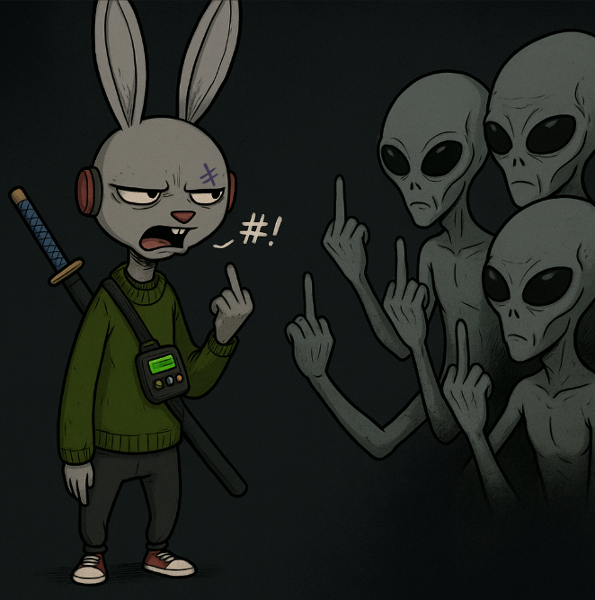
Respect Boundaries
If it’s creepy IRL, it’s creepy in the Dream. Full stop. Don’t cross the line.
Heavy material—torture, abuse, worse—should never pop up unless everyone signs off first (Session Zero is where you sort that).
Even if greenlit, keep it implied, fast, and way off center stage.
Dreams are about action, survival, story.
Not making your crew squirm.
Listen More Than You Flap Your Gums
Dreams are built by packs, not solo acts.
Everyone gets a voice—share the spotlight.
Lost?
Ask the Dream Master for more detail.
You’re never outta options unless you stop looking.
Veterans:
Lift the rookies up.
Play your character, not theirs.
Offer advice if asked—but don’t hijack another dreamer’s move.
You can't "win" or "lose" a Dream.
You can only make it worth remembering.
Treat the DM well
Good DMs hustle through blood, sweat, and tears for their crews.
Story arcs, quick improv, keeping the pulse alive—it’s all work.
Pay attention when the DM talks.
Distraction isn't just rude—it bruises the Dream.
Want to be a real one?
Rotate who brings snacks. Chip in on a book or a beverage. Or just say "thanks."
Simple gratitude hits harder than you think.
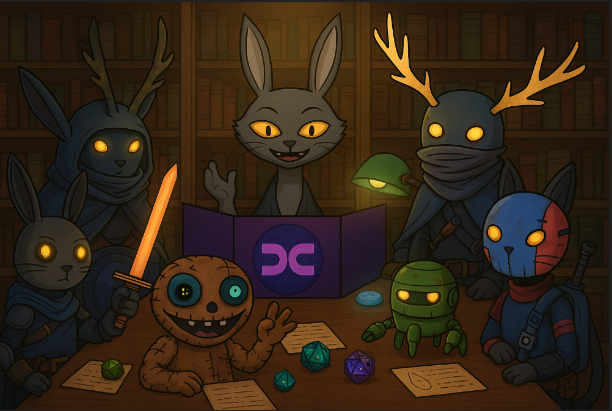
Drop the Digital, Embrace the Analogue
The city’s loud enough.
Keep tech minimal unless you're tracking your character.
Phones down, eyes up.
Better yet: Notebook. Pen. Scrawled battle plans in the margins.
Dream loud. Dream present.
Dream Together or Dream Alone
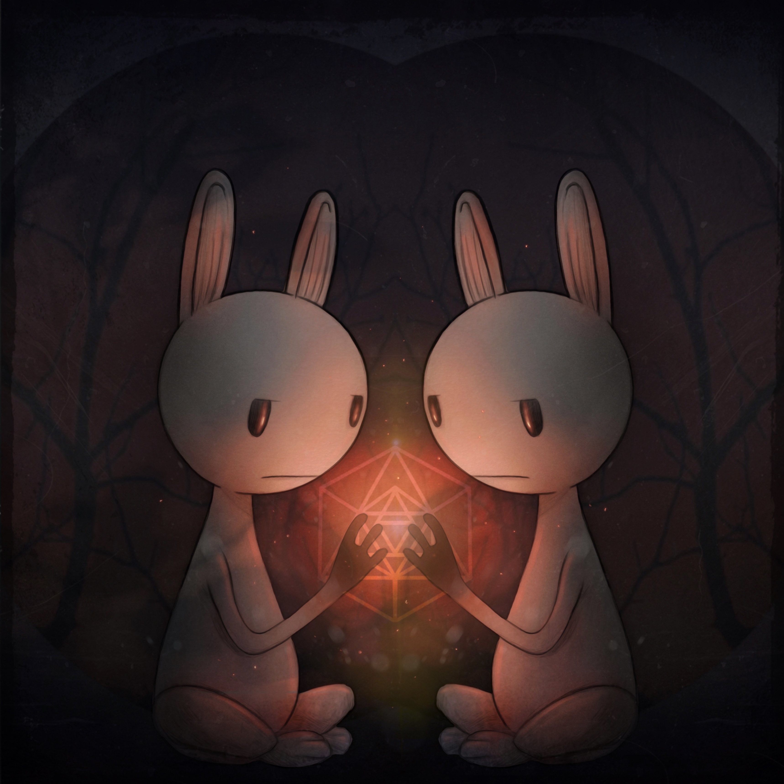
Nothing tanks a table faster than dreamers who treat the pack like marks.
Backstabbing, stealing, forcing moves on other PCs without permission?
Selfish. Lame. Dream-killing.
If you want conflict? Step out of character.
Ask permission first.
If they’re down—cool.
If not—back off.
Wreck the vibe enough times?
The pack has every right to show you the door.
Dreams run on trust.
If you can’t run with the pack, you’re dreaming in the wrong city.
Some Dreams are Darker...
You wanna run chaos? Burn block after block? Go full villain?
Fine—if the whole pack’s into it.
Handle that Session Zero.
Otherwise, read the room.
Don't turn a dream into a horror flick just because you can.
You wanna run a darker game? Pitch your own table.
Even the hardest Dream Masters deserve a shot at playing wicked.
Keep it Separated
Two voices live at the table:
- In character: You're your PC. Talking to NPCs and your pack. Making moves.
- Out of character: You're you. Planning. Clarifying. Strategizing.
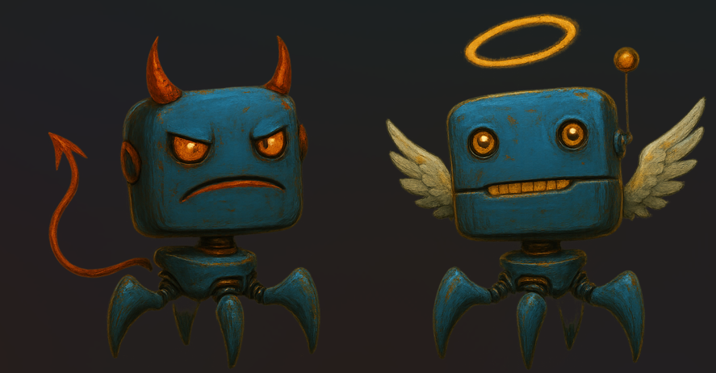
Keep the wall up.
Know things your character doesn’t? Don’t act on it.
Stay honest. Stay sharp.
The Dream’s better when nobody’s cheating the vibe.
Speak To Your Pack
Change your tone.
Throw a hand signal.
Do something to show when you're speaking in or out of character.
Confusion kills momentum.
Keep it clean and moving.
Leave Some Moves to Chance
Stuck? Split decision? Deadlocked plan?
Flip a coin/ROLL THE DIE!/Ask a chatbot.
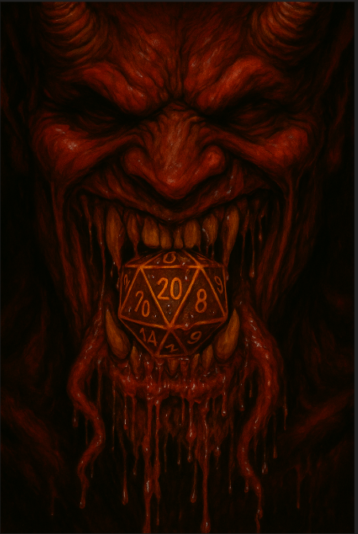
Whatever you do, respect the result and roll forward.
Momentum beats a dead stall every damn time.
Dream Mastery: What Dreamers should expect
The DM sets the pulse.
Locals. Battles. Chaos. Losses.
They're not here to crush you or play favorites.
They're here to make the Dream hit hard—and keep it fair.
Sometimes they’ll mess up.
A good DM owns it, makes it right, and keeps rolling.
Their word’s final.
But it should always be informed, honest, consistent—and clean.
More Good Times
Not every pack dreams the same.
Some play it tight. Some play it loose.
When friction happens—and it will—talk it out.
Take a break. Breathe. Reset the vibe.
Dreams are messy. Dreams are beautiful.
Time with your pack is rare and priceless.
Protect it.
The only real way to win?
Have fun. Together.
Dream Mastery
Every Dream needs someone to light the fuse. That’s you—the Dream Master.
You're not just the voice behind the curtain. You are the curtain. The smoke. The shadows in the alley.
You set the tone, build the streets, throw curveballs, and breathe fire into the frame.
You’re the storyteller, the scene-builder, and chaos coordinator.
You spin Dimm City’s razorwire threads into something raw, real, and just barely holding together.
Toss your crew into the blender and hit liquefy!
Whisper sweet death through a kacked driftkiller's cracked commlink.
Scoop their trauma from the muck and make them twitch.
Now stand back—’cause the bomb’s about to blow.
You play every lowlife, every beast, every storm creeping in off the skyline.
You decide what hits. What hurts. What haunts.
Most of all? You make every dreamer's choices matter.
Crank up the tension—then let it breathe.
When they win, make ‘em feel it.
When they fall, make ‘em remember.
You're not here to run a game.
You're here to make the Dream burn bright.
Core Elements
Dream Mastery ain’t just running the game.
It’s breathing life into the Dream—then handing the knife to your players.
Your job? Guide, don’t control.
Shape the chaos without strangling it.
Keep the world alive, twitching, and ready to bite back.
Balance prep with instinct. Structure with improv.
Let the table move with you.
Wanna run it right? Lock in on this:
- Talk loud, listen harder: Speak with confidence when you're narrating—but really listen when your players talk. Their ideas, fears, and chaos fuel the Dream.
- Flex your weird: Dimm City runs on strangeness. Lean into the bizarre. If it feels too odd, you’re probably close to gold.
- Keep your dreamers safe—but never too safe: Protect your players, not their characters. Let the city be lethal. Let them bleed. Just make sure the players always feel supported at the table, even when their PCs get wrecked.
- You seed the feed. They rewrite the world.
This ain’t your tale alone.
Listen + Respond
Dreams are a conversation—so talk less, listen sharper.
You paint the scene. They punch holes in it.
Riff off their chaos and make it BRUTAL.
You’re not here to crush your dreamers.
You’re here to help them set it on fire.
Empower their wild ideas. Back their plays.
Balance grit with grace—ACTION WITH AFTERMATH.
Got plans? Cool. But if the pack drops gold on the table?
Chuck the script. Ride the moment.
And if things stall?
Jump in, rattle the walls, and keep the Dream moving.
Focus on the Fantascape
Create immersion by turning game mechanics into vivid fiction. Avoid blunt mechanics like "You deal 4 damage" and instead paint scenes with sensory details, keeping the rules behind the curtain. The more you can weave the rolls and rules into the story, the deeper the dream will be for everybody at your table.
For example:
- Instead of saying “You rolled an 11, you dodge the blast,” you could say, “You dive behind a cracked ferrocrete pillar as the plasma spray explodes over your head, searing the wall black.”
- When a player scores a critical hit, don't just say "double damage"—say, “Your blade sinks deep into the enforcer’s side, the force of the blow dropping him to one knee with a wet grunt.”
- If a dreamer fails a Surreal roll while climbing, describe it as, “Your hands slip on the rain-slick metal rungs. Your foot scrapes for a hold, heart hammering, as you dangle above the alley’s neon smear a 100 meters below!”
- When players suffer a heavy hit, rather than "you lose 4 HP," paint it as, “The shockmaul slams into your ribs with a crackling thud, and you feel the jolt rattle your spine.”
- If a player uses Lucidity on a tough social roll, narrate it as, “You catch the flicker of doubt in the mark’s eyes, lean in, and press—your voice slipping through their defenses like a sharpened whisper.”
Bury the math inside the moment and build scenes that hit harder than the dice ever could.
Hit the Streets of Dimm City
Dimm City is a sandbox where your crew shapes the world. Let them build relationships, carve out a home, and impact the city meaningfully. Start with a setting, but let your dreamers fill in the gaps and evolve the story.
Building Your Dream
You’re the Dream Master. Your job?
Make the Dream bleed—and keep the red flowing.
Build a setting that breathes—grimy, loud, unpredictable.
Make it feel real enough to scream when your dreamers punch it.
Their choices? Should ripple, backfire, echo through the streets.
Start small. Think big.
A back-alley noodle stall. A haunted rail line. A fixer with two mouths.
Whatever it is—make it weird, make it wild.
Let dreamers reshape Dimm City as they dig deeper, push harder, break things.
Fuel the story with tension and temptation.
Give ‘em prey worth chasing—and something they pray doesn’t catch up.
Bait the trail with danger, mystery, and half-whispered lies.
Missing folks. Cursed tech. Broadcasts from places that shouldn’t exist.
Keep the Dream rolling—fast, raw, always one breath from collapse.
Nail the foundation, and Dimm City doesn’t just breathe...
It ENVENOMATES!
Where to Start? Dreams start small. Set the initial scene and adapt as needed. Even pre-written adventures should be personalized to keep dreamers engaged.
Example: The Dream kicks off in a rundown noodle stall buried deep in the Tech District, where the scent of burnt oil clings to everything. The Dreamers are low on credits, lower on luck, and a fixer slides into the booth with a dirty envelope. Inside? A battered data chip containing not only instructions for the mission and blueprints for Etherwave Transit Hub, but also notes about a forgotten access tunnel that leads directly into the corp HQ!
Directions to plant a tap on a corporate server—but first, they have to cross half the city without getting ghosted.
Region: Define your region with two points of interest. Populate it with a few NPCs and details that are important to your dream and make the world feel alive and reactive. Let your Dreamers fill in the rest and have their back if they are having trouble rising to the occasion.
Example: To reach their target, the Dreamers have to traverse Etherwave Transit Hub, a sprawling, flickering maze of cracked terminals and locked turnstiles.
- Points of Interest: "Last Bite" (a shanty soup shop with black market supplies) and "Drift Gate 7" (a busted platform rumored to lead into forbidden zones).
- NPCs: Ticker, a twitchy vendor who trades "underground" maps for batteries; Wraith 17, a merc who works both sides of the line.
Basics: Decide how magic, technology, danger, and daily life function in your world. These choices guide your responses to player actions and questions. Dimm City proper has established cannon for these elements, but you could change it or create a place in the monoverse that's completely your own to dream in.
Example: In this stretch of Dimm City, tech glitches constantly, magic flickers unstable, and the cops don't patrol anymore. Travel is dangerous. Trust even more so. Etherwave’s old automated security is still online, a bit corrupted, AND SUDDENLY LOCKED DOWN!!!!
Hope and Fear: In Dimm City RPG, balancing hope and fear is a key any DM can use to create a dynamic and engaging story. Hope represents the possibility of a better future–a safe haven, a rare discovery, or a hard-fought victory. Fear, on the other hand, embodies looming threats–a powerful adversary, a collapsing structure, or a betrayal from a trusted ally.
By weaving both elements into the narrative, you create a sense of tension and unpredictability that keeps players invested. NPCs can embody this balance too: a revolutionary leader may inspire hope while also drawing the ire of a powerful corporation, or a safe refuge might harbor dangerous secrets.
Use hope to motivate players, giving them something to fight for, while fear keeps them cautious, aware that failure has real consequences. This interplay shapes the atmosphere of Dimm City, making victories feel earned and setbacks hit harder.
Hope: Tapping that server could pay off some the Dreamers' debts, buy them real breathing room, maybe even their own bolt hole in Tetherpoint.
Fear: Someone—or something—is hunting passengers trapped in the Hub. An old corp experiment, let loose when the lockdown triggered? A augged-out mercserc with a killist? Worse yet, one of the Dreamers might be its next target!.
Adventure Hooks: Adventure hooks are the sparks that ignite a session, pulling dreamers straight into the story. Offering multiple hooks gives players a variety of paths to chase down—wanted posters, desperate NPCs, brewing gang wars, or eerie rumors all work to set the Dream on fire.
Since not every hook will land, always have backups ready to steer the story in new directions without losing momentum. A good hook should be intriguing, actionable, and personal, making players feel like their choices shape the world around them.
Missing persons. Heists gone sideways. Cursed whispers about some artifact. A solid hook keeps the Dream alive—raw and racing forward.
If the luminaries decide the mission ain't for them, the fixer gets up to leave and barely makes it out the door before the pack hears a muffled "THUD!" Upon investigation, the noise was a kamikaze drone detonating on the poor skek they just met with just as he poked outside.
Running the Dream
In Dimm City RPG, the Dream Master balances structure and spontaneity to keep players immersed and engaged. By blending clues, challenges, and consequences with vivid scene descriptions and smart dice use, the story stays dynamic and unpredictable. Adaptability is key – let players’ choices and input shape the world while guiding the dream toward exciting and meaningful moments.
Clues, Challenges, and Consequences
To keep the story moving and players engaged, every scene in Dimm City RPG should present opportunities for discovery, difficulty, and impact. Clues lead players toward new plot threads, challenges make successes feel earned, and consequences ensure that actions leave a mark on the world. By weaving these elements together, you create a dynamic narrative where choices matter and the world responds in meaningful ways.
- Clues: Provide hints that guide the story forward. Adapt to what players show interest in, even if it wasn't in your original plan. For example, while investigating a warehouse, players might find a torn fabric with an unusual symbol. If they show interest, the DM can introduce a local gang member who recognizes the mark as belonging to a rival faction.
- Challenges: Introduce obstacles to make victories more rewarding. These could be puzzles, combat, or moral dilemmas. For instance, to gain entry to a secure compound, players must either hack a heavily encrypted door or convince a paranoid guard to let them in, each with unique risks and rewards.
- Consequences: Every action—or lack of action—shapes the world, keeping the monoverse raw and reactive. Take down a local boss, and rival gangs tear the streets apart. Spare them, and maybe you earn an uneasy ally... or a future knife in the back.
Descriptive and Flexible Scenes
In Dimm City RPG, crafting vivid scenes keeps the Dream alive. As the Dream Master, you paint the world in gritty sensory detail while staying loose enough to let dreamers bend, twist, and shape it through their choices. By balancing raw description with flexibility, you build a city that feels alive—and reacts when players poke it.
- Highlight urgent details and use sensory language: Ground dreamers in the moment with sights, sounds, smells, and textures. A derelict nightclub isn’t just broken neon and stale bass—it’s the ozone tang of busted wiring, the stick of syrupy liquor on your boots, and the deep vibration rattling your bones. Use details that hit the senses and set the stakes.
- Let dreamers shape the scene: Stay open to player creativity. If a dreamer wants to knock over crates to block a chase, let it ride and improvise the fallout. Encourage players to invent secondary details too—naming street stalls, grime-slick bars, or twitchy food vendors. The more fingerprints they leave on the world, the more real it feels.
- Offer practical elements that match dreamer abilities: Seed scenes with hooks that match the pack’s strengths. If a wirephreak’s in the squad, toss in a sputtering security kiosk or some exposed cabling. Give the dreamers toys to play with that make sense for who they are—and watch them get inventive.
ROLLING THE DIE!
In Dimm City RPG, rolling the die isn't just a game mechanic – it's a moment of tension that drives the story forward. The Dream Master should use dice rolls strategically, only when chance genuinely adds excitement or uncertainty. By leveraging the "Lucid" and "Surreal" rules, you can reward clever decisions and highlight the consequences of risky choices. Streamlining NPC rolls keeps the game flowing, allowing for quick, impactful outcomes without bogging down the narrative.
- Roll only when chance adds excitement: If a character is casually picking a lock in a safe environment, no roll is needed. But if they’re trying to crack the lock while guards patrol nearby, rolling adds tension and stakes.
- Use the "Lucid" (roll two, pick the higher) and "Surreal" (roll two, pick the lower) rules to reward smart play or penalize mistakes: After a dreamer makes a clever plan to ambush an enemy, grant Lucidity for their next attack. Conversely, after a failed negotiation, make their next social roll Surreal to reflect shaken confidence.
- For NPCs, streamline rolls and use preset consequences for tough choices (when it adds to the scene): If a rival gang member tries to sneak up on the PCs, roll once to determine their level of Stealth. A high roll means the gutterpunk gets the drop, while a low roll results in the party spotting their skullduggery. Use a simple success/failure threshold to keep the scene moving.
Engaging Dreamers
Dreams stay alive when the players feel like the world moves with them. As Dream Master, your job isn’t just to run scenes — it’s to keep the blood pumping, the streets shifting, and the stakes rising. Good hints, quick hooks, dynamic rolls, and sharp consequences keep the Dream moving and the pack locked in.
- Hints and Hooks: Set the bait. Give your Dreamers clear signals and options to keep 'em thinking, not stalling.
- Signal danger: Don't just drop enemies on them. Warn them first: a street tagged with rival gang signs, a shopkeeper nervously closing early. Dreamers decide if they wade in anyway.
- Seed roleplay: Drop in twitchy NPCs, shady rumors, and cracks in the story. A scared shopkeep mentioning a robbery? That's not just fluff — it’s a hook in disguise.
- Nudge creative play: If they stall, offer 2-3 ways forward. Facing a locked vault? Hack it, find the key, or strip some wiring. Let them riff from there.
- Managing Surprises: Players will dig into random background details. Let 'em. Sometimes that throwaway street performer they’re stalking? Turns out he's a corporate spy trying to disappear. Improvising off their curiosity keeps the world feeling alive.
- Balance your descriptions to keep things tight: Small areas or minor scenes? Short, punchy descriptions. Big moments? Layer it up — sights, smells, heat, grime. If a player names or adds something cool to the world, roll with it.
- Rolling for Rivals: Only roll dice for NPCs when it directly affects the Dreamers.
Example: A gang boss in a standoff might roll to see if their minions hold firm or bolt when the heat rises — not to see if the boss "looks scary." Keep it moving. If an NPC screws up, have quick setbacks — a thief drops stolen loot or a guard hesitates. No drawn-out escape scenes unless it’s vital.
- Consequences of Failure: Dreamers should feel every win — and every stumble. Failure doesn't always mean instant death. Sometimes it’s guards growing suspicious. Sometimes it's a gang chalking up a score. Repeated mistakes? Make the world squeeze tighter: a faction that shrugs off a few insults might eventually put a hit out after one too many slights. The more consequences snowball, the sharper the city feels under their feet. Don’t just count the wounds—show 'em where it hurts.
Give It All Ya Got
Running dreams in Dimm City is all about collaboration, creativity, and keeping the game dynamic. As Dream Master, you hold the keys to the monoverse—guiding your dreamers, adapting to their choices, and building a story where every roll of the die brings new possibilities.
DIMM CITY IS ALIVE
In Dimm City RPG, the city itself should feel like a living, breathing entity to your dreamers, filled with diverse and unpredictable characters. From commoners struggling to survive in the sprawling urban chaos to legendary bosses ruling the underworld, every NPC adds texture and danger to the story. Managing NPCs efficiently while keeping them engaging helps maintain immersion and challenge without bogging down gameplay.
This guide is your back-alley blueprint for whipping up gritty, unforgettable NPCs without getting tangled in red tape. Keep it lean, keep it mean—these rules are all you need to bring your creations to life, slotting seamlessly into your campaign without dragging down the action.
NPC Core Stats
NPCs in Dimm City are designed to feel distinct yet manageable, with streamlined stats to keep the game moving. These core stats reflect an NPC's durability and threat level while ensuring they remain grounded in the story's brutal realism.
Hit Points (HP): Measures how much damage an NPC can take before dying. Operators and tougher NPCs have more HP, while Fodder have minimal HP.
- Example: A gang enforcer (Operator) might have 4 HP, able to take a couple-few hits before going down, while a street vendor (Fodder) has just 2 HP, making them fairly vulnerable in a fight without any extra traits or abilities to keep them alive.
Damage Rating: Indicates the amount of damage an NPC deals with a basic attack. The higher the rating, the more dangerous and formidable the NPC is in combat.
Damage comes in a variety of types: acid, cold, fire, force, shock (lightning or electricity), necrotic, radiant, sonic, or trauma (psychic). Hand-to-hand combat usually inflicts bludgeoning (like a club or weighted chain), piercing (a stiletto or spear), or slashing (an axe or sickle).
NPCs die immediately when reduced to 0 HP unless saved by the PCs, emphasizing their expendable nature compared to player characters. This keeps combat gritty and impactful.
Traits: Traits are unique abilities or characteristics that set an NPC apart from the average bystander. They add flavor and danger, making encounters more unpredictable.
Example: A Street Shaman might have the Phase Shifter trait, allowing them to move through solid walls, while a Spore Bruiser could be Berserk, dealing more damage and reducing damage they take when missing hit points.
Traits can include movement abilities, resistances, or special attacks, giving NPCs a memorable edge in combat.
Equipment: Gear can make or break an NPC's threat level. Standard Fodder might carry basic weapons like rusty pipes or broken bottles, while Operators and Masters may wield specialized gear.
Example: A Tech Scavenger might carry a Pulse Pistol (force damage) or wear Patchwork Armor (reduces shock damage by 1).
Equipment should match the NPC’s role and enhance their unique traits or combat style. Dream Masters can improvise gear to fit the situation, keeping it grounded in the city’s brutal reality.
Cybernetics: Cybernetic enhancements give NPCs a distinct edge, enhancing their combat potential or utility. Whether it’s brute force upgrades or precision augmentations, cyberware makes enemies more versatile and dangerous.
Example: A H.O.U.N.D. SercDog might have Bite Augmentation (deals piercing and shock damage), while a raccoon sporos Data Runner could sport Optic Upgrades (ocular augmentations with mods that allow them to see AR/VR layers and into the UV spectrum).
Cybernetics should match the NPC’s role and purpose, making them feel integrated into the city’s tech-driven brutality. Dream Masters can improvise cyberware effects to fit the scene, keeping it gritty and grounded (more info on this in the back of Chapter 2).
NPC Types
NPCs aren’t just filler–they shape Dimm City and the greater monoverse, create conflict, and keep the story alive. Never underestimate any NPC though as even the punkiest NPC can surprise dreamers. NPCs fall into three main types from weakest to strongest: Fodder, Operators, and Masters. Each type has distinct roles, strengths, and weaknesses, giving you flexibility when designing encounters. From disposable street rats to brutal enforcers and legendary bosses, NPCs are the heartbeat of the city’s chaos.
Fodder
Everyday creatures, not usually a combat threat but can become dangerous in mobs or with special roles (e.g., a local influncer with a cult following).
In Dimm City, not every threat is a horrific monster or a deadly Augmerc ready to shoot first. Sometimes, it’s just the everyday creatures – the Fodder.
Fodder are common, fringe threats – barely worth noticing on their own. But with the right numbers, traits, or upgrades, they can turn lethal fast.
Fodder can be desperate civilians, low-tier gang members, kamikaze drones, or even mutated vermin. They’re not tough or deadly solo – the danger comes from quantity or context. A cult leader with a mob of fanatics? A problem. One VR fiend taking a bad HeadTrip? Manageable. A shantytown full of Dimm Citz, minds rotted and rage boiling from toxic fumes? That’s pure nightmare.
When Fodder turns hostile, it’s not just one problem – it’s a swarm, a riot, a wave of chaos that’s almost impossible to outrun.
HP 2-Damage 1
An example of Fodder is a common Patchhead:
Patchhead
See a Patchhead comin’ at you, you best move. Ain’t no reasoning with ‘em – minds melted and muscles twitchin’ like they’re about to burst. You can smell the burnt plastic and sweat long before they get close.
2 HP-1 Damage
Fodder-Usually Small to Medium
Traits
Bloodlust: Patchheads add 1 to their Damage value whenever they hit a creature that is currently missing Hit Points.
Equipment
Patchheads will sometimes carry makeshift weapons like weighted chains, shivs, or knuckle dusters for brutal close-quarters combat, along with junk shields/crash helmets for basic protection. May also have a Shadowbit token with no more than 50-100 Dream Creds worth of crypto on it along with some other sketchy paraphernalia
Cybernetics
UniArm 100/Redi-Mobile Cyberleg/RedEye Optical Prosthetic (could be just one or all)
Operators
Tougher opponents that serve as grunts or support for their Master. Deadly in small groups or with traits that allow for tactical positioning.
In Dimm City, not every threat is a mindless mob or a lone rogue. Sometimes, it’s the trained, equipped grunts – the Operators.
Operators are tougher, more skilled threats, often working as part of a crew or guarding someone important. Unlike Fodder, they’re not just brawlers – they’re specialists. One alone is a problem, but a small squad? That’s coordinated chaos.
Operators excel in tactical situations, holding positions, rigging traps, or just being their master's hands. They’re not cannon fodder – they’re muscle with a purpose.
HP 4-Damage 2
An example of an Operator is a Grease Monkey:
Grease Monkey
You need something fixed, hacked, or turned into a weapon? Find a Grease Monkey. You need a battlefield rigged with enough traps to make a squad of cyborg mercs cry? Definitely find a Grease Monkey
HP 4-Damage: 2
Operator-Medium
Traits:
Climb: Grease Monkeys have the ability to scale walls and other vertical surfaces with the same speed as they would otherwise move.
Equipment
Monkey Wrench: A handheld device that can be used once per encounter that scrambles wireless communications and disrupts cybernetic signals within a small radius. When activated, it forces all augmented targets nearby to perform a SysCheck at the next higher difficulty level, as the jammer destabilizes the delicate balance between biological and cybernetic systems.
Cybernetics
UniArm 100 Cyberarm w/Optalanges TechMech kit and Smuggler's Stash Level 1, Light Blaster Pistol
Masters
Major characters with significant influence. These NPCs often require strategy and teamwork to defeat and may have additional special abilities or resistances.
In Dimm City, it’s not the random street trash or even the hired muscle you gotta lose sleep over — it’s the Masters.
Masters are the major players: ganglords, rogue AIs, nightmare beasts that built empires out of blood, credits, and raw fear. They're not just strong — they’re forces of nature. Taking one down isn’t a fight; it’s a war. Expect strategy, teamwork, and a little divine luck just to walk away breathing.
They hit harder, survive longer, and come stacked with dirty tricks nobody warned you about. You don't beat a Master by swinging harder — you outthink 'em, outmaneuver 'em, and pray you don’t run out of moves first.
HP 10-Damage 4
An example of a Master is Undertow:
Undertow
Ain’t no one sees Undertow comin’. One minute, you’re walking the flooded alleys, thinkin’ you’re safe. Next thing you know, the water’s draggin’ you under, and you hear that low, rumbling laugh from somewhere in the dark. Undertow don’t kill quick – they likes to watch you struggle before you sink!
HP 10-Damage 4
Master-Medium
Traits:
Amphibious: Undertow can breath water or air and swim as fast as they move on land.
Brineborne: Undertow regenerates 1 Hit Point per round spent in salt water up to their max of 10.
Stranglehold: Undertow can attack one nearby target per round and grapple them on a successful hit, dealing 4 damage, locking their limbs, and preventing movement. Constricted targets must ROLL A DIE! (11+) to break free or suffer Surreal rolls anytime they ROLL A DIE! while grappled. Undertow maintains control for free, dealing 1 damage each round while the target remains trapped. However, while holding a target, Undertow can only make one basic attack against any other target within reach.
Swim: Undertow has the ability to move through water with the same speed as they would otherwise move on land.
Size Modifiers
Size affects both hit points and damage output, scaling up or down based on how physically imposing the NPC is:
- Tiny: -1 HP, representing small or frail creatures.
- Small/Medium: No modification; the default for most humanoid or animal NPCs.
- Big: +10 HP, +1 Damage. Ideal for large beasts or physically imposing foes.
- Huge: +20 HP, +2 Damage. Represents truly massive creatures like dragons or mechs.
- Colossal: +40 HP, +4 Damage. These are the titanic creatures that dominate the battlefield.
The following's an example of how to apply the guidelines detailed above on a bigger sized foe:
Quick NPC Example: Chromejaw
Enforcers come in all shapes, but Chromejaw’s one of the biggest and baddest across all five districts.
Part animal, part machine, he never backs down from a challenge—and almost never loses. A mad dog built for mayhem, Chromejaw uses his pulse gauntlets to hurl rivals into twisted metal and exposed rebar, letting the wreckage do the work his fists don’t finish.
When he’s really pissed off?
He skips the show—and just chews his mark in half while pounding them into the pavement.
You can reason with him.
But it’s not something anyone’s survived long enough to recommend.
Base Stats:
- Hit Points: 10 (Master) + 10 (Big) = 20 HP
- Damage: 4 (Master) + 1 (Big) = 5 Damage
This all adds up to create:
Chromejaw
You hear the grinding of metal on metal before you see him – a towering mastiff sporos wrapped in salvaged armor, his cybernetic jaw clenching like a steel trap. When Chromejaw shows up, you’ve either crossed a line or stepped into the wrong part of town. Either way, you’re not leaving unscathed.
HP 20-Damage 5
Master-Big
Traits:
Ferocious: Chromejaw gains an extra attack when their hit points are dropped to half their maximum.
Pulse Gauntlets: Chromejaw's heavy, piston-powered punches knock targets back into a nearby area. When struck the target must ROLL A DIE! (11+) or be thrown bodily by the force of the blow. If thrown into solid objects or off of ledges, worse things can happen (DM's call).
Scrapcoat: Chromejaw's armor makes him resistant (takes half damage-round up) to bludgeoning and slashing damage.
Steeltrap Bite: On a successful hit, Chromejaw can clamp onto a target, dealing 5 piercing damage and preventing escape until the target ROLLS A DIE! (11+) to break free. Chromejaw maintains control for free, dealing 1 piercing damage each round while the target remains in his maw. While holding a target however, Chromejaw can only make one basic attack against the target he's mauling, but that attack is LUCID!
Encounter Difficulty
Balancing encounters is key to maintaining challenge and fun. The difficulty rating of an encounter is calculated by comparing the total HP and damage potential of the NPCs against the party's total HP:
Deadly Fight: If the NPC difficulty rating is equal to or higher than the party's total HP combined, the fight may result in serious casualties or even a total party kill.
Challenging Fight: If the rating is 50–80% of the party’s HP, it presents a tough but fair challenge where smart tactics and resource management can lead to success.
Take Chromejaw, for example—a mid-tier bruiser with 20 HP and a base damage of 5. On paper, he might not look like a death sentence for a party of four. But once the fight starts, his Ferocious extra attack at half HP, the lockdown effect of Steeltrap Bite, and the knockback from his Pulse Gauntlets quickly turn the battlefield into a war zone. If the party isn’t prepared or positioned well, his abilities can do far more harm than his stats suggest. Add a few more Operators or a swarm of fodder, and things get deadly in a hurry.
That said, knowing how tough a fight is on paper only gets you so far. The real danger—and drama—comes from what the NPCs can do. A smart move, dirty environmental factor, or brutal ability (like Ferocious in the example above) can shift the tide faster than raw numbers ever could. So let’s dig into how to give your NPCs just enough bite to matter, without bogging yourself down in prep you’ll never use.
Traits
When building NPCs, it’s easy to overload them with abilities. Don’t. You’ll end up wasting time on moves that never hit the table. Start lean. Give them what they need to make the fight interesting, and leave room to improvise if the story calls for it. An NPC doesn’t need to do everything—just enough to leave a mark. If a sudden ability fits the moment, drop it in. That’s your call as the DM. Just don’t go overboard—players can get burned out on enemies who always have one more trick up their sleeve. Or maybe they’ll love it. You’ll know when to push.
For now, treat the traits in this section as starting points—not a full catalog. Feel free to invent your own simple, balanced traits to match your NPCs’ vibe, style, or weirdness. Dream Masters are encouraged to build what they need in the moment; if it’s clear, flavorful, and not overpowered, it’s fair game. We’ll be releasing official, canon traits over time on our website (dimm.city) and through our social media, so keep an eye out for fresh inspiration as the world of Dimm City grows.
Climb
Climbers can scale walls and sometimes vertical surfaces at their normal speed. How well they handle tougher climbs? That’s up to the DM.
Amphibious
Creatures with this trait can breathe water or air and swim just as easily as they move on land.
Protection
Some creatures are unaffected by specific elements, damage types, or harm altogether.
- Immunity: Takes no damage from a specific type or can't be affected by conditions like sleep or mind control.
- Invulnerable: Cannot lose hit points – usually a god or other unstoppable force.
- Resistance: Takes half damage from a specific type, like fire or non-magical attacks (round down).
Beguiling
This creature can mind control a target within range, making them view the NPC as an ally. The effect lasts until the end of the encounter or a short while, ending immediately if the NPC harms the target or orders self-harm (DM’s call). The DM may also require the target to ROLL A DIE! (11+) that gives them a chance to resist control.
Close Enough
Creatures with this trait deal 1 damage of a specific type (e.g., Close Enough: Fire) to anyone who gets in reach or starts their turn there. Damage types vary – could be fire, cold, poison, or whatever fits their vibe.
The creature can attack or move twice during its turn instead of just once.
Special Ability
Give the creature a unique skill from one of the eight PC specialties or invent your own. Masters can have a handful of abilities from their specialty. NPCs don’t need augment points – just decide how often they can use their powers (DM's call).
Locked, Loaded, and Ready to Rip
Traits give your NPCs identity, danger, and just enough weird to make dreamers sweat. Don’t just treat them like stat blocks—treat them like storytelling tools. A single, well-placed trait can shift the tide of a scene faster than any hit point tally. With the right combination of moves and motives, your NPCs will feel like living threats, not cardboard cutouts. Now let’s talk about how to put those threats into motion without letting combat grind your dream to a halt.
Combat Guidelines
Combat in Dimm City should hit hard, move fast, and tell a story. A good fight doesn’t just drain hit points—it creates moments your players will remember. To keep the action fluid and engaging, follow these principles:
- Keep NPC actions clean and clear. Most of the time, NPCs should do something that makes sense fast. Simple strikes, tactical positioning, or triggering a signature trait—these are enough to drive a fight without bogging it down in layered mechanics. Save the complex stuff for powerful masters or story beats that need impact.
- Don’t overload NPCs with a dozen tricks. One or two strong traits or abilities is all most need to stand out. Too many powers turn combat into a chore to manage and a blur for your dreamers. Focus on what defines the enemy—whether it’s brute strength, a nasty gadget, or some unholy resilience—and build around that.
- Improvise when it adds to the moment. Got a cool idea mid-fight that would make the scene more brutal, dramatic, or fun? Drop it in. But keep it fair—don’t blindside your players with unexpected nonsense that feels like cheating. If you’re going to twist the rules, make it feel earned or foreshadowed.
- Let the scene breathe. Use the environment, tone, and tempo of the moment to keep things alive. Let some fodder get slammed through neon signage and die an electric death. Choose as a hard choice to have a dangerous operator drop their signature weapon into a drainpipe. Combat isn’t just math—it’s a chance to turn every turn into a cinematic beat.
- End the fight before it gets stale. If the outcome is obvious or momentum is dying, cut it short with a strong finish. Have the last enemy run, surrender, or trigger a new threat. Combat should never drag unless there's a reason for the drag.
- If the players walk away from the table quoting something that happened in that fight? You did it right.
Your Dream’s Just Getting Started
The line between dream and nightmare is razor-thin and always shifting in Dimm City. It doesn’t wait for permission. Whether you’re stepping into the dream as a streetwise survivor or shaping it behind the curtain as Dream Master, this chapter gave you the foundation to play hard, play fair, and make every moment matter. Dreamers now know how to move, act, and roll with purpose. Dream Masters have the blueprint to build scenes, set stakes, and push the story without crushing it under control. The dream lives and dies on collaboration—on knowing when to guide and when to get out of the way. The city’s alive. It's watching. And every choice you make—on either side of the table—sends ripples through the sprawl.
Keep it lean. Keep it mean. Keep dreaming.
Dimm City & the Monoverse
DimmC Cosmology
Existence is a big, complicated place full of wonder, adventure, and danger. Every dream you have with your crew makes the world your PC's live in that much bigger and deeper. Dreams don't have to start in Dimm City at all, nor does your party even need to go there. This section discusses the basic structure of existence in the dream and how each are unique and different. Feel free to Explore the universe and create stories about some new places not detailed here to make the world Dimm City exists in your own!
Each time a group of dreamers sits down to dream together, they create a new part of the monoverse. That means every story told is connected. Characters can even travel between dreams if given the chance. You can also have as many characters as you like. Each will have a different skill set and vibe if you're doing it right.
The Monoverse
You exist in one substantiality that is but one in an infinite number of different base realities. The monoverse encompasses that and so much more. Just accept that the monoverse is everything you know times infinity and go take a walk or something...
Substantialities
A substantiality is a distinct realm or dimension that constitutes part of the monoverse. Each substantiality has unique physical, magical, and metaphysical properties, and together they form the cosmology of the Dimm City RPG. The substantialities are the DM's to use as settings for adventures, homes for deities and powerful entities, explanations for magical phenomena, and points of origin for a variety of threats or NPC species.
Base Reality
Base reality is the substantiality most beings in the monoverse are born into. It is the realm of conscious existence — the ordinary residents of space, time, matter, and energy. Dimm City is outside of it, but there are many different beings from countless different Base Realities residing in the five districts or the spaces in-between.
There are infinite numbers of base realities in alternate possible universes filled with an unfathomable number of different lifeforms and horrors. Yet again, it's best not to think about it too much.
The Mirror
Each part of base reality has a corresponding backstage area that is a dull replica of the real thing. The real terrifying part of this realm is the parts of it that don't have a counterpart in the world it reflects. This is a place of nightmares, only to be intruded into with great haste to go from point A to B. Those that linger here rarely make it back out. Those that do are usually changed forever.
The Backplane
The Backplane connects every substantiality to each other through wormholes. These inter-dimensional tubes flow through its shadowed void, and if one is privy to the magic and science behind them, they can open them and use the gates to their advantage.
Voyagers into the Backplane perceive it as a murky space, crisscrossed by a myriad of multicolored tubes that illuminate the surrounding area and blaze randomly with intense flashes of bright light as travelers use the conduits.
Movement in this substantiality is all in your mind as you will yourself where you wish to go. Time here is nonexistent but continues to push forward in other parts of the monoverse. Returning to a home realm can be quite a shock as the ravages of time catch up in an instant to the traveler.
The Backplane connects to millions of worlds in Base Reality, The Mirror, and all those substantialities to the Infinitum. Masses of individual linkages bundle together and branch off to connect all parts of the monoverse. Following these "flows" will inevitably bring you to a massive amorphous gateway that leads to a random point in the substantiality that the conduits dump into. Some randos can bend these doorways to scry precise locations in that plane and travel there. Most using this type of gateway just jump in blind and improvise when they land.
Many different beings dwell here. Some live in groups or small holds based on the body of a dead god floating in the void, some in ships that roam looking for any opportunities they may come across, while others powerful or even divine claim this plane as their own. Beware and explore carefully.
The Infinitum
The Infinitum is an endless number of realms each with its own physics, environment(s), creatures, and technology. It is the source of the magical energy that weaves through all of the monoverse's endless realities and that power is amazingly strong here. It is a collection of diversely different dimensions where the most horrifying and stunningly beautiful existences stand side by side.
These planes are places of myth and legend, known only by a few living in any one base reality. Conversely, many are fairly well-known, if not familiar, in DimmC as visitors from those far-flung domains do business and sometimes immigrate to the metropolis in the mist to settle for life.
The Ether
Base reality is nothing but a combination of elements. When fire ignites, it's brought forth from air, spark, and fuel. All of these elements flow from the misty tendrils of The Ether.
This substantiality connects the multitude of base realities to the elements that created them. Lakes of fire, endless oceans, and other elemental realms exist on the periphery of the ether. It feeds base reality like a mother feeding its child. Floating in the brume are pockets of base reality that have formed naturally or have lost their mooring and slid into the ether.
Dimm City
Dimm City is an example of this last type of pocket dimension. It is comprised of five such realms that have haphazardly (or purposefully) linked together. They connect with a shallow mist that allows citizens from one district to visit another if they know it well. Those that don't may find themselves in the deep clouds, wandering aimlessly without a guide.
Time is also a very odd phenomena in the five districts. Clocks and watches are useless as some are fast and others slow, with some stopping completely. This phenomenon is an issue with individual perception, not time itself. The realm obfuscates a body's internal clock while the odd flow of space-time in Dimm City compounds that anomaly greatly. Units of exact time don't register with the average citizen, as that language is virtually meaningless.
The Dark
The Dark is a district of Dimm City lining the inside of a massive gravity well. Gravity pulls outward, so residents live on the walls, and looking "up" is actually looking "across." The district's architecture varies from opaque glass skyscrapers to rough-poured ferrock hives, often adorned with horrific gargoyles and murals. The true art lies in the IR and UV spectrum, revealing decorative hieroglyphs, scenes of destruction, and AI's dreams and nightmares.
At the center of this urban vortex stands The Pharos, a column piercing from the depths into the gloom. It absorbs light as you approach and serves as the residence of Daemon, the autocratic ruler of Dimm City. His true nature is shrouded in rumor—alien, dark sporos, android, or AI—but his rule is absolute.
The population is a mix of AI, aliens, sporos, and outsiders, most of whom are up to no good. Yet, amidst the chaos, rebel cells, vigilantes, and small bands of heroes strive for a better future.
The Entertainment District
The Entertainment District, or EntD, is the hedonistic heart of Dimm City, where every whim and fantasy can be indulged. The air is thick with a perpetual haze, neon lights slicing through the mist with invitations to pleasures both mundane and exotic. The streets are alive with the chatter of all five districts, a cacophony of languages and species blending together.
Cats are the predominant sporos here, their sleek forms and sharp eyes watching every transaction, every whispered secret. They move through the alleys and arcades with an easy grace, acting as guides, dealers, and sometimes predators. Other inhabitants flow through as well—stressed-out revelers, interdimensional tourists, and locals—each seeking their own slice of paradise or perdition.
From hyper-realistic VR adventures that let you live a dozen lifetimes in a night, to neon-lit clubs where gravity shifts to the beat of the music, EntD offers every distraction. Those with deeper desires can find clandestine dens where sins of the flesh are traded like currency, or backroom games where reality itself bends to entertain the wealthy and the desperate.
Anything is possible with the right connects and enough creds, but beneath the district's vibrant exterior lies a labyrinth of influence and vice. EntD is a place where fortunes are made, hearts are broken, and the line between pleasure and peril is always just a step away.
The Archive District
The Archive District, often called The Ark or ArkD, is the crumbling heart of knowledge in Dimm City. Once a thriving center of education and information, it now suffers from a dwindling population, decaying infrastructure, and a near-total lack of public funding. The academies, universities, and libraries that remain are left to fend for themselves, each institution responsible for its own upkeep and repairs. This isolation has bred fierce competition, a vulnerability that Daemon and his minions are all too eager to exploit.
Scholars and academics from across the monoverse still gather here, drawn by the promise of rare knowledge and ancient secrets. They sift through hologram projectors, alien manuscripts, and stranger forms of information storage—data crystals that hum with forgotten songs, murals that encode histories in ultraviolet, or psychic echoes trapped in obsidian orbs. Nearly any subject can be studied here, from esoteric arcana to hard sciences, but access depends entirely on your connections and the resources you're willing to part with.
The district is a labyrinth of ruined halls and dusty archives, where scholars barter in favors and currencies both conventional and arcane. Shadows haunt the abandoned wings, and opportunists prey on the desperate. Despite this, the Ark remains a beacon for those who still believe that knowledge is power, a stubborn ember refusing to die.
One of the district's most ambitious projects is data recovery. When the current administration purged the city's network, entire vaults of history, technology, and culture were lost. Now, archivists and hackers alike toil in the depths, combing through corrupted files and fractured servers, hoping to reclaim the city's forgotten past before it is lost forever.
The Tech District
The Tech District is the pulsing economic heart of Dimm City, where innovation meets industry and commerce thrives beneath a sky of electric haze. The district is a maze of research and development labs, factories both colossal and clandestine, and corporate offices where deals are made and futures bought. Every block hums with activity as assembly lines whir, and experimental tech spills out from glass-fronted labs into the hands of those who can afford it—or steal it.
Monkeys are the dominant sporos here, their agile forms perfectly suited to the district's unique architecture. While standard stairways and elevators are present, most buildings also feature a complex vertical access system—a network of ropes, rails, and pneumatic lifts that wind through the district like veins through flesh. The monkeys swing, slide, and leap through this system, turning commutes into parkour performances. It's more than just a practical means of getting around; it's a break from the monotony, a small thrill in a world where most of their hours are sold to the highest bidder.
The Tech District is a place of stark contrasts. On one street, you'll find glass towers filled with cutting-edge innovators pushing the boundaries of reality, while around the corner, ramshackle workshops churn out counterfeit tech and black-market mods. Beneath the shiny surface, a current of competition and corporate espionage runs deep, and many of the district's brightest minds live double lives as hackers, thieves, or mercenaries for hire.
Here, progress is measured in lines of code and prototypes built in fulldark. The district offers hope to those who can keep up with its pace but swallows those who can't. For the monkeys of Dimm City, each new day brings the chance to climb a little higher, to invent, to create—or to fall, just another casualty in the never-ending race for technological supremacy.
The Market District
Out of all the other districts of DimmC, this one is closest to a natural base reality. Actual trees and plants are common here in contrast to the mushrooms, moss and lichen in the other wards. This district is the breadbasket of the five districts. Large glass-domed greenhouses and hydroponics operations are features on every block.
All that produce has to go somewhere and that end point is The Great Market. This center of commerce takes up the better part of Rabbit Town's heart. Almost anything mundane can be had here and if not, someone here knows how to get it.
As for other more illicit fare, The Burrows below the market district are the place to look. Weapons, drugs, explosives, and more can be had for cheap. Quality is almost never an issue but some items may be scarce all depending on if the government is cracking down or not. These raids rarely go well for the authorities as the rabbits constantly alter the Burrows to make any kind of current maps useless within days.
Time and Movement in Dimm City
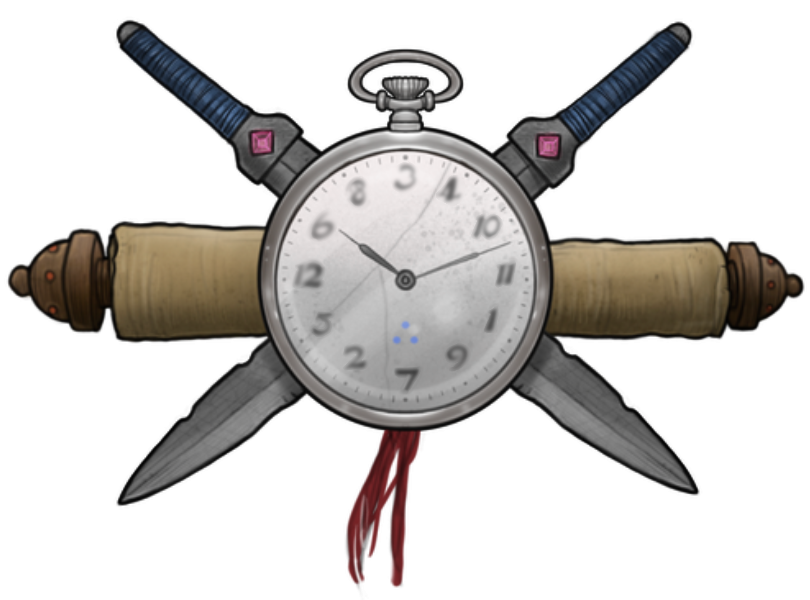
Time
As stated above, time is an odd phenomenon in the five districts. Individual perceptions of time's passage are completely personal, and two beings may experience it drastically differently. Dimm City's peculiar flow of space-time warps a body's internal clock, muddying time's intricacies and rendering precise language about it virtually meaningless. In this world, time is measured in cycles, which are defined as one interval of waking life between sleeps. That being said, Dimmers have their own way of approximating time that is fairly standard in the five districts:
Tick/ Tic: Refers to a very short and indefinite period of time (seconds to a minute or so (long tick).
Example: "Takea few ticks an I'll chat wit ya."
Shortly/Shorty: Implies that something will happen soon or in the near future (within 30 minutes or so).
Example: "Gotta meeting shorty, be ready to tellum the deets."
Bit/Byte: Denotes a short, unspecified period of time (an hour to two).
Example: "I'll be therea byte afta."
While: Indicates an indefinite period of time, often used when waiting or expecting something (its rude to just use the word by itself and better to use one of its variants).
- Quickwhile: 5-10 minutes
- Midwhile: 30 minutes to an hour
- Longwhile: 6-12 hours
- Fullwhile: 24-48 hours
- Deadwhile: 1 week or more...long enough for people to think ya dead
Example: "Rack out and MM me inna longwhile."
Cycle: A cycle is a waking period between sleeps. It is usually 16 or so hours long, but some individuals in Dimm City sleep more often or not as much. Every cycle's different.
Stretch: Indicates a flexible extended period of time (months to years).
Example: "I'll have this project done inna quick stretch and hit ya up whennits ready."
Some DimmCitz are sticklers for punctuality (because of their own neurosis or other reasons...), while most just don't give a razor rat's ass. If you wanna meet up, message. Direct communication is bout the only way to get around this anomaly.
Fulldark: When the light from the ether is at its weakest, plunging the city into a near-total darkness where danger thrives.
Murkshift: When the dim glow starts to creep back in, not so much bringing light as pulling the city out of total obscurity.
Grayrise: The closest the city gets to brightness, where the light is harsh and cold, casting deep, angular shadows.
Dimhold: A stagnant, hazy period where the light hangs in a perpetual twilight, leaving everything looking flat and washed out.
Gloomtide: When the light begins to fail, colors leech away, and the city slips toward Fulldark with a sense of inevitable decay.
Temporal Anchors
In Dimm City, residents anchor time to significant events, as conventional units like hours and dates hold little meaning due to the city's warped perception of time. People reference the "when" of things by tying them to district-specific or city-wide occurrences—saying things like, “That was right after the last Long Gleam” or “Back a deadwhile before the Archives burned...” This practice creates a shared, event-based timeline that helps residents orient themselves in a world where personal clocks falter, and space-time constantly shifts. The more impactful or chaotic the event, the more reliably it serves as a marker in the collective memory.
Here's several events that dimmers regularly refer to when talking about the past:
District-Specific Anchors
Dimm City's anchors capture the essence of its diverse districts, blending revelry, innovation, and chaos. Some events, like The Descent, embrace the eerie and surreal, while others highlight technological feats or spontaneous indulgence. These gatherings offer residents moments of escape, competition, and reinvention, reflecting the city's unpredictable nature.
Descent (The Dark)
A festival where residents descend into the event horizon of The Dark, participating in eerie rituals, UV-painted parades, and aerial performances. Occasionally, Daemon—or one of his "creations"—makes an appearance.
LongGleam (Entertainment District)
A spontaneous multi-day revel of neon parades, VR-induced hallucinations, and masquerades. Most participants blur their identities with a variety of masks or slicker tech until the event's end.
Savant's Unveiling (Archive District)
A week-long conference where scholars unveil significant discoveries, forge alliances, and duel over theories. The climax involves opening storage devices from past eras to reveal knowledge lost to the present age.
Power Surge (Tech District)
A high-energy festival showcasing new inventions, with drone fights, tech-enhanced races, and code battles. It ends with rolling blackouts to test backup systems and defenses.
Rabbit Rush (Market District)
A chaotic trading day with slashed prices and unrestricted bartering, allowing all comers access to the Burrows. Outsiders often enter during the Rush—a few never return.
City-Wide Anchors
The Shrouding
For five cycles or so, a thick mist engulfs the city, erasing identities and rules. It becomes a period of bold moves and reinvention.
Blackout
A cycle of total darkness when the city is illuminated only by bioluminescence and combustion lanterns to give thanks for the energy dimmcitz use cycle to cycle.
Mist Hunt
A full-cycle game where randomly selected participants must evade capture by others in the city. Success brings rewards, while captured participants are used by the victors to collect a bounty from the city or a variety of corporations.
Movement
Unless you have a specific ability to navigate the city or are being guided by someone who does, going from point A to point B in Dimm City is a meandering, seeingly time-consuming or quick and effortless process. A simple trip to the corner store that might take 15-20 minutes IRL can sometimes take a byte (one hour) or more unguided. It is like being in a waking dream, you know where you want to go starting out, but random things and people may distract and block you from the preferable path of least resistance. Yet again, this is half a problem with individual perception and the other half aberrant space-time phenomenon in Dimm City.
Necessities
Etherburn Contamination
Water that flows through Dimm City—especially the ArchD's coast or Tech District's riverfronts—have passed through the Ether and been touched by forces not meant for mortals to cross. Ether-tainted water absorbs dimensional resonance, accumulating a contaminant known as Etherburn. Invisible and tasteless, Etherburn scrambles minds, identity, and perception—causing hallucinations, memory loops, or even temporary planar dislocation. Boiling it only deepens the corruption. Thus treated, the water still remembers too much—it leaks dreams, stains personality, and takes something from those who drink it… or gives them something unwanted.
By contrast, water that falls—rain—remains untouched by ethereal rot. Collected and properly filtered, it’s one of the few truly potable sources in the sprawl. The sky doesn’t lie, and the rain forgets. Still, abundant rainfall is rare, and the tech needed to purify it en masse is sold at a premium. Locals call it Skybless, and many are willing to filch or fight for every drop.
Important Keywords
Pay attention to these keywords when you see them appear in this book:
Objects
Any inanimate thing in your scene, like a vehicle or a workstation.
Animals
Sentient creatures without self-
awareness or personhood, like insects,
rats, most small birds, and serpents
living in the streets and not so often
tread parts of Dimm City.
Spirits
Ethereal entities existing in the
neon-lit realms of Dimm City and
other realms. These specters lack
tangible bodies, resembling phantom
versions of their former selves (when
they choose to be seen) that glide
through the living world. Most spirits
remain hidden and imperceptible. In
many cases, some terrible tragedy ties
them to this realm, preventing the
spirit from transmigrating into infinity.
Creatures
Any sentient being, including both
NPCs and player characters.
Sporos, humans, AI, insects, aliens,
talking mushrooms — yes, anything.
Non-Player Characters (NPCs)
Any creature played by the Dream
Master.
Fodder
Folk on the street, everyday animals, sweepbots or other average creatures. Think of them like the part of the crowd that runs when the SHTF.
Operators
These bodies are usually more powerful than the average synthsucker, like a gang enforcers or a mercserc hire.
Masters
Unique creatures of power, wealth, intellect, or other importance who are may have or be resistant to some abilities. Many masters head a crew or sometimes even an army. Others go solo, watching their own backs.